NIST IR 4259 日本語訳
英語タイトル : Secure Data Network Systems (SDNS) Access Control Documents日本語タイトル : セキュアデータネットワークシステム（SDNS）アクセス制御文書
公開日 : 1990-02-01
原文URL : https://csrc.nist.gov/pubs/ir/4259/final
原本 PDF : https://doi.org/10.6028/NIST.IR.90-4259
訳文 : 有志による非公式の日本語訳（AI による翻訳とレビュー）。全 1089 段落のうち 1081 段落を翻訳済み（原文取得日 : 2026-10-31）
[要約] NIST IR 4259 は、セキュアデータネットワークシステム（SDNS）のアクセス制御文書を収めた報告書で、Charles Dinkel が編集しました。SDNS のアーキテクチャと関連仕様は、国家安全保障局（NSA）が後援した複数組織のプロジェクトで開発され、OSI アーキテクチャにおけるセキュリティサービスの標準化の基礎として示されています。NIST は、SDNS プロジェクトの第 I フェーズで得られた仕様を、政府と民間の利用者候補によるレビューとコメントのために公開しており、仕様は完全でも完全に整合したものでもなく、標準化の過程で変更されうると述べています。収録された文書は、アクセス制御概念文書、アクセス制御仕様、およびアクセス制御情報仕様の補遺 1（SDN.802/1）です。
NISTIR 90-4259
NISTIR 90-4259
SECURE DATA NETWORK SYSTEM (SDNS) ACCESS CONTROL DOCUMENTS
セキュアデータネットワークシステム（SDNS）アクセス制御文書
Charles Dinkel
Editor
Charles Dinkel
編集
U.S. DEPARTMENT OF COMMERCE
National Institute of Standards and Technology
National Computer Systems Laboratory
Gaithersburg, MD 20899
米国商務省
米国標準技術研究所
国立コンピューターシステム研究所
Gaithersburg, MD 20899
U.S. DEPARTMENT OF COMMERCE
Robert A. Mosbacher, Secretary
Lee Mercer, Deputy Under Secretary for Technology
NATIONAL INSTITUTE OF STANDARDS AND TECHNOLOGY
John W. Lyons, Director
米国商務省
Robert A. Mosbacher 長官
Lee Mercer 技術担当次官補
米国標準技術研究所
John W. Lyons 所長
NISTIR 90-4259
NISTIR 90-4259
SECURE DATA NETWORK SYSTEM (SDNS) ACCESS CONTROL DOCUMENTS
セキュアデータネットワークシステム（SDNS）アクセス制御文書
Charles Dinkel
Editor
Charles Dinkel
編集
U.S. DEPARTMENT OF COMMERCE
National Institute of Standards and Technology
National Computer Systems Laboratory
Gaithersburg, MD 20899
米国商務省
米国標準技術研究所
国立コンピューターシステム研究所
Gaithersburg, MD 20899
February 1990
1990 年 2 月
U.S. DEPARTMENT OF COMMERCE
Robert A. Mosbacher, Secretary
Lee Mercer, Deputy Under Secretary for Technology
NATIONAL INSTITUTE OF STANDARDS AND TECHNOLOGY
John W. Lyons, Director
米国商務省
Robert A. Mosbacher 長官
Lee Mercer 技術担当次官補
米国標準技術研究所
John W. Lyons 所長
Table of Contents
目次
Access Control Concept Document
アクセス制御概念文書
Access Control Specification Access Control Information Specification Addendum 1 (SDN.802/1)
アクセス制御仕様 アクセス制御情報仕様 補遺 1（SDN.802/1）
FOREWORD
まえがき
The Secure Data Network System (SDNS) architecture and a set of associated specifications were developed through a multi-organizational project sponsored by the National Security Agency (NSA). They are presented here as a basis for standardization of security services in the Open Systems Interconnection (OSI) architecture. The National Institute of Standards and Technology (NIST) intends to encourage widespread adoption of the resulting standards and the implementation of these security services into a wide spectrum of vendor products.
セキュアデータネットワークシステム（SDNS）アーキテクチャと関連する一連の仕様は、国家安全保障局（NSA）が後援する複数組織によるプロジェクトを通じて開発されました。これらは、開放型システム間相互接続（OSI）アーキテクチャにおけるセキュリティサービスの標準化の基礎として、ここに示されています。米国標準技術研究所（NIST）は、その結果として得られる標準が広く採用されること、およびこれらのセキュリティサービスが幅広いベンダー製品に実装されることを促進する意向です。
NIST is publishing the specifications that resulted from Phase I of the SDNS project for review and comment from potential government and commercial users of security products. The specifications are not complete or totally consistent, either internally or with a number of other security projects in the National and International Standards arena. Readers of these documents should recognize that these specifications are subject to modification for various reasons as they progress through the standards process. The sponsor and participants in the SDNS project are acknowledged for the work accomplished and their support in developing and releasing these specifications.
NIST は、SDNS プロジェクトのフェーズ I で得られた仕様を、セキュリティ製品の潜在的な政府および民間の利用者によるレビューとコメントのために公開します。これらの仕様は、内部的にも、国内および国際標準の分野にある他の多くのセキュリティプロジェクトとの間でも、完全ではなく、完全に整合しているわけでもありません。これらの文書の読者は、仕様が標準化の過程を進むなかで、さまざまな理由により変更される場合があることを認識すべきです。SDNS プロジェクトの後援者と参加者には、達成された成果と、これらの仕様の開発および公開への支援に対して謝意を表します。
The SDNS project was initiated by NSA to investigate methods of implementing security in a distributed computer network. The results of this project include a set of specifications that include security services, protocols and mechanisms for protecting user data in networks that are based on the OSI computer network model. Productive security services that protect user data are specified and supportive security services, such as key management and access control, are also provided. No cryptographic algorithms are included in these specifications.
SDNS プロジェクトは、分散コンピューターネットワークにセキュリティを実装する方法を調査するために NSA が開始したものです。このプロジェクトの成果には、OSI コンピューターネットワークモデルに基づくネットワークでユーザーデータを保護するためのセキュリティサービス、プロトコル、メカニズムを含む一連の仕様が含まれます。ユーザーデータを保護する生産的なセキュリティサービスが規定され、鍵管理やアクセス制御といった支援的なセキュリティサービスも提供されています。これらの仕様には暗号アルゴリズムは含まれていません。
NIST is working with NSA and industry to identify and develop a framework of base standards for network security. In 1989, NIST established the OSI Security Laboratory where interested researchers from government and industry develop and demonstrate new ideas in network security. The major goals of NIST's network security activities are to:
NIST は、NSA および産業界と協力して、ネットワークセキュリティの基本標準の枠組みを特定し、開発しています。1989 年に NIST は OSI セキュリティ研究所を設立し、政府と産業界の関心ある研究者がネットワークセキュリティの新しい考え方を開発し、実証しています。NIST のネットワークセキュリティ活動の主な目標は、次のとおりです。
•Identify and develop security standards for open systems
•開放型システムのセキュリティ標準を特定し、開発すること
•Specify a key management system that supports these security standards
•これらのセキュリティ標準を支える鍵管理システムを規定すること
•Encourage the development of interoperable equipment
•相互運用可能な機器の開発を促進すること
The documents resulting from Phase I of the SDNS project are as follows:
SDNS プロジェクトのフェーズ I で得られた文書は、次のとおりです。
•SDN.301 - Security Protocol 3 (SP3)
•SDN.301 - Security Protocol 3（SP3）
•SDN.401 - Security Protocol 4 (SP4)
•SDN.401 - Security Protocol 4（SP4）
•SDN.601 - Key Management Profile - Communication Protocol Requirements for Support of the SDNS Key Management Protocol
•SDN.601 - Key Management Profile - SDNS 鍵管理プロトコルのサポートのための通信プロトコル要件
•SDN.701 - Message Security Protocol
•SDN.701 - Message Security Protocol
•SDN.702 - SDNS Directory Specifications for Utilization with the SDNS Message Security Protocol
•SDN.702 - SDNS Directory Specifications for Utilization with the SDNS Message Security Protocol
•SDN.801 - Access Control Concepts Document
•SDN.801 - Access Control Concepts Document
•SDN.802 - Access Control Specification
•SDN.802 - Access Control Specification
•SDN.902 - Key Management Protocol - Definition of Services Provided by the Key Management Application Service Element
•SDN.902 - Key Management Protocol - 鍵管理アプリケーションサービス要素が提供するサービスの定義
•SDN.903 - Key Management Protocol - Specification of the Protocol for Services Provided by the Key Management Application Service Element
•SDN.903 - Key Management Protocol - 鍵管理アプリケーションサービス要素が提供するサービスのためのプロトコル仕様
•SDN.906 - Key Management Protocol - SDNS Traffic Key Attribute Negotiation
•SDN.906 - Key Management Protocol - SDNS トラフィック鍵属性ネゴシエーション
Because of the wide spread interest in the SDNS project, NIST is publishing these ten documents as three Reports entitled: Security Protocols, Key Management, and Access Control. The following diagram shows the relationship and contents of these reports.
SDNS プロジェクトへの関心が広いことから、NIST はこれら 10 件の文書を、「セキュリティプロトコル」「鍵管理」「アクセス制御」という 3 つの報告書として公開します。次の図は、これらの報告書の関係と内容を示しています。
| NIST REPORT | ||||
|---|---|---|---|---|
| SECURITY PROTOCOLS | SDN.301 SECURITY PROTOCOL 3 (SP3) | SDN.401 SECURITY PROTOCOL 4 (SP4) | SDN.701 MESSAGE SECURITY PROTOCOL | SDN.702 DIRECTORY SPECS FOR USE WITH MSP |
| KEY MANAGEMENT | SDN.601 KEY MANAGEMENT PROFILE | SDN.902 KMP DEFINITION OF SERVICES PROVIDED BY KM ASE | SDN.903 KMP SERVICES PROVIDED BY KM ASE | SDN.906 KMP TRAFFIC KEY ATTRIBUTE NEGOTIATION |
| ACCESS CONTROL | SDN.801 ACCESS CONTROL CONCEPT DOCUMENT | SDN.802 ACCESS CONTROL SPECIFICATION |
| NIST 報告書 | ||||
|---|---|---|---|---|
| セキュリティプロトコル | SDN.301 セキュリティプロトコル 3（SP3） | SDN.401 セキュリティプロトコル 4（SP4） | SDN.701 メッセージセキュリティプロトコル | SDN.702 MSP と併用するためのディレクトリ仕様 |
| 鍵管理 | SDN.601 鍵管理プロファイル | SDN.902 KM ASE が提供するサービスの KMP 定義 | SDN.903 KM ASE が提供する KMP サービス | SDN.906 KMP トラフィック鍵属性ネゴシエーション |
| アクセス制御 | SDN.801 アクセス制御概念文書 | SDN.802 アクセス制御仕様 |
INTRODUCTION
序論
NISTIR 90-4259 consists of three documents developed by the National Security Agency (NSA) as output from the Secure Data Network System (SDNS) project. The Access Control Concept Document, SDN.801, describes the principles and functions underlying the SDNS access control and authentication security services. It is a goal that the access control and authentication mechanisms designed by SDNS be adaptable to support a wide range of anticipated customer security policies.
NISTIR 90-4259 は、国家安全保障局（NSA）がセキュアデータネットワークシステム（SDNS）プロジェクトの成果として作成した 3 件の文書で構成されます。アクセス制御概念文書（SDN.801）は、SDNS のアクセス制御および認証のセキュリティサービスの基礎となる原則と機能を説明しています。SDNS が設計するアクセス制御と認証のメカニズムを、想定される幅広い顧客のセキュリティポリシーに対応できるよう適応可能にすることが目標です。
The purpose of SDN.802, the Access Control Specification, is to provide a common basis from which devices implementing the access control service will be able to achieve interoperability. The document also identifies points of reference for users implementing the SDNS Security Protocols for Network, Transport, or Messaging. SDN.802 gives a functional description of the SDNS access control system and establishes a point of reference from which security protocols can make use of the access control service.
アクセス制御仕様である SDN.802 の目的は、アクセス制御サービスを実装する装置が相互運用性を達成できるようにするための共通の基盤を提供することです。この文書は、SDNS のネットワーク、トランスポート、またはメッセージング向けセキュリティプロトコルを実装する利用者のための参照点も示しています。SDN.802 は SDNS アクセス制御システムの機能的な記述を与え、セキュリティプロトコルがアクセス制御サービスを利用するための参照点を確立します。
The SDN.802 specification also provides an overview of the Access Control Information Specification (ACIS). ACIS provides a uniform method for encoding access control information which is independent of any particular security policy. It also provides a standard algorithm for interpreting and comparing access control attributes.
SDN.802 仕様は、アクセス制御情報仕様（ACIS）の概要も示しています。ACIS は、特定のセキュリティポリシーに依存しない、アクセス制御情報の統一的な符号化方法を提供します。また、アクセス制御属性を解釈し比較するための標準アルゴリズムも提供します。
The third document in this set, SDN.802/1, ACIS Addendum 1, is an extension of the ACIS discussion provided in section 5 of SDN.802. It furnishes a detailed explanation of the capabilities, limitations, and implementation requirements for ACIS.
この一連の文書の 3 番目である SDN.802/1（ACIS 補遺 1）は、SDN.802 の第 5 節で示した ACIS に関する議論を拡張したものです。ACIS の能力、制約、実装要件を詳細に説明しています。
The access control documents of NISTIR 90-4259 support the security protocols addressed in NISTIR 90-4250 and the key management services covered in NISTIR 90-4262.
NISTIR 90-4259 のアクセス制御文書は、NISTIR 90-4250 で扱うセキュリティプロトコルと、NISTIR 90-4262 で扱う鍵管理サービスを支えるものです。
Comments and feedback are solicited by NIST.
NIST は、コメントとフィードバックを求めています。
ACCESS CONTROL CONCEPT DOCUMENT (REVISION 1.3)
アクセス制御概念文書（改訂 1.3 版）
26 July 1989
1989 年 7 月 26 日
Preface
序文
This paper has resulted from the developmental work accomplished within the Secure Data Network System (SDNS). This paper addresses SDNS access control and, as such, represents the consensus of the Access Control Working Group (ACWG). Other SDNS working groups, such as Protocol and Systems Management have addressed the other major components of the SDNS. All of these have had a direct influence on the preliminary SDNS access control concepts that are presented in this paper.
本書は、セキュアデータネットワークシステム（SDNS）における開発作業の成果です。本書は SDNS のアクセス制御を扱っており、アクセス制御作業部会（ACWG）の合意を示すものです。プロトコルやシステム管理などの SDNS の他の作業部会は、SDNS の他の主要な構成要素を扱ってきました。これらはすべて、本書で示す暫定的な SDNS アクセス制御の概念に直接影響を与えています。
Table of Contents
目次
Preface — Front
序文 — 前付
Table of Contents — Front
目次 — 前付
List of Figures — Front
図の一覧 — 前付
List of Figures
図の一覧
1. INTRODUCTION: ACCESS CONTROL WITHIN SDNS
1. 序論: SDNS におけるアクセス制御
1.1 Overview
1.1 概要
This document describes the principles and functions underlying the Secure Data Network System (SDNS) access control and authentication security services. A trusted distribution algorithm, operating in conjunction with a trusted central authority, provides a means for an authenticated exchange of identity and attribute data between communicating peers. Auxiliary vectors (AVs) provide a means for local authorities to represent additional identity and attribute data within their jurisdiction, without the central authorities’ involvement. Based on these and other inputs, a range of rule-based access control (RBAC) and identity-based access control (IBAC) can be afforded in order to satisfy customer requirements. Access approval, enforcement, and authentication functions are defined in a general fashion, compatible with real time and store-and-forward communication contexts.
本書は、セキュアデータネットワークシステム（SDNS）のアクセス制御および認証のセキュリティサービスの基礎となる原則と機能を説明します。信頼できる中央機関と連携して動作する信頼できる配布アルゴリズムは、通信するピア間で識別情報と属性データを認証された形で交換する手段を提供します。補助ベクトル（AV）は、ローカルな機関が、中央機関の関与なしに、その管轄内の追加の識別情報と属性データを表現する手段を提供します。これらおよびその他の入力に基づいて、顧客の要件を満たすために、さまざまなルールベースアクセス制御（RBAC）および識別情報ベースアクセス制御（IBAC）を実現できます。アクセスの承認、実施、認証の各機能は、リアルタイム通信と蓄積交換型通信の状況に適合するよう、一般的な形で定義されています。
With the intention of applying multiple vendor SDNS security products to a wide variety of communicating data systems, the SDNS security architecture does not limit secure communications to security products provided by any one vendor. As a result, the access control and authentication security services provided by any SDNS security product must share a common structure. It is a goal that the access control and authentication mechanisms designed by SDNS be adaptable to support a wide range of anticipated customer security policies. The application and variety of security policies influenced the development of a four-tiered model to represent access control identification information.
複数のベンダーの SDNS セキュリティ製品を、多様な通信データシステムに適用する意図から、SDNS のセキュリティアーキテクチャは、安全な通信をいずれか 1 つのベンダーが提供するセキュリティ製品に限定していません。その結果、いずれの SDNS セキュリティ製品が提供するアクセス制御および認証のセキュリティサービスも、共通の構造を共有しなければなりません。SDNS が設計するアクセス制御と認証のメカニズムを、想定される幅広い顧客のセキュリティポリシーに対応できるよう適応可能にすることが目標です。セキュリティポリシーの適用範囲と多様性が、アクセス制御の識別情報を表現するための 4 階層モデルの開発に影響を与えました。
A framework has been developed for authentication data and access control checks which will allow communication between different SDNS users/systems when their respective security policies allow it. SDNS access control consists of two processes: the Peer Access Approval process for interpreting the data of the four-tiered model, and the Peer Access Enforcement process for enforcing access control on a Protocol Data Unit (PDU) basis.
認証データとアクセス制御チェックの枠組みが開発されました。この枠組みにより、異なる SDNS のユーザー/システムそれぞれのセキュリティポリシーが許す場合に、それらの間での通信が可能になります。SDNS のアクセス制御は、2 つのプロセスで構成されます。4 階層モデルのデータを解釈するピアアクセス承認プロセスと、プロトコルデータユニット（PDU）単位でアクセス制御を実施するピアアクセス実施プロセスです。
Security policies are generally established by different administrative levels within an organization. The policies established at each administrative level should either reflect the consistent implementation of the policy established by the administrative level above it or establish security policies that are unique to the current administrative level. These policies have been broadly categorized as rule based and identity based policies.
セキュリティポリシーは通常、組織内のさまざまな管理レベルによって確立されます。各管理レベルで確立されるポリシーは、その上位の管理レベルが確立したポリシーの一貫した実装を反映するか、現在の管理レベルに固有のセキュリティポリシーを確立するかのいずれかであるべきです。これらのポリシーは、大きくルールベースのポリシーと識別情報ベースのポリシーに分類されています。
In order to implement a security policy within any security product, the security policy specification must translate the security policy into a realizable structure (such as an algorithm) and identify the characteristics of each entity which will serve as inputs to the security policy algorithm. The application of a security policy algorithm to the joint characteristics of each communicating entity, along with establishing the validity of each entity's characteristics, results in an access control decision.
セキュリティ製品の中でセキュリティポリシーを実装するには、セキュリティポリシーの仕様が、そのポリシーを実現可能な構造（アルゴリズムなど）に変換し、セキュリティポリシーアルゴリズムへの入力となる各エンティティの特性を特定しなければなりません。セキュリティポリシーアルゴリズムを、通信する各エンティティの特性を合わせたものに適用し、あわせて各エンティティの特性の有効性を確立することで、アクセス制御の決定が得られます。
SDNS must support the dynamic mechanisms which identify the communicating entities, mediate their access, and enforce the security policy of that specific communication. Most end system and data access decisions will be made as a machine function on behalf of the SDNS users. Toward that end, the SDNS authentication and access control functions are based on the following five assumptions:
SDNS は、通信するエンティティを識別し、そのアクセスを仲介し、その特定の通信のセキュリティポリシーを実施する動的なメカニズムをサポートしなければなりません。エンドシステムとデータへのアクセスの決定の大半は、SDNS のユーザーに代わって機械的な機能として行われます。そのため、SDNS の認証とアクセス制御の機能は、次の 5 つの前提に基づいています。
1.Security policies that can be implemented by SDNS are those that are mechanistically specifiable (algorithmically expressable).1
1.SDNS が実装できるセキュリティポリシーは、機械的に規定できる（アルゴリズムで表現できる）ものです。1
2.A set of characteristics of the communicating entities is input to an algorithmic security policy decision process. These characteristics have been subdivided into four subsets which are identified as the four-tiered model.
2.通信するエンティティの一連の特性が、アルゴリズムによるセキュリティポリシー決定プロセスへの入力となります。これらの特性は 4 つの部分集合に分けられており、4 階層モデルと呼ばれます。
3.Authentication of the SDNS accountable entities is established through a strongly trusted distribution method. This distribution method must employ nonforgeable identification and authentication. From this basis, peer entity authentication is expanded to meet the requirements of SDNS authentication for access control.
3.SDNS の責任主体の認証は、強く信頼される配布方法によって確立されます。この配布方法では、偽造できない識別と認証を用いなければなりません。これを基礎として、ピアエンティティ認証を拡張し、アクセス制御のための SDNS 認証の要件を満たします。
4.SDNS provides two processes for access control decisions. The first process determines whether communications can be initiated, and the second process provides continuing access control of data. These are the Peer Access Approval (PAA) and Peer Access Enforcement (PAE) processes.
4.SDNS は、アクセス制御の決定のために 2 つのプロセスを提供します。1 つ目のプロセスは通信を開始できるかどうかを判定し、2 つ目のプロセスはデータに対する継続的なアクセス制御を提供します。これらは、ピアアクセス承認（PAA）プロセスとピアアクセス実施（PAE）プロセスです。
5.SDNS cannot correct deficiencies in end systems.
5.SDNS は、エンドシステムの欠陥を是正できません。
The SDNS access control concept document centers on the above second and fourth bullets. The discussion of these two bullets is couched in terms of a required strong authentication process and results in a specific operational access control concept for SDNS.
SDNS のアクセス制御概念文書は、上記の箇条書きのうち第2項目と第4項目を中心にしています。これら2項目の議論は、必要とされる強力な認証プロセスという観点から述べられており、SDNS 向けの具体的な運用上のアクセス制御概念につながります。
1.2 Scope & References
1.2 範囲と参考文献
This access control concept document provides a framework for understanding SDNS access control; it does not provide the detail that would allow the implementation of SDNS access control in any particular environment. These concepts will be used to develop the SDNS Access Control System Specification (SDN.802).
このアクセス制御概念文書は、SDNS のアクセス制御を理解するための枠組みを提供するものであり、特定の環境で SDNS のアクセス制御を実装できるようにする詳細までは提供しません。これらの概念は、SDNS アクセス制御システム仕様（SDN.802）の開発に用いられます。
1.3 Relationship of Authentication and Access Control Within SDNS
1.3 SDNS における認証とアクセス制御の関係
A strong authentication mechanism is required through which an SDNS component receives the information necessary to identify and validate another SDNS component. Each communicating SDNS component determines the identity of the other accountable entity from this strong authentication information. The access permissions, limitations, or constraints enforced during that association are established using the identity information received from a trusted central authority in the form of an identity certificate. Note that the identification information contained within an identity certificate will not be uniform over the entire family of SDNS components, but varies with regard to many factors (i.e., the OSI layer at which the SDNS component operates, local security policy).
強力な認証メカニズムが必要であり、それを通じて SDNS コンポーネントは、別の SDNS コンポーネントを識別し検証するために必要な情報を受け取ります。通信する各 SDNS コンポーネントは、この強力な認証情報から、相手の責任主体の識別情報を判定します。その関連付けの間に実施されるアクセス許可、制限、制約は、信頼できる中央機関から識別証明書の形で受け取った識別情報を用いて確立されます。識別証明書に含まれる識別情報は、SDNS コンポーネント全体にわたって一様ではなく、多くの要因（SDNS コンポーネントが動作する OSI 層、ローカルのセキュリティポリシーなど）によって異なることに注意してください。
1.3.1 Exchange
1.3.1 交換
SDNS access control decisions begin with the accountable entities attempting to communicate. These decisions are made in the context of each accountable entity’s security policy, as established by the appropriate cognizant authority. Once initialized, the SDNS components can establish the means to securely communicate. Identity certificates are exchanged on behalf of the SDNS accountable entities. Access control enforcement occurs as a result of using the information contained in the identity certificate and continues as long as the specific association exists. The information contained within the identity certificate is intentionally left as general as possible to help preserve interoperability. This allows authorities to configure a wide variety of security policies to govern access control decisions. The information contains enough granularity to allow for access control decisions according to the security policies applied.
SDNS のアクセス制御の決定は、責任主体が通信を試みるところから始まります。これらの決定は、適切な管轄機関が確立した各責任主体のセキュリティポリシーの文脈で行われます。初期化が済むと、SDNS コンポーネントは、安全に通信する手段を確立できます。識別証明書は、SDNS の責任主体に代わって交換されます。アクセス制御の実施は、識別証明書に含まれる情報を用いた結果として行われ、その特定の関連付けが存在する限り続きます。識別証明書に含まれる情報は、相互運用性を保つため、意図的にできるだけ一般的なものにしてあります。これにより、機関はアクセス制御の決定を支配する幅広いセキュリティポリシーを設定できます。この情報は、適用されるセキュリティポリシーに従ってアクセス制御の決定を行えるだけの粒度を備えています。
1.3.2 Authentication
1.3.2 認証
Accountable entity authentication means that those identity characteristics, attributable to the entity being protected by the SDNS component and meaningful for access control, are exchanged and verified. The chosen authentication scheme must support the goal of confirming (authenticating) the identities of the SDNS components.
責任主体の認証とは、SDNS コンポーネントによって保護される主体に帰属し、アクセス制御にとって意味のある識別上の特性が、交換され検証されることを意味します。選択する認証方式は、SDNS コンポーネントの識別情報を確認する（認証する）という目標を支えるものでなければなりません。
The COMPOSITE ID (the total of all identity information about an accountable entity as contained in the identity certificate and any extensions, see Section 1.3.4) carries the information necessary for an SDNS component to make an access control decision commensurate with the security policies involved.
COMPOSITE ID（識別証明書およびその拡張に含まれる、責任主体に関するすべての識別情報の総体。第 1.3.4 節を参照）は、SDNS コンポーネントが、関係するセキュリティポリシーに見合ったアクセス制御の決定を行うために必要な情報を運びます。
1.3.3 Access Control
1.3.3 アクセス制御
Two variations of an authentication process are discussed in this document, real time and staged delivery. Both variations provide equivalent outcomes. Either an association between entities is established (and supervised according to each SDNS component’s access rules) or communication is denied. The authentication mechanism must establish the identity of each SDNS accountable entity involved in the requested secure communication. Once the identity information exchange process has been accomplished another process will be initiated to determine whether or not the secure communication should be allowed. This process is called the PAA process. The PAA process initially determines the constraints imposed upon the secure communication between peers. These constraints are established by interpreting the identity certificate data of both SDNS components and placing the resulting constraints, limitations, or permissions which apply to information present in a PDU label, within an Enforcement Vector (EV). If a valid EV has been formed, the communication is established and the PAE process monitors each inbound and outbound PDU for conformance with the EV's constraints. The information in the EV and the PDU may be represented differently, thus a translation may be required before an access control decision may be made on a PDU. PDUs that conform pass unimpeded; PDUs that do not conform are dropped.
本書では、認証プロセスの 2 つの変形、すなわちリアルタイム方式と段階的配送方式を論じます。どちらの変形も同等の結果をもたらします。すなわち、エンティティ間の関連付けが（各 SDNS コンポーネントのアクセスルールに従って監督されつつ）確立されるか、通信が拒否されるかのいずれかです。認証メカニズムは、要求された安全な通信に関与する各 SDNS 責任主体の識別情報を確立しなければなりません。識別情報の交換プロセスが完了すると、その安全な通信を許可すべきかどうかを判定する別のプロセスが開始されます。このプロセスを PAA プロセスと呼びます。PAA プロセスはまず、ピア間の安全な通信に課される制約を判定します。これらの制約は、両方の SDNS コンポーネントの識別証明書データを解釈し、その結果として得られる、PDU ラベルに存在する情報に適用される制約、制限、または許可を、実施ベクトル（EV）に格納することで確立されます。有効な EV が形成された場合、通信が確立され、PAE プロセスが、受信および送信の各 PDU が EV の制約に適合しているかを監視します。EV 内の情報と PDU 内の情報は異なる形で表現されている場合があり、そのため、PDU についてアクセス制御の決定を行う前に変換が必要になることがあります。適合する PDU は妨げられずに通過し、適合しない PDU は破棄されます。
1.3.4 Extension to the Identity Certificate
1.3.4 識別証明書の拡張
The identity certificate may not be large enough to contain all of the information which is needed to adequately identify an SDNS user/component, and the lifetime of some of the access control information may be too short to be included in the identity certificate. Therefore, a scheme was devised to place all of the locally defined information under the control of a local authority. Both the local rule based and some of the identity based access control information may be generated by a local authority in the form of an auxiliary vector, which is bound to the identity certificate. The assemblage of information contained in the identity certificate and in the auxiliary vector will be referred to as the COMPOSITE ID. The "Local Domain Authority Identifier" field in the identity certificate identifies the source of the additional access control information to the SDNS user/component.
識別証明書は、SDNS のユーザー/コンポーネントを十分に識別するために必要なすべての情報を含められるだけの大きさがない場合があり、また、アクセス制御情報の一部は有効期間が短すぎて識別証明書に含められない場合があります。そこで、ローカルに定義される情報をすべて、ローカル機関の管理下に置く方式が考案されました。ローカルルールベースのアクセス制御情報と、識別情報ベースのアクセス制御情報の一部は、識別証明書に結び付けられた補助ベクトルの形で、ローカル機関が生成する場合があります。識別証明書と補助ベクトルに含まれる情報の集合を、COMPOSITE ID と呼びます。識別証明書内の「Local Domain Authority Identifier」フィールドは、SDNS のユーザー/コンポーネントに対する追加のアクセス制御情報の出所を識別します。
1.3.5 Impact of Store-and-Forward Key Formulation
1.3.5 蓄積交換型の鍵構成の影響
The store-and-forward characteristic of electronic mail (E-Mail) introduces a number of special issues which do not apply to an environment in which peer entities communicate directly in real time. Originator and recipient user agents (UAs) do not communicate in real time. As a result, the information contained in a recipient's identity certificate and auxiliary vector (as posted on a server or bulletin board system) must be sufficient to allow an originator to perform any desired access control checks.
電子メール（E-Mail）の蓄積交換型という特性は、ピアエンティティがリアルタイムで直接通信する環境には当てはまらない、多くの特有の問題をもたらします。発信者側と受信者側のユーザーエージェント（UA）はリアルタイムでは通信しません。その結果、（サーバーや掲示板システムに掲示された）受信者の識別証明書と補助ベクトルに含まれる情報は、発信者が必要なアクセス制御チェックをすべて実行できるだけの十分なものでなければなりません。
In the context of store-and-forward communication, it is not practical, in general, to carry out a distinct mutual association validation step within PAA, subsequent to the certificate exchange. Each transmitted message is an autonomous entity, outside the context of any bilaterally-accepted association. Therefore, an originator must make any access control decisions without a prior validation step. Transmission takes place without prior, timely assurance of an intended peer's participation as the actual recipient of the transfer.
蓄積交換型の通信では、一般に、証明書の交換の後に、PAA の中で個別の相互の関連付けの検証ステップを実施することは現実的ではありません。送信される各メッセージは、双方向で受け入れられた関連付けの文脈の外にある、自律的なエンティティです。したがって、発信者は、事前の検証ステップなしにアクセス制御の決定を行わなければなりません。送信は、意図するピアが転送の実際の受信者として参加することを事前に適時に保証することなく行われます。
1.4 Four-Tiered Model for Access Control
1.4 アクセス制御の 4 階層モデル
The four-tiered model, described in subsequent sections of this paper, serves as a vehicle for defining the types of information necessary for making an access control decision. Depending on appropriate policy, with the exception of the first tier, not all tiers must be used by all SDNS components.
本書の後続の節で説明する 4 階層モデルは、アクセス制御の決定を行うために必要な情報の種類を定義するための手段となります。適切なポリシーに応じて、最初の階層を除き、すべての SDNS コンポーネントがすべての階層を使用する必要があるとは限りません。
The four-tiered model consists of:
4 階層モデルは、次で構成されます。
•Partition Tier - An SDNS access control division, at the highest level, of the population into discrete groups.
•パーティション階層 - 最上位レベルでの、母集団の個別のグループへの SDNS アクセス制御上の区分。
•Partition Rule Based Access Control Tier - Expression of the SDNS access control information which represents a policy common to all entities in the same partition.
•パーティションルールベースアクセス制御階層 - 同じパーティション内のすべてのエンティティに共通するポリシーを表す SDNS アクセス制御情報の表現。
•Local Rule Based Access Control Tier - Expression of the SDNS access control information which represents locally applicable policies or rules which govern the access to resources owned or administered by specific organizations.
•ローカルルールベースアクセス制御階層 - 特定の組織が所有または管理する資源へのアクセスを統制する、ローカルに適用されるポリシーまたはルールを表す SDNS アクセス制御情報の表現。
•Identity Based Access Control Tier - Expression of the identity of the peer and additional information about the kinds of associations that are allowed with that peer.
•識別情報ベースアクセス制御階層 - ピアの識別情報と、そのピアとの間で許可される関連付けの種類に関する追加情報の表現。
2. PAA, PAE and THE FOUR-TIERED MODEL
2. PAA、PAE、および 4 階層モデル
2.1 Introduction
2.1 序論
This section describes the processes of PAA and PAE and amplifies the four-tiered model. The relationship between PAA, PAE, and the four-tiered model is examined. Several figures are used to describe these processes, their operation, and their interoperation.
本節では、PAA と PAE のプロセスを説明し、4 階層モデルを詳述します。PAA、PAE、4 階層モデルの関係を検討します。これらのプロセス、その動作、および相互動作を説明するために、いくつかの図を用います。
2.2 Relationship of PAA, PAE, and the Four-Tiered Model
2.2 PAA、PAE、および 4 階層モデルの関係
SDNS provides two processes for access control decisions. The first process determines whether communications can be initiated, and the second process provides continuing access control of data. These processes are PAA and PAE, respectively. Figure 1 represents one possible placement of an SDNS component relative to the network and the end system.2
SDNS は、アクセス制御の決定のために 2 つのプロセスを提供します。1 つ目のプロセスは通信を開始できるかどうかを判定し、2 つ目のプロセスはデータに対する継続的なアクセス制御を提供します。これらのプロセスは、それぞれ PAA と PAE です。図 1 は、ネットワークとエンドシステムに対する SDNS コンポーネントの配置の一例を示しています。2
Figure 1. SDNS Relationship to the System
図 1. システムに対する SDNS の関係
Figure 2 illustrates the situation of the Key Management Protocol (KMP) calling PAA to perform its function; an exception to this is the store-and-forward-case. Two specific services in KMP make use of the PAA process. First, PAA is called upon to evaluate both peer’s identity certificate information (Peer credentials received). All of the access control-relevant identity certificate information will be evaluated at this time. If no further access control information is to be exchanged, the PAA process will yield a result (Process successful or Process failed) which will be returned to KMP. If additional access control information is to be exchanged, PAA will again be called upon to evaluate both peers’ additional access control information (in the form of an Auxiliary Vector (AV)). (Additional access control information received.) Upon the completion of PAA a result will be returned to the KMP (Process successful or Process failed). It is this result which will determine the remainder of the processing which the KMP must perform.
図 2 は、鍵管理プロトコル（KMP）が PAA を呼び出してその機能を実行する状況を示しています。ただし、蓄積交換型の場合は例外です。KMP の 2 つの特定のサービスが PAA プロセスを利用します。第 1 に、PAA が呼び出されて、双方のピアの識別証明書情報（受信したピアの資格情報）を評価します。アクセス制御に関連するすべての識別証明書情報が、このときに評価されます。これ以上アクセス制御情報を交換しない場合、PAA プロセスは結果（プロセス成功またはプロセス失敗）を出し、それが KMP に返されます。追加のアクセス制御情報を交換する場合、PAA は再び呼び出されて、双方のピアの追加のアクセス制御情報（補助ベクトル（AV）の形で受信した情報）を評価します。（追加のアクセス制御情報を受信。）PAA が完了すると、結果（プロセス成功またはプロセス失敗）が KMP に返されます。KMP が実行しなければならない残りの処理を決定するのは、この結果です。
![State diagram with two states, "Wait" (left) and "PAA" (right), joined by labelled arrows. From Wait to PAA: event "Peer Credentials Received" with action "Parse Identity Certificate Credentials"; event "Additional Access Control Info Received" with action "Parse Additional Access Control Info". From PAA back to Wait: "PAA Successful On Identity Certificate Credentials" / "KMP Allowed To Continue" (top loop); "PAA Successful" / "Pass EV"; "PAA Failed" / "Abort" (bottom loop). Key: an arrow with "Event" written above it and "Action" below it.](assets/ir-4259/p0023-drawing-02.png)
Figure 2. KMP/PAA State Diagram
図 2. KMP/PAA 状態遷移図
Figure 3 illustrates the situation of the Security Protocol (SP) calling PAE to perform its processing. The SP acts as a gatekeeper for all data packets, both incoming and outgoing. When the SP receives a packet for processing it checks to see if the appropriate pointer is in place. If this pointer is not in place the SP will enter an error condition and drop the packet (some implementations may allow for an optional recovery attempt to be made; the packet being processed may be cached with the processing being transferred to KMP in an attempt to establish a secure association). At the appropriate time in the SP processing the PAE process will be called upon to perform its processing (PDU received for processing). The PAE process will yield a result (No EV, EV checks OK, EV checks not OK) which will be returned to the SP. It is this result which will determine the remainder of the processing which the SP must perform.
図 3 は、セキュリティプロトコル（SP）が PAE を呼び出して処理を実行する状況を示しています。SP は、受信と送信の両方のすべてのデータパケットに対する門番として動作します。SP は処理のためにパケットを受け取ると、適切なポインターが設定されているかを確認します。このポインターが設定されていない場合、SP はエラー状態になり、パケットを破棄します（実装によっては任意の回復試行を認める場合があります。その試行では、安全な関連付けの確立を試みるため、処理中のパケットをキャッシュし、処理を KMP に移すことがあります）。SP の処理の適切な時点で、PAE プロセスが呼び出されて処理を実行します（処理のために PDU を受信）。PAE プロセスは結果（EV なし、EV チェック OK、EV チェック NG）を出し、それが SP に返されます。SP が実行しなければならない残りの処理を決定するのは、この結果です。
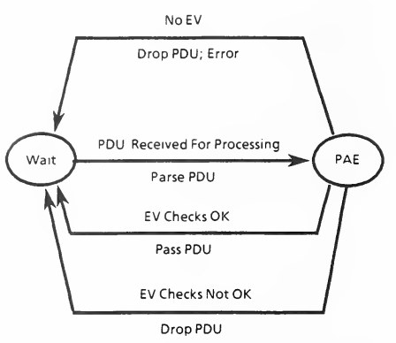
Figure 3. SP/PAE State Diagram
図 3. SP/PAE 状態遷移図
2.2.1 Peer Access Approval
2.2.1 ピアアクセス承認
Peer Access Approval is the process by which a sender/recipient uses a particular implementation of the four-tiered model to establish an EV. Figure 4, a top-level diagram of the four-tiered access control model's evaluation process, illustrates the evaluation process for both an initiator and recipient peer entity. The evaluation process depends on whether the peer entity is initiating or receiving the initial message, and also on whether the peer is functioning in the store-and-forward or real time mode. For an initiator, the PAA process begins when the local process discovers that an EV does not exist for an outbound PDU and concludes with the security service option negotiation. Correspondingly, the PAA process for a recipient begins when the local process receives an establishment request for an association and also concludes with the security service option negotiation.
ピアアクセス承認は、送信者/受信者が 4 階層モデルの特定の実装を用いて EV を確立するプロセスです。4 階層アクセス制御モデルの評価プロセスの最上位の図である図 4 は、開始側と受信側の両方のピアエンティティについての評価プロセスを示しています。評価プロセスは、ピアエンティティが最初のメッセージを開始する側か受信する側かによって異なり、またピアが蓄積交換型モードとリアルタイムモードのどちらで機能しているかによっても異なります。開始側の場合、PAA プロセスは、ローカルのプロセスが送信 PDU に対する EV が存在しないことを発見したときに始まり、セキュリティサービスオプションのネゴシエーションで終わります。これに対応して、受信側の PAA プロセスは、ローカルのプロセスが関連付けの確立要求を受け取ったときに始まり、同じくセキュリティサービスオプションのネゴシエーションで終わります。
![Flowchart in two columns. Left column "As An Initiator:": "Preliminary Checks" → "Send Certificates" → "Receive Certificates"; from Receive Certificates, "No" runs down to "After wait, ERROR?", and "Yes" goes to the decision "Successful Evaluation of Credentials?". Right column "As A Recipient:": "Receive Certificates" → "Preliminary Checks" → "Fork"; Fork has one branch to the same decision "Successful Evaluation of Credentials?" and another branch to "Send Certificates" → "Join". From the decision, "No" goes down to "FAIL" and "Yes" goes to "Join". Join → "Place EV".](assets/ir-4259/p0024-drawing-02.png)
Figure 4. PAA Process
図 4. PAA プロセス
In the real time example, some preliminary checks can be made by the initiating side (e.g., is the peer request to the destination allowed ?). The identity certificate will then be sent to the destination SDNS component and the initiating SDNS component will await the arrival of its peer's identity certificate. If, after an appropriate wait, the destination SDNS component's certificate has not been received, a time-out will occur and an error message will be generated. If an identity certificate is received from the destination SDNS component then the PAA checks can occur.
リアルタイムの例では、開始側でいくつかの予備チェックを行えます（たとえば、開始側は宛先へのピア要求を許可するか）。その後、識別証明書が宛先の SDNS コンポーネントに送られ、開始側の SDNS コンポーネントは、ピアの識別証明書の到着を待ちます。適切な待機時間の後も宛先の SDNS コンポーネントの証明書が受信されない場合は、タイムアウトが発生し、エラーメッセージが生成されます。宛先の SDNS コンポーネントから識別証明書が受信された場合は、PAA チェックを実施できます。
The recipient process begins when the originator's identity certificate is received. The recipient can perform some preliminary checks such as, "Do I wish to communicate based on what I now know about this ID ?" and (depending on the local security policy) either before, during, or after the PAA checks, the identity certificate will be sent to the initiator.
受信側のプロセスは、発信者の識別証明書が受信されたときに始まります。受信側は、「この ID について今わかっていることに基づいて、通信したいですか。」などの予備チェックを行うことができ、（ローカルのセキュリティポリシーによって）PAA チェックの前、最中、または後のいずれかで、識別証明書が開始側に送られます。
The PAA checks begin with verifying that the received certificate's contents are valid. Following this, a check verifies that both certificates are in the same partition and then compares the remaining tiers in the four-tiered model (PRBAC, LRBAC, and IBAC tiers) as appropriate. If any of the PAA checks fail, the communication is aborted. In all other cases, the resulting PAA evaluation of the peer's tier values are placed (where appropriate) in the EV for enforcement during PAE. PAE will take the applicable PDU information (e.g., security label) and compare it with the information in the EV. The EVs used by each peer may be different based upon the security policy of the peer. A simple example is where one peer employs LRBAC while the other does not.
PAA チェックは、受信した証明書の内容が有効であることの検証から始まります。続いて、両方の証明書が同じパーティション内にあることを検証し、その後、4 階層モデルの残りの階層（PRBAC、LRBAC、IBAC の各階層）を、必要に応じて比較します。PAA チェックのいずれかが失敗した場合、通信は中止されます。それ以外のすべての場合、ピアの階層値に対する PAA 評価の結果は、（適切な場合に）PAE での実施のために EV に格納されます。PAE は、該当する PDU の情報（たとえばセキュリティラベル）を取り出し、EV 内の情報と比較します。各ピアが使用する EV は、ピアのセキュリティポリシーによって異なる場合があります。単純な例として、一方のピアが LRBAC を採用し、もう一方は採用しない場合があります。
Figure 5 introduces the PAA process relative to the identity certificate exchange and generation of the EV. Upon receipt of the other peer SDNS component's identity certificate the evaluation by the four-tiered model will begin. If further identity information is required an auxiliary vector may be used (Section 1.3.4) or an external authority may be consulted. Upon the successful completion of the four-tiered model's evaluation (i.e., some form of communications at some classification level is permitted) an EV is formed. Depending on local security policies, the EVs at the two end points may or may not be identical. Once the EV has been formed a security service option negotiation takes place, possibly further restricting the EV. The EV is not used during the security service option negotiation exchange, this entire exchange is out of band with respect to the access control policy.).
図 5 は、識別証明書の交換と EV の生成に関連する PAA プロセスを示しています。他方のピアの SDNS コンポーネントの識別証明書を受信すると、4 階層モデルによる評価が始まります。さらに識別情報が必要な場合は、補助ベクトルを使用するか（第 1.3.4 節）、外部機関に問い合わせる場合があります。4 階層モデルの評価が正常に完了すると（すなわち、何らかの機密区分レベルでの何らかの形の通信が許可されると）、EV が形成されます。ローカルのセキュリティポリシーによって、2 つのエンドポイントにある EV は、同一である場合もそうでない場合もあります。EV が形成されると、セキュリティサービスオプションのネゴシエーションが行われ、EV がさらに制限される場合があります。セキュリティサービスオプションのネゴシエーションの間、EV は使用されません。この交換全体は、アクセス制御ポリシーに関しては帯域外です。
![Diagram of two symmetric columns. Ovals "Peer A" and "Peer B" at the top exchange certificates along crossing arrows labelled "Primary Certificate Exchange", so that each peer's certificate goes to the other column. In each column the arrow enters a shaded box "Four-Tiered Evaluation", then "Form EV", then "Security Service Option Negotiation (may refine EV)", then "Exit PAA". A dotted box "May or May Not Be Same" points with dotted arrows to both "Form EV" boxes. A double-headed arrow joins the two "Security Service Option Negotiation (may refine EV)" boxes.](assets/ir-4259/p0025-drawing-01.png)
Figure 5. Evaluation of Four-Tiered Information
図 5. 4 階層情報の評価
There is no predetermined order for evaluating the lower three tiers of the model; tier one, however, must always be implemented. Each tier is independent and can be omitted if security policy dictates. The partition must be known in order to interpret all tier two, tier three, and tier four data. If tiers two and three are interdependent then tier two must be evaluated if tier three is evaluated.
モデルの下位 3 つの階層を評価する順序は、あらかじめ決められていません。ただし、第 1 階層は常に実装しなければなりません。各階層は独立しており、セキュリティポリシーが求める場合は省略できます。第 2 階層、第 3 階層、第 4 階層のすべてのデータを解釈するには、パーティションがわかっていなければなりません。第 2 階層と第 3 階層が相互依存する場合は、第 3 階層を評価するなら第 2 階層も評価しなければなりません。
The PRBAC, LRBAC, and IBAC tier definitions permit a null value to be placed in the identity certificate whenever, for a specific tier, the local policy does not support that tier. As an alternative, it seems entirely reasonable that an entity could place information in any uninterpreted or unevaluated tier of its ID for interpretation as needed by the peers with which it communicates without implying that the accountable entity itself does any enforcement at the tier. In other words, the set of tiers which an accountable entity enforces may be independent of the tier information provided in its own ID. For example, all accountable entities' IDs should contain a representation of their identity, whether or not they are configured to perform IBAC enforcement, because the information might be needed by their peers for the peers' own IBAC information checking purposes and the information is definitely required for authentication purposes.
PRBAC、LRBAC、IBAC の各階層の定義では、特定の階層についてローカルのポリシーがその階層をサポートしない場合、識別証明書にヌル値を置くことが許されます。代替として、エンティティが、その ID のうち解釈も評価もされていない任意の階層に、通信相手が必要に応じて解釈するための情報を置くことは、責任主体自身がその階層で何らかの実施を行うことを意味せずに、十分に合理的であると考えられます。言い換えると、責任主体が実施する階層の集合は、自身の ID で提供する階層情報とは独立でありえます。たとえば、すべての責任主体の ID は、IBAC の実施を行うよう構成されているかどうかにかかわらず、その識別情報の表現を含むべきです。その情報は、通信相手が自身の IBAC 情報の確認に必要とする場合があり、また認証の目的には間違いなく必要だからです。
2.2.2 Peer Access Enforcement
2.2.2 ピアアクセス実施
The Peer Access Enforcement process provides continuous enforcement of the access control decision made in PAA. The enforcement mechanism becomes involved when the data is sent between peer entities. The Security Protocol (SP) is assigned the task of determining the appropriate time to call the PAE process, shown in Figure 6. The first thing PAE will attempt to do is find the appropriate EV for that specific PDU which it is operating on. If no EV can be found an error condition occurs and PAE is exited. If the appropriate EV is found then it is compared with the PDU’s label. The result of the PAE process (either pass or fail) is then passed back to the SP as PAE is exited. The PAE determines whether or not the labeled PDU falls within the set of permissions represented by the EV. The PDU is either permitted to pass or not.
ピアアクセス実施プロセスは、PAA で行われたアクセス制御の決定を継続的に実施します。実施メカニズムは、ピアエンティティ間でデータが送信されるときに関与します。セキュリティプロトコル（SP）には、PAE プロセスを呼び出す適切な時点を判断するタスクが割り当てられています（図 6）。PAE が最初に試みるのは、処理対象の特定の PDU に適した EV を見つけることです。EV が見つからない場合はエラー状態が発生し、PAE は終了します。適した EV が見つかった場合は、それを PDU のラベルと比較します。その後、PAE の終了時に、PAE プロセスの結果（合格または不合格のいずれか）が SP に返されます。PAE は、ラベル付きの PDU が EV の表す許可の集合に収まるかどうかを判定します。PDU は、通過を許可されるか、許可されないかのいずれかです。
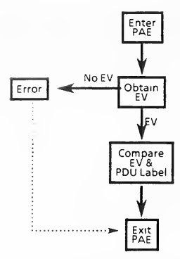
Figure 6. PAE Process
図 6. PAE プロセス
2.3 Individual Tier Descriptions
2.3 各階層の説明
This section describes the four tiers in greater detail. The four-tiered model consists of:
本節では、4 つの階層をより詳しく説明します。4 階層モデルは、次で構成されます。
•Partition
•パーティション
•Partition RBAC
•パーティション RBAC
•Local RBAC
•ローカル RBAC
•IBAC
•IBAC
"Partition RBAC" and "Local RBAC" were chosen to identify the authorities responsible for establishing the access control policy at that tier. Figure 7 shows a general decision process applicable for all layers of the ISO model (with the possible exception of Layer 1).
「パーティション RBAC」と「ローカル RBAC」という名称は、その階層でアクセス制御ポリシーを確立する責任を負う機関を識別するために選ばれました。図 7 は、ISO モデルのすべての層（第 1 層は除かれる可能性があります）に適用できる一般的な決定プロセスを示しています。
The four-tiered model is valid for ISO Layers 2, 3, 4, and 7, in addition to being appropriate in both classified and sensitive applications. An important point regarding the model is that it requires that tier one must be examined first. Subsequent tiers can be examined in any order, as appropriate for that specific SDNS component. Not all of the lower three tiers need to be considered in every SDNS application. It should be noted that if any interdependencies exist between tiers two and three, any subsequent evaluation of tier three requires that tier two also be evaluated. As in all cases where a particular tier of the four-tiered model is implemented, the PAA checks must pass for that tier's values. If the PAA checks fail, then the association is disallowed.
4 階層モデルは、機密扱いのアプリケーションと機微情報を扱うアプリケーションの両方に適していることに加え、ISO の第 2、3、4、7 層にも有効です。このモデルについて重要なのは、第 1 階層を最初に調べなければならないことです。後続の階層は、その特定の SDNS コンポーネントに適した任意の順序で調べることができます。すべての SDNS アプリケーションで、下位 3 つの階層のすべてを考慮する必要があるわけではありません。第 2 階層と第 3 階層の間に何らかの相互依存がある場合、第 3 階層を後から評価するには、第 2 階層も評価しなければならないことに留意してください。4 階層モデルの特定の階層を実装する場合はすべて、その階層の値について PAA チェックに合格しなければなりません。PAA チェックが失敗した場合、その関連付けは許可されません。
![Flowchart: "Begin Tier Info. Evaluation" → decision "Does Your Local Authority Wish to Make a Decision Based on Information Contained at This Tier?". "No" goes to decision "Are There More Tiers to Check?"; "Yes" goes to decision "Is There a Non-Null Intersection of Certificate Information at This Tier?". From that decision, "No" → "Abort Association"; "Yes" → "Place Appropriate Certificate Information in EV", which then leads up to "Are There More Tiers to Check?". From "Are There More Tiers to Check?", "Yes" → "Go to Next Tier", which loops back to the first decision; "No" → "Allow Association and Return to SP".](assets/ir-4259/p0027-drawing-01.png)
Figure 7. Generic Tier Process
図 7. 汎用階層プロセス
2.3.1 Partition
2.3.1 パーティション
While many different SDNS entities will want to intercommunicate, there are other groups of entities that do not desire and have no need to communicate. In fact, they must limit their communication to their group. The purpose of the partition level of the four-tiered model is to ensure that these groups can only communicate internal to their group. Once this separation into different partitions occurs, every SDNS entity enforces the separation and it cannot be circumvented.
多くの異なる SDNS エンティティが相互に通信したいと考える一方で、通信を望まず、通信する必要もない他のエンティティのグループがあります。実際、それらは通信を自分たちのグループ内に限定しなければなりません。4 階層モデルのパーティションレベルの目的は、これらのグループが、そのグループの内部でしか通信できないようにすることです。異なるパーティションへのこの分離がいったん行われると、すべての SDNS エンティティがその分離を実施し、それを回避することはできません。
The Partition tier separates entities into distinct groups. An accountable entity can be a member of only one partition per identity certificate. If the identity certificates do not share the same partition identifiers, then the PAA process does not allow communication. If an SDNS accountable entity needs to communicate with other partitions, a separate identity certificate is required for each partition. In special circumstances, when inter-partition communications are required, there will be a need for intermediaries holding identity certificates in multiple partitions and able to translate between those partitions' rules.
パーティション階層は、エンティティを別個のグループに分けます。責任主体は、識別証明書 1 通につき 1 つのパーティションにしか属せません。識別証明書が同じパーティション識別子を共有していない場合、PAA プロセスは通信を許可しません。SDNS の責任主体が他のパーティションと通信する必要がある場合は、パーティションごとに別個の識別証明書が必要です。パーティション間の通信が必要となる特別な状況では、複数のパーティションの識別証明書を保持し、それらのパーティションのルール間で変換できる仲介者が必要になります。
2.3.2 Partition Rule Based Access Control (PRBAC)
2.3.2 パーティションルールベースアクセス制御（PRBAC）
SDNS tier two access control is dependent upon the partition specified at tier one, and is uniquely defined for that given partition. The model recognizes, at the second tier, that the entities within a partition must have a common set of rules for the interpretation of the subsequent identification information. The rules are the expression of the access control policy. In order to enforce the common policy, there must also be a common representation of the attributes possessed by the entities in the partition.
SDNS の第 2 階層のアクセス制御は、第 1 階層で指定されたパーティションに依存し、その所与のパーティションに対して一意に定義されます。このモデルは、第 2 階層において、パーティション内のエンティティが、後続の識別情報を解釈するための共通のルール集合を持たなければならないことを認めています。ルールは、アクセス制御ポリシーの表現です。共通のポリシーを実施するには、パーティション内のエンティティが持つ属性の共通の表現も必要です。
Examples of PRBAC security policies are the mandatory security policies of the Department of Energy and the Department of Defense, both of which are lattice models. A DoD example of a possible tier two ID field structure is the following:
PRBAC のセキュリティポリシーの例には、エネルギー省と国防総省の強制セキュリティポリシーがあり、どちらもラティスモデルです。第 2 階層の ID フィールド構造の国防総省での例として考えられるものは、次のとおりです。
HIERARCHICAL:
階層型:
•Security Level
•セキュリティレベル
NON-HIERARCHICAL:
非階層型:
•Compartments
•コンパートメント
•Markings
•マーキング
In this example, entities possess clearances to process data of certain classifications among the range of Top Secret, Secret, Confidential and Unclassified. The policy applied that an entity cannot process data at a higher classification level than its clearance allows. This policy can be represented as a set of rules relating clearances and classifications.
この例では、エンティティは、Top Secret、Secret、Confidential、Unclassified の範囲にある特定の機密区分のデータを処理するためのクリアランスを保有しています。適用されるポリシーは、エンティティが、自身のクリアランスが許すより高い機密区分レベルのデータを処理できないというものです。このポリシーは、クリアランスと機密区分を関係付けるルールの集合として表現できます。
Different interpretations of the lattice model will require separate partitions. Policies that do not fit the lattice model will be accommodated. Application of tier two for the sensitive, but unclassified market is left open for further study.
ラティスモデルの解釈が異なる場合は、別個のパーティションが必要になります。ラティスモデルに当てはまらないポリシーにも対応します。機密扱いではないが慎重な取扱いを要する市場に対する第 2 階層の適用は、今後の検討に委ねられています。
2.3.3 Local Rule Based Access Control (LRBAC)
2.3.3 ローカルルールベースアクセス制御（LRBAC）
Within a partition, there may be a group of entities that must satisfy security policies other than those expressed in the PRBAC tier. The LRBAC tier information permits the application of these "local" policies within a portion of a partition. This tier provides a finer definition of access characteristics that does not exist at the second tier. Local authorities establish the policy for the use and interpretation of local RBAC information. There may be several groups within the same partition that have local policies defined. These groups are included in the same partition because entities in the groups must communicate with other entities not in the same group. The entities share PRBAC policy (but not an LRBAC policy).
パーティション内には、PRBAC 階層で表現されるもの以外のセキュリティポリシーを満たさなければならないエンティティのグループが存在する場合があります。LRBAC 階層の情報により、これらの「ローカル」ポリシーを、パーティションの一部の中で適用できます。この階層は、第 2 階層には存在しない、アクセス特性のより細かな定義を提供します。ローカル機関は、ローカル RBAC 情報の使用と解釈に関するポリシーを確立します。同じパーティション内に、ローカルポリシーが定義されたグループが複数ある場合があります。これらのグループが同じパーティションに含まれるのは、グループ内のエンティティが、同じグループに属さない他のエンティティと通信しなければならないからです。これらのエンティティは、PRBAC ポリシーを共有します（ただし LRBAC ポリシーは共有しません）。
The use of the LRBAC tier occurs when an organization needs to enforce certain rules and interpretations beyond PRBAC, when communicating within that agency without preventing communications with entities outside the agency. This definition is not appropriate at tier two, but is meaningful at tier three. In this example, the specific organization is the local authority or administration responsible for the representation of the policy at this tier. When entities not sharing the same local authority communicate, it is generally assumed that the LRBAC tier information is meaningless. (There may be cases where policy translation between local authorities is meaningful, but this concept is outside the scope of this document.) For example, consider disjoint authorities which control the access information for their own domains. When entities wish to communicate between these domains they may do so as long as there is no information constrained by LRBAC (e.g., there is no compartmented data specific to that domain). Where there are equivalent compartments in different domains, an intermediate system which understands (has identity certificates for) both domains must be used, and it must translate compartment definitions based on pairwise agreements outside SDNS.
LRBAC 階層が使われるのは、組織が、その機関内で通信するときに、機関外のエンティティとの通信を妨げることなく、PRBAC を超える特定のルールと解釈を実施する必要がある場合です。この定義は第 2 階層では適切ではありませんが、第 3 階層では意味を持ちます。この例では、特定の組織が、この階層のポリシーの表現を担うローカル機関または管理者です。同じローカル機関を共有しないエンティティどうしが通信するとき、LRBAC 階層の情報は意味を持たないと一般に想定されます。（ローカル機関間でのポリシー変換が意味を持つ場合もありえますが、この概念は本書の範囲外です。）たとえば、自らのドメインのアクセス情報を管理する、互いに素な機関を考えます。これらのドメイン間でエンティティが通信したい場合、LRBAC で制約される情報がない（たとえば、そのドメインに固有のコンパートメント化されたデータがない）限り、通信できます。異なるドメインに同等のコンパートメントがある場合は、両方のドメインを理解する（両方のドメインの識別証明書を持つ）中間システムを使用しなければならず、その中間システムは、SDNS の外部での二者間の合意に基づいてコンパートメントの定義を変換しなければなりません。
2.3.4 Identity Based Access Control (IBAC)
2.3.4 識別情報ベースアクセス制御（IBAC）
The remaining access control information is referred to as IBAC. Tier four, within SDNS access control, allows a local authority to specify identity based controls. An access control decision may be based on identity information in conjunction with the information from other tiers. However, an access control decision may be based solely on the identity of that entity. The granularity of IBAC, and of its supporting authentication functions, depends on the communication protocol layer at which an SDNS component operates. An example of information at this tier is an access control list. That is, a list that states with which other end systems are allowed to communicate. The primary certificate and auxiliary vector are the only sources of identification data for SDNS IBAC decisions.
残りのアクセス制御情報は IBAC と呼ばれます。SDNS アクセス制御の第 4 階層では、ローカル機関が識別情報ベースの制御を指定できます。アクセス制御の決定は、識別情報を他の階層の情報と組み合わせて行う場合があります。ただし、アクセス制御の決定を、そのエンティティの識別情報のみに基づいて行う場合もあります。IBAC とそれを支える認証機能の粒度は、SDNS コンポーネントが動作する通信プロトコル層によって異なります。この階層の情報の例は、アクセス制御リストです。すなわち、どの他のエンドシステムとの通信が許可されているかを示すリストです。主証明書と補助ベクトルは、SDNS の IBAC の決定のための識別データの唯一の出所です。
There are at least two additional methods available whenever more identity information than that contained within the COMPOSITE ID is required. The first approach requires communicating with a third party in real-time by one or both of the parties in the communication. The second approach negotiates the additional IBAC information between the parties of the association.
COMPOSITE ID に含まれる以上の識別情報が必要な場合に利用できる方法は、少なくとも 2 つあります。1 つ目の方法は、通信の当事者の一方または両方が、リアルタイムで第三者と通信することを必要とします。2 つ目の方法は、追加の IBAC 情報を、関連付けの当事者間でネゴシエーションします。
The identity certificate used by a Layer 3/4 SDNS component represents an end system entity. If the end system's identity is represented in the certificate via a network address (physical or logical, as used in a given network), or if the SDNS component can map between addresses and COMPOSITE ID representations with high assurance, an SDNS component directly connected to a single end system can verify consistency between emitted source addresses and the COMPOSITE ID representation. If the COMPOSITE ID representation of the identity information is not in the form of addresses, or if multiple distinct entities (e.g., "red networks") are located behind SDNS components, the level of consistency checking which an SDNS component can perform on emitted source addresses is limited or nonexistent.
第 3/4 層の SDNS コンポーネントが使用する識別証明書は、エンドシステムのエンティティを表します。エンドシステムの識別情報が証明書の中でネットワークアドレス（所与のネットワークで使われる物理アドレスまたは論理アドレス）によって表されている場合、または SDNS コンポーネントがアドレスと COMPOSITE ID の表現の間を高い保証で対応付けられる場合、単一のエンドシステムに直接接続された SDNS コンポーネントは、送出される送信元アドレスと COMPOSITE ID の表現との整合性を検証できます。識別情報の COMPOSITE ID による表現がアドレスの形式ではない場合、または複数の別個のエンティティ（たとえば「レッドネットワーク」）が SDNS コンポーネントの背後にある場合、SDNS コンポーネントが送出される送信元アドレスに対して実行できる整合性チェックの水準は、限られるか、存在しません。
2.4 Enforcement Vector
2.4 実施ベクトル
Within the SDNS access control framework the PAE process enforces the results determined by the PAA procedure. The PAA process results are represented by the Enforcement Vector, and held for the length of each association. The information within an EV can be separated into three categories. These categories are:
SDNS のアクセス制御の枠組みの中で、PAE プロセスは、PAA の手順によって決定された結果を実施します。PAA プロセスの結果は実施ベクトルによって表され、各関連付けの存続期間中保持されます。EV 内の情報は、3 つのカテゴリに分けられます。これらのカテゴリは、次のとおりです。
•PDU identifier components; identifies which existing EV is relevant for a specific association;
•PDU 識別子コンポーネント: 特定の関連付けについて、既存のどの EV が関係するかを識別します。
•PDU filter components: specifies the criteria against which a PDU is checked so that a pass/no pass decision may be made (i.e., results of PAA);
•PDU フィルターコンポーネント: PDU をチェックする基準を規定し、通過/不通過の決定を行えるようにします（すなわち、PAA の結果）。
•Miscellaneous components: administrative information about the association.
•その他のコンポーネント: 関連付けに関する管理情報。
The EV, at each peer, contains the following information for the association, depending upon the tiers used:
各ピアの EV は、使用される階層に応じて、その関連付けについて次の情報を含みます。
•Partition RBAC Information
•パーティション RBAC 情報
•Local RBAC Information
•ローカル RBAC 情報
•IBAC information
•IBAC 情報
2.5 PDU Security Label Description
2.5 PDU セキュリティラベルの説明
Each PDU presented for transmission may contain a security label. (Labels are a negotiable option and are not required in all cases.) Each PDU's security label is compared with the EV which allows the PAE process to enforce the established security policy on the PDU. For those end systems that do not provide a security label, the SDNS component will supply a predefined security label for PDUs sent from that end system. The PDU's security label does not have to match the entire EV exactly, but it must be a proper subset of the accountable entities’ permissions.
送信のために提示される各 PDU は、セキュリティラベルを含む場合があります。（ラベルはネゴシエーション可能なオプションであり、すべての場合に必要なわけではありません。）各 PDU のセキュリティラベルは EV と比較され、これにより PAE プロセスは、確立されたセキュリティポリシーをその PDU に実施できます。セキュリティラベルを提供しないエンドシステムについては、SDNS コンポーネントが、そのエンドシステムから送られる PDU に対して、あらかじめ定義されたセキュリティラベルを付与します。PDU のセキュリティラベルは、EV 全体と完全に一致する必要はありませんが、責任主体に付与された許可の真部分集合でなければなりません。
3. OSI LAYER SPECIFIC ACCESS CONTROL FACTORS
3. OSI 層に固有のアクセス制御の要因
Whereas the previous sections have presented the general access control structure for the SDNS, this section will examine some of the access control characteristics that are OSI layer specific. This is not an exhaustive presentation but illustrative of applying access control at the various layers of the OSI model supported by SDNS.
これまでの節では SDNS の一般的なアクセス制御の構造を示しましたが、本節では、OSI の層に固有のアクセス制御の特性のいくつかを検討します。これは網羅的な提示ではなく、SDNS がサポートする OSI モデルのさまざまな層にアクセス制御を適用する際の例示です。
3.1 Layer 2
3.1 第 2 層
The data link layer transforms the raw transmission facilities provided by the physical layer into an apparent error free communications circuit to the layers above it. Layer 2 functions include the grouping and/or the adding of physical-layer bits into the Physical-layer Service Data Unit (PSDU) permitting the detection, correction, retransmission, and flow control functions of Layer 2 to be implemented. In addition, several different classes or qualities of service options, resulting in different performance and cost parameters, are available at the data link layer.
データリンク層は、物理層が提供する生の伝送設備を、上位層に対して見かけ上誤りのない通信回線に変換します。第 2 層の機能には、物理層のビットをグループ化すること、および／またはそれらのビットを物理層サービスデータユニット（PSDU）に追加することが含まれ、これにより第 2 層の検出、訂正、再送、フロー制御の機能を実装できます。加えて、データリンク層では、性能とコストのパラメーターが異なる、サービスのクラスまたは品質に関するいくつかの異なるオプションを利用できます。
At Layer 2, the SDNS provides access control and authentication to the entities represented by the PSDU. A Layer 2 the SDNS component provides these services to data communications equipment using the identity definitions normally associated with the PSDU. The data link layer is highly dependent upon the media or actual physical-layer structure. Each unique physical layer structure requires different PSDU coding techniques and frame definitions. Therefore, there are various implementations of the SDNS layer 2 component for each of the media supported.
第 2 層では、SDNS は、PSDU によって表されるエンティティに対してアクセス制御と認証を提供します。第 2 層の SDNS コンポーネントは、通常 PSDU に関連付けられる識別情報の定義を用いて、データ通信装置にこれらのサービスを提供します。データリンク層は、媒体または実際の物理層の構造に強く依存します。固有の物理層の構造ごとに、異なる PSDU の符号化技法とフレーム定義が必要です。したがって、サポートされる媒体ごとに、SDNS の第 2 層コンポーネントにはさまざまな実装があります。
3.1.1 Tiers Applicable to Layer 2
3.1.1 第 2 層に適用される階層
•Partition Tier (Tier 1) - This tier is always defined.
•パーティション階層（第 1 階層）- この階層は常に定義されます。
•PRBAC Tier (Tier 2) - Defines the security level of the association.
•PRBAC 階層（第 2 階層）- 関連付けのセキュリティレベルを定義します。
•LRBAC Tier (Tier 3) - Some broadcast-type media Layer 2 implementations may use this tier.
•LRBAC 階層（第 3 階層）- ブロードキャスト型媒体の第 2 層の実装の一部は、この階層を使用する場合があります。
•IBAC Tier (Tier 4) - The identity of a Layer 2 SDNS accountable entity is as a peer on a virtual link.
•IBAC 階層（第 4 階層）- 第 2 層の SDNS 責任主体の識別情報は、仮想リンク上のピアとしてのものです。
3.1.2 Layer 2 PAE
3.1.2 第 2 層の PAE
An implicit security label (resulting when a permitted connection implies a specific label) will generally be used on link applications because an a priori-determined security level will exist. In applications requiring an explicit label, the SDNS component will provide an appropriate label. The PAE process will basically monitor IBAC information at this layer. The EV is used to show that the link is legitimate and because of the single level assumption that all data may pass.
リンクのアプリケーションでは、あらかじめ決まったセキュリティレベルが存在するため、一般に暗黙のセキュリティラベル（許可された接続が特定のラベルを暗に意味することで生じるもの）が使われます。明示的なラベルを必要とするアプリケーションでは、SDNS コンポーネントが適切なラベルを提供します。PAE プロセスは、この層では基本的に IBAC 情報を監視します。EV は、リンクが正当であることを示すために使用され、単一レベルの前提により、すべてのデータが通過できます。
3.2 Layers 3/4
3.2 第 3/4 層
At the network-layer, end systems and intermediate systems are the peers between which SDNS access control services are applied. The accountable entities distinguished with regard to differing access rights are systems (either end system or intermediate system), not processes or individual users within those systems. At the transport-layer, the appropriate granularity for access control services depends on where within the transport layer security mechanisms are integrated. For security mechanisms integrated towards the bottom of the transport-layer, the appropriate access control granularity for such services is at the end system. Layer 4 may either apply access control on end system pairs or on transport connections. Subsequent subsections identify the tiers, labeling, and other attributes that are used by the PAA and PAE processes at Layers 3/4.
ネットワーク層では、エンドシステムと中間システムが、SDNS のアクセス制御サービスが適用されるピアです。アクセス権の違いに関して区別される責任主体は、システム（エンドシステムまたは中間システム）であり、それらのシステム内のプロセスや個々のユーザーではありません。トランスポート層では、アクセス制御サービスに適した粒度は、トランスポート層内のどこにセキュリティメカニズムが統合されるかによって異なります。トランスポート層の下位寄りに統合されるセキュリティメカニズムでは、そのようなサービスに適したアクセス制御の粒度はエンドシステムです。第 4 層は、エンドシステムの対に対して、またはトランスポート接続に対して、アクセス制御を適用できます。後続の小節では、第 3/4 層の PAA プロセスと PAE プロセスが使用する階層、ラベル付け、その他の属性を示します。
3.2.1 Tiers Applicable to Layers 3/4
3.2.1 第 3/4 層に適用される階層
•Partition Tier (Tier 1) - This tier is always defined.
•パーティション階層（第 1 階層）- この階層は常に定義されます。
•PRBAC Tier (Tier 2) - Applicable in most classified implementations.
•PRBAC 階層（第 2 階層）- ほとんどの機密扱いの実装に適用できます。
•LRBAC Tier (Tier 3) - Optional in all applications. Its use will most likely require the use of the auxiliary vector technique or other such alternatives to acquire all the necessary access control information.
•LRBAC 階層（第 3 階層）- すべてのアプリケーションで任意です。使用するには、必要なアクセス制御情報をすべて取得するために、補助ベクトル技法またはそれに類する他の代替手段の使用が必要になる可能性が高いです。
•IBAC Tier (Tier 4) - As in tier 3 (LRBAC), extensions to the basic authentication process may be required to acquire all the necessary access control information.
•IBAC 階層（第 4 階層）- 第 3 階層（LRBAC）と同様に、必要なアクセス制御情報をすべて取得するために、基本的な認証プロセスの拡張が必要になる場合があります。
At tier 3, LRBAC, the accountable entities’ ID may also include the environmental, the accreditation, and the certification information of the end system.
第 3 階層（LRBAC）では、責任主体の ID に、エンドシステムの環境、認定、認証に関する情報も含められる場合があります。
3.2.2 Layer 3/4 PAE
3.2.2 第 3/4 層の PAE
Both implicit and explicit security labels will be available at Layers 3/4. PAE will enforce the security policies established for each Layer 3/4 SDNS component. These policies are realizable in the sense that they can, on a tier-wise basis, uniformly operate on the identity fields within the COMPOSITE ID in order to establish an EV for the association. Each security label will be evaluated against the established EV for the association.
第 3/4 層では、暗黙と明示の両方のセキュリティラベルを利用できます。PAE は、各第 3/4 層の SDNS コンポーネントに確立されたセキュリティポリシーを実施します。これらのポリシーは、階層ごとに、COMPOSITE ID 内の識別フィールドに一様に作用して、その関連付けの EV を確立できるという意味で、実現可能です。各セキュリティラベルは、その関連付けに確立された EV に照らして評価されます。
3.3 Layer 7 E-Mail
3.3 第 7 層の電子メール
The access control issues and mechanisms discussed in this section relate to electronic mail and are not necessarily applicable to the protection of other application-layer services (e.g., File Transfer Access Management (FTAM)). Subsequent consideration of other application-layer services may result in a definition of different access control services and mechanisms, consistent with those services' different characteristics. In particular, the store-and-forward delivery characteristic introduces a number of special issues which do not apply to an environment in which peer entities communicate directly in real time.
本節で論じるアクセス制御の問題とメカニズムは、電子メールに関するものであり、他のアプリケーション層サービス（たとえばファイル転送アクセス管理（FTAM））の保護には、必ずしも適用できません。他のアプリケーション層サービスについて後で検討すれば、それらのサービスの異なる特性に見合った、異なるアクセス制御サービスとメカニズムが定義される可能性があります。特に、蓄積交換型の配送という特性は、ピアエンティティがリアルタイムで直接通信する環境には当てはまらない、多くの特有の問題をもたらします。
Users are "trusted" to process and correctly segregate information at any level up to and including their highest clearance. This does not necessarily imply that the same level of trust is appropriate for the end system on which a user processes data. The absence of interconnect rules between human users does not imply that no rule based mechanisms are appropriate. While it is legitimate for a TS-cleared user to send a message to a SECRET-cleared user, such a message should not contain any information designated with classification higher than SECRET. A sending SDNS UA can collect clearance information from certificates of a message's designated recipient, compute the intersection with the sender's privileges, and display that information to a sending user. (Note, however, that this function requires that recipients' certificates be cached or collected in real time, precluding implementations which let users request that transmission be performed as a "background" activity.) Further, the UA can verify the relation between the level provided in the certificate and the level at which the UA process is executing. For example, a single-level UA running at the TS level should not transmit mail to a recipient whose certificate indicates SECRET or lower clearance, although a multilevel UA spanning the TS and SECRET levels could transmit SECRET mail to such a recipient. SDNS E-Mail components will check the security label fields carried in messages against the clearances of the intended recipient as indicated in their certificates.
ユーザーは、自分の最高のクリアランスまでのいずれのレベルの情報も、処理し、正しく分離することが「信頼」されています。これは、ユーザーがデータを処理するエンドシステムにも同じレベルの信頼が適切であることを必ずしも意味しません。人間のユーザー間に相互接続ルールがないからといって、ルールベースのメカニズムが適切でないことを意味するわけではありません。TS のクリアランスを持つユーザーが SECRET のクリアランスを持つユーザーにメッセージを送ることは正当ですが、そのようなメッセージには、SECRET より高い機密区分が指定された情報を含めるべきではありません。送信側の SDNS UA は、メッセージの指定された受信者の証明書からクリアランス情報を収集し、送信者の権限との共通部分を計算して、その情報を送信ユーザーに表示できます。（ただし、この機能には、受信者の証明書がキャッシュされているか、リアルタイムで収集される必要があり、ユーザーが送信を「バックグラウンド」の活動として実行するよう要求できる実装は排除されることに注意してください。）さらに UA は、証明書で提供されるレベルと、UA プロセスが実行されているレベルとの関係を検証できます。たとえば、TS レベルで動作する単一レベルの UA は、証明書が SECRET 以下のクリアランスを示す受信者にメールを送信すべきではありませんが、TS と SECRET のレベルにまたがる多レベルの UA は、そのような受信者に SECRET のメールを送信できます。SDNS の電子メールコンポーネントは、メッセージに含まれるセキュリティラベルフィールドを、証明書に示された意図する受信者のクリアランスに照らしてチェックします。
It is functionally desirable to keep end system interconnect rules and user IDs totally separate, allowing user mobility by disassociating a user's identity from any particular end system with which they may be associated. On the other hand, preservation of end system risk indices may necessitate that the classification level(s) of information passed in E-Mail be constrained based on end system accreditation. It seems inappropriate to mandate that any such constraints be enforced by SDNS components operating independently below the application layer for two reasons: (1) this could unnecessarily constrain or preclude the use of SDNS E-Mail without an associated lower-layer SDNS; and (2) given store-and-forward delivery, no layers below E-Mail possess the end-to-end, communicating, peer-to-peer characteristics which are necessary for SDNS components to guarantee enforcement without relying on processing performed within non-SDNS intermediate entities (e.g., mail staging systems).
機能上、エンドシステムの相互接続ルールとユーザー ID を完全に分離し、ユーザーの識別情報を、関連付けられている可能性のある特定のエンドシステムから切り離すことで、ユーザーの移動性を可能にすべきです。一方で、エンドシステムのリスク指標を維持するには、電子メールで受け渡される情報の機密区分レベルを、エンドシステムの認定に基づいて制約する必要が生じる場合があります。そのような制約を、アプリケーション層より下で独立して動作する SDNS コンポーネントに実施させることを義務付けるのは、次の 2 つの理由から不適切と考えられます。(1) 関連する下位層の SDNS を伴わない SDNS 電子メールの使用を、不必要に制約または排除しうること。(2) 蓄積交換型の配送を前提とすると、電子メールより下のどの層も、SDNS コンポーネントが、SDNS ではない中間エンティティ（たとえばメールステージングシステム）内で行われる処理に頼らずに実施を保証するために必要な、エンドツーエンドで通信するピアツーピアの特性を持たないこと。
User-level COMPOSITE IDs will contain one of two separate classes of clearance/accreditation information: a first class (USER DATA) specifying the user's clearance information, and a second class (END SYSTEM DATA) reflecting those end system characteristics (e.g., authorized sensitivity levels and other inputs to risk index computations) which are needed in order to constrain dataflows appropriately. If the user moves to an alternate end system, the alternate end system's END SYSTEM DATA, rather than the home end system's END SYSTEM DATA, would become relevant. This implies that the process performed in order to activate a user's ID at an alternate end system must, in effect, associate USER DATA information with the applicable end system's END SYSTEM DATA.
ユーザーレベルの COMPOSITE ID には、2 つの別々の種類のクリアランス/認定情報のいずれかが含まれます。1 つ目の種類（USER DATA）はユーザーのクリアランス情報を指定し、2 つ目の種類（END SYSTEM DATA）は、データフローを適切に制約するために必要な、エンドシステムの特性（たとえば、許可された機微度レベルや、リスク指標の計算へのその他の入力）を反映します。ユーザーが別のエンドシステムに移動した場合、関連するのは、ホームのエンドシステムの END SYSTEM DATA ではなく、別のエンドシステムの END SYSTEM DATA になります。これは、別のエンドシステムでユーザーの ID を有効化するために行われるプロセスが、事実上、USER DATA 情報を、該当するエンドシステムの END SYSTEM DATA に関連付けなければならないことを意味します。
3.3.1 Tiers Applicable to Layer 7 E-Mail
3.3.1 第 7 層の電子メールに適用される階層
•Partition Tier (Tier 1) - This tier is always defined.
•パーティション階層（第 1 階層）- この階層は常に定義されます。
•PRBAC Tier (Tier 2) - Applicable in most classified implementations.
•PRBAC 階層（第 2 階層）- ほとんどの機密扱いの実装に適用できます。
•LRBAC Tier (Tier 3) - Optional in all applications. Extensions to the basic authentication process may be required to acquire all the necessary access control information.
•LRBAC 階層（第 3 階層）- すべてのアプリケーションで任意です。必要なアクセス制御情報をすべて取得するために、基本的な認証プロセスの拡張が必要になる場合があります。
•IBAC Tier (Tier 4) - Required in all applications. Its use will most likely require the use of the auxiliary vector technique or other such alternatives to acquire all the necessary access control information.
•IBAC 階層（第 4 階層）- すべてのアプリケーションで必須です。使用するには、必要なアクセス制御情報をすべて取得するために、補助ベクトル技法またはそれに類する他の代替手段の使用が必要になる可能性が高いです。
3.3.2 Layer 7 IDs
3.3.2 第 7 層の ID
Layer 7 IDs represent individual users (or their application agents). The first use of individual IDs will be for E-Mail. E-Mail IBAC determinations will be based on a process involving X.400 Originator/Recipient (O/R) Names and certificate ID fields identifying users. DoD Trusted Computer System Evaluation criteria (Orange Book) requirements for individual accountability (imposed at C2 levels and above) underscore the need for user identification at the granularity of named users or groups of named users.
第 7 層の ID は、個々のユーザー（またはそのアプリケーションエージェント）を表します。個々の ID が最初に使われるのは電子メールです。電子メールの IBAC の判定は、X.400 の発信者/受信者（O/R）名と、ユーザーを識別する証明書の ID フィールドとを用いるプロセスに基づきます。個人の責任追跡に関する DoD の Trusted Computer System Evaluation criteria（Orange Book）の要件（C2 レベル以上で課される）は、名前の付いたユーザーまたは名前の付いたユーザーのグループという粒度でのユーザー識別の必要性を裏付けています。
As O/R Names (and identity certificate ID field components) are hierarchically qualified, it seems useful to provide analogous hierarchic qualification for IBAC features. For example, it could be appropriate to grant a particular user the right to send mail to anyone in organization A (without needing to exhaustively enumerate all members of organization A), as well as to user C (and user C alone) within organization B.
O/R 名（および識別証明書の ID フィールドの構成要素）は階層的に修飾されるため、IBAC の機能にも同様の階層的な修飾を提供することが有用と考えられます。たとえば、特定のユーザーに、組織 A の誰にでも（組織 A のすべての構成員を網羅的に列挙する必要なく）メールを送る権利を付与し、加えて、組織 B 内のユーザー C にも（ユーザー C のみに）メールを送る権利を付与することが適切な場合があります。
It is appropriate to consider the means by which peers are identified within SDNS (and specifically within CCITT's X.400 mail), as IBAC information fields in message headings must be associated with COMPOSITE ID fields. X.420 notes that peers may be identified in two ways: with an O/R name (a construct formally defined in X.411) or with a free-form name; for universal applicability in SDNS, use of the O/R Name is assumed. Three variant forms of O/R Name are defined, but the latter two are intended for special purposes (support for X.121 addressing or Telex interoperability), and the first variant is clearly the appropriate choice for consideration by SDNS. The first variant O/R Name form is defined as follows, where square brackets enclose those attributes which are optional:
メッセージヘッダー内の IBAC 情報フィールドは COMPOSITE ID のフィールドに関連付けられなければならないため、SDNS（とりわけ CCITT の X.400 メール）の中でピアを識別する手段を検討することは適切です。X.420 は、ピアが 2 つの方法で識別できることを述べています。O/R 名（X.411 で正式に定義された構成要素）によるものと、自由形式の名前によるものです。SDNS での普遍的な適用性のため、O/R 名の使用を想定します。O/R 名には 3 つの変形形式が定義されていますが、後の 2 つは特別な目的（X.121 アドレッシングのサポートまたは Telex との相互運用性）のためのものであり、SDNS が検討する選択肢として明らかに適切なのは最初の変形です。最初の変形の O/R 名の形式は次のように定義されます。ここで、角括弧は任意の属性を囲みます。
O/R Name ::= Country Name
Administration Domain Name
[Private Domain Name]
[Personal Name]
[Organization Name]
[Organizational Unit Names]
[Domain-defined attributes]
O/R Name ::= Country Name
Administration Domain Name
[Private Domain Name]
[Personal Name]
[Organization Name]
[Organizational Unit Names]
[Domain-defined attributes]
The use of Administration Domain Name and where appropriate, Private Domain Name facilitates interoperability in advance of a directory service function spanning all domains. Administration domains are hierarchically qualified within countries, and private domains are hierarchically qualified within administration domains.
Administration Domain Name と、適切な場合には Private Domain Name を使用することで、すべてのドメインにまたがるディレクトリサービス機能が整う前の相互運用性が容易になります。管理ドメインは国の中で階層的に修飾され、プライベートドメインは管理ドメインの中で階層的に修飾されます。
One or more of Private Domain Name, Personal Name, Organization Name, and Organizational Unit Names must be selected. Use of domain-defined attributes is optional. In assignment of O/R Names to its own peers, a domain is free to select a set of attributes which best serve its own purposes, potentially by using domain-defined attributes instead of standard attributes, although use of standard attributes is preferred for interoperability reasons. For universal interoperability among Layer 7 SDNS peers in advance of servers which can translate between different forms, it is appropriate to constrain the set of acceptable O/R Name component combinations.
Private Domain Name、Personal Name、Organization Name、Organizational Unit Names のうち 1 つ以上を選択しなければなりません。domain-defined attributes の使用は任意です。各ドメインは、自らのピアに O/R 名を割り当てる際、標準属性の代わりに domain-defined attributes を使用することも含め、自らの目的に最も適した属性の集合を自由に選択できますが、相互運用性の理由から標準属性の使用が好まれます。異なる形式の間で変換できるサーバーが整う前に、第 7 層の SDNS ピア間で普遍的な相互運用性を確保するには、許容される O/R 名構成要素の組合せの集合を制約することが適切です。
The O/R Name subcomponents have CCITT-supplied syntactic definitions (in Recommendation X.411). For example, a Personal Name is defined as one or more printable strings, made up of a surname along with (optional) given name initials, and generation qualifier (e.g., "Jr.").
O/R 名の下位構成要素には、CCITT が与えた構文上の定義があります（勧告 X.411）。たとえば Personal Name は、姓と、（任意の）名のイニシャル、世代修飾子（たとえば「Jr.」）からなる、1 つ以上の印字可能文字列として定義されています。
For SDNS purposes, it is proposed that a peer's ID as represented in a COMPOSITE ID contain the following O/R Name components: Country Name, Administration Domain Name, Organization Name, Organizational Unit Names (this component may be null if Organizational Unit Names are not used within the particular Organization), and Personal Name. Note that this identifies a peer in terms of organizational affiliation, not mailbox address, and hence does not preclude user mobility.
SDNS の目的では、COMPOSITE ID で表されるピアの ID に、次の O/R 名の構成要素を含めることが提案されています。Country Name、Administration Domain Name、Organization Name、Organizational Unit Names（この構成要素は、その特定の組織内で Organizational Unit Names が使われない場合はヌルでもよいです）、Personal Name です。これは、メールボックスアドレスではなく組織上の所属によってピアを識別するものであり、したがってユーザーの移動性を妨げないことに注意してください。
3.3.3 Layer 7 E-Mail PAE
3.3.3 第 7 層の電子メールの PAE
Both explicit and implicit security labels will be available for Layer 7 E-Mail on an as-required basis. The security policies and characteristics have parallels with Layers 3/4 as discussed in Section 3.2.2 above.
第 7 層の電子メールでは、明示的および暗黙的なセキュリティラベルを必要に応じて利用できます。そのセキュリティポリシーと特性には、上記の第 3.2.2 節で論じた第 3/4 層との類似点があります。
4. DEFINITIONS
4. 定義
ACCESS CONTROL - The prevention of the unauthorized use of a resource, including the prevention of use of a resource in an unauthorized manner.(ISO 7498/2)
ACCESS CONTROL - 資源の無許可の使用の防止。資源を無許可の方法で使用することの防止を含みます。（ISO 7498/2）
ACCOUNTABLE ENTITY - The logical element, unit, or user representation, within a system, which can be positively identified and authenticated using the access control attributes contained within a primary certificate and (when used) an Auxiliary Vector.(SDNS)
ACCOUNTABLE ENTITY - システム内の論理要素、単位、またはユーザーの表現であって、主証明書および（使用する場合は）補助ベクトルに含まれるアクセス制御属性を用いて、確実に識別し認証できるもの。（SDNS）
ASSOCIATION - A communications interaction between peer entities, which may occur over either connection-oriented or connectionless communication services.(SDNS)
ASSOCIATION - ピアエンティティ間の通信上のやり取り。コネクション型とコネクションレス型のどちらの通信サービス上でも発生しえます。（SDNS）
AUDIT - An independent review and examination of system records and activities in order to test for adequacy of system controls, to ensure compliance with established policy and operational procedures, and to recommend any indicated changes in control, policy and procedures.(ISO 7498/2)
AUDIT - システムの制御の妥当性を検証し、確立されたポリシーと運用手順への準拠を確保し、示された制御、ポリシー、手順の変更を勧告するために行う、システムの記録と活動の独立したレビューと調査。（ISO 7498/2）
AUTHENTICATION - The process of positively validating a claimed identity. Each authentication process has a corresponding degree of certainty as to the accuracy of the identity established. Both the authenticated identity and the degree of certainty are used by an access control process to select the correct subset of rights and privileges associated with that entity.(SDNS)
AUTHENTICATION - 主張された識別情報を確実に検証するプロセス。各認証プロセスには、確立された識別情報の正確さに関する対応する確実性の度合いがあります。認証された識別情報と確実性の度合いは、そのエンティティに関連付けられた権利と特権の正しい部分集合を選択するために、アクセス制御プロセスによって使用されます。（SDNS）
AUTHORIZATION - The granting of rights or the subsequent possession of rights.(ISO 7498/2)
AUTHORIZATION - 権利の付与、またはその後の権利の保有。（ISO 7498/2）
AUXILIARY VECTOR (AV) - A holder for additional ID information which does not normally fit within the identity certificate or is optionally excluded from the identity certificate. The Auxiliary Vector is bound to the identity certificate.(SDNS)
AUXILIARY VECTOR (AV) - 通常は識別証明書に収まらない、または識別証明書から任意に除外される追加の ID 情報の保持体。補助ベクトルは識別証明書に結び付けられます。（SDNS）
COMPOSITE ID - The assemblage of information contained in the identity certificate and the auxiliary vector.(SDNS)
COMPOSITE ID - 識別証明書と補助ベクトルに含まれる情報の集合。（SDNS）
DATA ORIGIN AUTHENTICATION - The corroboration that the source of the data received is as claimed.(ISO 7498/2)
DATA ORIGIN AUTHENTICATION - 受信したデータの出所が主張どおりであることの確証。（ISO 7498/2）
END SYSTEM - Any computer-based system connected to the network and containing the necessary protocol interpreter software to initiate network access and carry out information exchange across the communications network.(Trusted Network Interpretation)
END SYSTEM - ネットワークに接続され、ネットワークアクセスを開始し、通信ネットワークを介した情報交換を実行するために必要なプロトコルインタープリタソフトウェアを含む、あらゆるコンピューターベースのシステム。（Trusted Network Interpretation）
ENFORCEMENT VECTOR (EV) - The resulting information from a successfully completed PAA process which denotes the evaluation of the two communicating entities’ security policies. This vector is an inter-component binding of security attributes of the requested communications association. Creation of an Enforcement Vector implies that peer communications is permissable under the limitations that are represented in the Enforcement Vector.(SDNS)
ENFORCEMENT VECTOR (EV) - 正常に完了した PAA プロセスによって得られる情報であり、通信する 2 つのエンティティのセキュリティポリシーの評価を表します。このベクトルは、要求された通信アソシエーションのセキュリティ属性をコンポーネント間で結び付けたものです。Enforcement Vector の作成は、そのベクトルに表される制限の範囲内でピア間通信が許容されることを意味します。（SDNS）
ENTITY - The logical element, unit, or user representation, within a system, on behalf of which an SDNS component provides security services.(SDNS)
ENTITY - システム内の論理要素、単位、またはユーザーの表現であって、SDNS コンポーネントがその代わりにセキュリティサービスを提供するもの。（SDNS）
EXPLICIT SECURITY LABEL - A precisely defined set of security attributes, explicitly and incorruptibly appended or prepended to a PDU, which qualify its sensitivity, specify handling and distribution caveats, and end-system specific requirements. The PDU explicit security label is used as an aid in carrying out a security policy. (SDNS)
EXPLICIT SECURITY LABEL - PDU の前または後に明示的かつ改ざん不能な形で付加される、厳密に定義されたセキュリティ属性の集合で、その機微度を修飾し、取扱いと配布の注意事項、およびエンドシステム固有の要件を指定するもの。PDU の明示的セキュリティラベルは、セキュリティポリシーの遂行を補助するために使用されます。（SDNS）
FOUR TIERED MODEL - A logical representation describing an entity’s security policies and identity. Both rule and identity based access control policies are capable of being described.(SDNS)
FOUR TIERED MODEL - エンティティのセキュリティポリシーと識別情報を記述する論理的な表現。ルールベースと識別情報ベースの両方のアクセス制御ポリシーを記述できます。（SDNS）
IDENTITY-BASED SECURITY POLICY - A security policy based on the identities and/or attributes of users, a group of users, or entities acting on the behalf of the users and the resources/objects being accessed.(ISO 7498/2)
IDENTITY-BASED SECURITY POLICY - ユーザー、ユーザーのグループ、またはユーザーに代わって行動するエンティティ、およびアクセスされる資源/オブジェクトの識別情報や属性に基づくセキュリティポリシー。（ISO 7498/2）
IDENTITY CERTIFICATE - It is the data element that contains the identification data, along with other information, which is exchanged with an originator/recipient pair to provide both access control and authentication information.(SDNS)
IDENTITY CERTIFICATE - 識別データをその他の情報とともに含み、アクセス制御情報と認証情報の両方を提供するために、発信者/受信者の対の間で交換されるデータ要素。（SDNS）
IDENTITY DATA - The portion of the identity certificate which describes the end entity in the context of the four tiered model. The strawman definition of this information includes such things as NAME, DAO code, SECURITY LEVEL, and other tier relevant information.(SDNS)
IDENTITY DATA - 識別証明書のうち、4 階層モデルの文脈で末端のエンティティを記述する部分。この情報の試案的な定義には、NAME、DAO コード、SECURITY LEVEL、その他の階層に関連する情報などが含まれます。（SDNS）
IMPLICIT SECURITY LABEL - A precisely defined set of security attributes for a PDU which qualify its sensitivity, specific handling and distribution caveats, and end-system requirements. The set of security attributes are held by each security service entity processing the PDUs and these security attributes are referenced through an association with the PDU. The PDU’s implicit security label is used as an aid in carrying out a security policy.(SDNS)
IMPLICIT SECURITY LABEL - PDU に対する、厳密に定義されたセキュリティ属性の集合で、その機微度、特定の取扱いと配布の注意事項、およびエンドシステムの要件を修飾するもの。このセキュリティ属性の集合は、PDU を処理する各セキュリティサービスエンティティが保持し、PDU との関連付けを通じて参照されます。PDU の暗黙的セキュリティラベルは、セキュリティポリシーの遂行を補助するために使用されます。（SDNS）
INTERMEDIATE SYSTEMS - System which converts packets from one protocol to another.(Computer Networks)
INTERMEDIATE SYSTEMS - パケットをあるプロトコルから別のプロトコルに変換するシステム。（Computer Networks）
INTERNAL HOST - An addressable entity which resides in the SDNS component and is used for such things as SDNS system management functions.(SDNS)
INTERNAL HOST - SDNS コンポーネント内に存在し、SDNS のシステム管理機能などに使用される、アドレス指定可能なエンティティ。（SDNS）
LOCAL DOMAIN AUTHORITY IDENTIFIER - The identity of the controlling authority for a local SDNS administrative community, responsible for access control information. (SDNS)
LOCAL DOMAIN AUTHORITY IDENTIFIER - ローカルな SDNS 管理コミュニティを管理する機関で、アクセス制御情報に責任を負うものの識別情報。（SDNS）
PAA - Peer Access Approval. The process which yields an Enforcement Vector by interpreting the ID information of the two communicating peer end points.(SDNS)
PAA - ピアアクセス承認（Peer Access Approval）。通信する 2 つのピアエンドポイントの ID 情報を解釈して、実施ベクトルを生成するプロセス。（SDNS）
PARTITION IDENTIFIER - A single entity (possibly a number) which at the highest level divides the entire user population into discrete segments each sharing a common high level security policy.(SDNS)
PARTITION IDENTIFIER - 最上位レベルで、ユーザー母集団全体を、共通の上位セキュリティポリシーを共有する個別の区分に分ける単一のエンティティ（数値の場合もあります）。（SDNS）
PAE - Peer Access Enforcement. The application of the Enforcement Vector on a per PDU basis, which determines whether or not a particular PDU can be sent or received by an end system.(SDNS)
PAE - ピアアクセス実施（Peer Access Enforcement）。PDU ごとに実施ベクトルを適用し、特定の PDU をエンドシステムが送信または受信できるかどうかを判定すること。（SDNS）
PEER ENTITY AUTHENTICATION - The corroboration that a peer entity in an association is the one claimed.(ISO 7498/2)
PEER ENTITY AUTHENTICATION - 関連付けにおけるピアエンティティが、主張されたものであることの確証。（ISO 7498/2）
RULE BASED SECURITY POLICY - A security policy based on a set of rules interpreted in a common fashion across a set of interoperating SDNS components. These rules usually rely on a comparison of the sensitivity levels of the resources being accessed and the possession of corresponding attributes of accountable entities acting on behalf of users.(SDNS)
RULE BASED SECURITY POLICY - 相互動作する SDNS コンポーネントの集合にわたって共通の方法で解釈される、ルールの集合に基づくセキュリティポリシー。これらのルールは通常、アクセスされる資源の機微度レベルと、ユーザーに代わって行動する責任主体が持つ対応する属性の保有との比較に依拠します。（SDNS）
SDNS COMPONENT - A name which identifies the abstract representation of any SDNS security product capable of providing one or more SDNS security services.
SDNS COMPONENT - 1 つ以上の SDNS セキュリティサービスを提供できる、あらゆる SDNS セキュリティ製品の抽象的な表現を識別する名称。
5.0 ABBREVIATIONS
5.0 略語
| AV | Auxiliary Vector |
| EV | Enforcement Vector |
| FTAM | File Transfer Access Management |
| IBAC | Identity Based Access Control |
| LRBAC | Local Rule Based Access Control |
| MLS | Multilevel Secure |
| NAK | Negative Acknowledgment |
| PAA | Peer Access Approval |
| PAE | Peer Access Enforcement |
| PDU | Protocol Data Unit |
| PSDU | Physical Layer Service Data Unit |
| PRBAC | Partition Rule Based Access Control |
| RBAC | Rule Based Access Control |
| SDNS | Secure Data Network System |
| UA | User Agent |
| AV | 補助ベクトル |
| EV | 実施ベクトル |
| FTAM | ファイル転送アクセス管理 |
| IBAC | 識別情報ベースアクセス制御 |
| LRBAC | ローカルルールベースアクセス制御 |
| MLS | 多重レベルセキュア |
| NAK | 否定応答 |
| PAA | ピアアクセス承認 |
| PAE | ピアアクセス実施 |
| PDU | プロトコルデータユニット |
| PSDU | 物理層サービスデータユニット |
| PRBAC | パーティションルールベースアクセス制御 |
| RBAC | ルールベースアクセス制御 |
| SDNS | セキュアデータネットワークシステム |
| UA | ユーザーエージェント |
ACCESS CONTROL SPECIFICATION
アクセス制御仕様
Rev 1.0
改訂 1.0 版
25 July 1989
1989 年 7 月 25 日
Table of Contents
目次
Associated Addendum:
Addendum 1 - Access Control Information Specification (ACIS); SDN.802/1
関連する補遺:
補遺 1 - アクセス制御情報仕様（ACIS）、SDN.802/1
SECURE DATA NETWORK SYSTEM
ACCESS CONTROL SPECIFICATION 25 July 89
セキュアデータネットワークシステム
アクセス制御仕様 1989 年 7 月 25 日
0 INTRODUCTION
0 序論
0.1 About this specification
0.1 本仕様について
This purpose of this document is to provide a common basis from which devices implementing the access control service will be able to achieve interoperability. This document also identifies points of reference for users implementing the Secure Data Network System (SDNS) Security Protocols (SPs).
本書の目的は、アクセス制御サービスを実装する装置が相互運用性を達成できるようにするための共通の基盤を提供することです。本書は、セキュアデータネットワークシステム（SDNS）のセキュリティプロトコル（SP）を実装する利用者のための参照点も示しています。
This specification must be applied in conjunction with specifications for other aspects of SDNS. As a basis for understanding this document, it is assumed that the reader is familiar with the SDNS Access Control Concept Document (SDN.801), revision 1.3.
本仕様は、SDNS の他の側面に関する仕様と併せて適用しなければなりません。本書を理解する基礎として、読者が SDNS アクセス制御概念文書（SDN.801）の改訂 1.3 版に精通していることを前提としています。
0.2 Related SDNS specifications
0.2 関連する SDNS 仕様
| SDN.301 | SDNS Security Protocol 3 (SP3) |
| SDN.401 | SDNS Security Protocol 4 (SP4) |
| SDN.601 | SDNS Key Management Profile |
| SDN.701 | SDNS Message Security Protocol |
| SDN.702 | SDNS Directory Specification for Utilization with the SDNS Message Security Protocol |
| SDN.801 | SDNS Access Control Concept Document |
| SDN.802/1 | SDNS Access Control Specification, Addendum 1: Access Control Information Specification (ACIS) |
| SDN.902 | SDNS Key Management Protocol; Definition of Services provided by the Key Management Application Service Element |
| SDN.903 | SDNS Key Management Protocol; Specification of the protocol for services provided by the Key Management Application Service Element |
| SDN.906 | SDNS Key Management Protocol; Attribute Negotiation |
| SDN.301 | SDNS Security Protocol 3 (SP3) |
| SDN.401 | SDNS Security Protocol 4 (SP4) |
| SDN.601 | SDNS Key Management Profile |
| SDN.701 | SDNS Message Security Protocol |
| SDN.702 | SDNS Directory Specification for Utilization with the SDNS Message Security Protocol |
| SDN.801 | SDNS Access Control Concept Document |
| SDN.802/1 | SDNS Access Control Specification, Addendum 1: Access Control Information Specification (ACIS) |
| SDN.902 | SDNS Key Management Protocol; Definition of Services provided by the Key Management Application Service Element |
| SDN.903 | SDNS Key Management Protocol; Specification of the protocol for services provided by the Key Management Application Service Element |
| SDN.906 | SDNS Key Management Protocol; Attribute Negotiation |
1. SCOPE and FIELD of APPLICATION
1. 範囲と適用分野
This specification gives a functional description of the SDNS access control system. It establishes a point of reference from which security protocols can make use of the access control service.
本仕様は、SDNS アクセス制御システムの機能的な記述を与えます。セキュリティプロトコルがアクセス制御サービスを利用するための参照点を確立します。
This specification also provides an overview of the Access Control Information Specification (ACIS). ACIS provides a uniform method for encoding access control information which is independent of any particular security policy. It also provides a standard algorithm for interpreting and comparing access control attributes.
本仕様は、アクセス制御情報仕様（ACIS）の概要も示しています。ACIS は、特定のセキュリティポリシーに依存しない、アクセス制御情報の統一的な符号化方法を提供します。また、アクセス制御属性を解釈し比較するための標準アルゴリズムも提供します。
2. ABBREVIATIONS
2. 略語
| ACIS | Access Control Information Specification |
| ACWG | Access Control Working Group |
| AV | Auxiliary Vector |
| CRL | Certificate Revocation List |
| EV | Enforcement Vector |
| IBAC | Identity Based Access Control |
| ISO | International Standards Organization |
| KMP | Key Management Protocol |
| KMAP | Key Management Application Process |
| LAW | Local Authority Workstation |
| LDA | Local Domain Authority |
| LRBAC | Local Rule Based Access Control |
| MEK | Message Encryption Key |
| MIB | Management Information Base |
| MSP | Message Security Protocol |
| NSAP | Network Service Access Point |
| OSI | Open Systems Interconnect |
| PAA | Peer Access Approval |
| PAE | Peer Access Enforcement |
| PCID | Primary Certificate Identifier |
| PDU | Protocol Data Unit |
| PRBAC | Partition Rule Based Access Control |
| RBAC | Rule Based Access Control |
| SDNS | Secure Data Network System |
| SP | Security Protocol |
| TEK | Traffic Encryption Key |
| UA | User Agent |
| ACIS | アクセス制御情報仕様 |
| ACWG | アクセス制御作業部会 |
| AV | 補助ベクトル |
| CRL | 証明書失効リスト |
| EV | 実施ベクトル |
| IBAC | 識別情報ベースアクセス制御 |
| ISO | 国際標準化機構 |
| KMP | 鍵管理プロトコル |
| KMAP | 鍵管理アプリケーションプロセス |
| LAW | ローカル機関ワークステーション |
| LDA | ローカルドメイン機関 |
| LRBAC | ローカルルールベースアクセス制御 |
| MEK | メッセージ暗号化鍵 |
| MIB | 管理情報ベース |
| MSP | Message Security Protocol |
| NSAP | ネットワークサービスアクセスポイント |
| OSI | 開放型システム間相互接続 |
| PAA | ピアアクセス承認 |
| PAE | ピアアクセス実施 |
| PCID | 主証明書識別子 |
| PDU | プロトコルデータユニット |
| PRBAC | パーティションルールベースアクセス制御 |
| RBAC | ルールベースアクセス制御 |
| SDNS | セキュアデータネットワークシステム |
| SP | セキュリティプロトコル |
| TEK | トラフィック暗号化鍵 |
| UA | ユーザーエージェント |
3. ACCESS CONTROL INFORMATION REPRESENTATION
3. アクセス制御情報の表現
The four-tiered model for access control, described in detail in the SDNS Access Control Concept Document (SDN.801), serves as a vehicle for defining the types of information necessary for making an access control decision. At a high level the four-tiered model consists of:
SDNS アクセス制御概念文書（SDN.801）で詳しく説明されているアクセス制御の 4 階層モデルは、アクセス制御の決定を行うために必要な情報の種類を定義するための手段となります。大づかみには、4 階層モデルは次で構成されます。
•Partition Tier - An SDNS access control division, at the highest level, of the population into discrete groups.
•パーティション階層 - 最上位レベルでの、母集団の個別のグループへの SDNS アクセス制御上の区分。
•Partition Rule Based Access Control (PRBAC) Tier - Expression of the SDNS access control information which represents a policy common to all entities in the same partition.
•パーティションルールベースアクセス制御（PRBAC）階層 - 同じパーティション内のすべてのエンティティに共通するポリシーを表す SDNS アクセス制御情報の表現。
•Local Rule Based Access Control (LRBAC) Tier - Expression of the SDNS access control information which represents locally applicable policies or rules which govern the access to resources owned or administered by specific organizations.
•ローカルルールベースアクセス制御（LRBAC）階層 - 特定の組織が所有または管理する資源へのアクセスを支配する、ローカルに適用されるポリシーまたはルールを表す SDNS アクセス制御情報の表現。
•Identity Based Access Control (IBAC) Tier - Expression of the identity of the peer and additional information about the kinds of associations that are allowed with that peer.
•識別情報ベースアクセス制御（IBAC）階層 - ピアの識別情報と、そのピアとの間で許可される関連付けの種類に関する追加情報の表現。
Primary certificates are interpretable by all SDNS components sharing a common universal. Primary certificates are anticipated to carry access control information related to the Partition Tier, to the PRBAC tier, and to the IBAC tier. Primary certificate formats are defined uniformly.
主証明書は、共通のユニバーサルを共有するすべての SDNS コンポーネントが解釈できます。主証明書は、パーティション階層、PRBAC 階層、IBAC 階層に関するアクセス制御情報を運ぶと想定されています。主証明書の形式は統一的に定義されています。
AVs have local significance within the set of SDNS components under the jurisdiction of a common local domain authority, and are used to reflect attributes of the communicating accountable entities with which the AVs are associated. It is anticipated that auxiliary vectors will be used to carry access control information related to the LRBAC and IBAC tiers. LRBAC and IBAC information carried in AVs has the property that its syntactic and semantic significance is determined by the local domain authority.
AV は、共通のローカルドメイン機関の管轄下にある SDNS コンポーネントの集合の中でローカルな意味を持ち、その AV が関連付けられている通信する責任主体の属性を反映するために使用されます。補助ベクトルは、LRBAC 階層と IBAC 階層に関するアクセス制御情報を運ぶために使用されると想定されています。AV で運ばれる LRBAC 情報と IBAC 情報は、その構文上および意味上の意義がローカルドメイン機関によって決まるという性質を持ちます。
3.1 Four-Tiered Model Information
3.1 4 階層モデルの情報
In this subsection, we examine the relationship between the tiers of the four-tiered model and the points where information relevant to the decisions made in each of the model's tiers is represented. The next subsection will consider the detailed representation of the data relevant to access control as it occurs in primary certificates, in auxiliary vectors, and in PDUs. It should be recognized that each of these constructs also contains additional data (e.g., KMS-specific information and certain labeling information interpreted only by end systems) which is not within the scope of SDNS access control.
本小節では、4 階層モデルの各階層と、モデルの各階層で行われる決定に関連する情報が表現される箇所との関係を検討します。次の小節では、アクセス制御に関連するデータが、主証明書、補助ベクトル、PDU の中で現れる際の詳細な表現を検討します。これらの構成要素のそれぞれには、SDNS のアクセス制御の範囲に含まれない追加のデータ（たとえば、KMS 固有の情報や、エンドシステムのみが解釈する特定のラベル付け情報）も含まれることを認識しておくべきです。
3.1.1 PARTITION TIER
3.1.1 パーティション階層
Information relevant to the Partition tier is represented in the primary certificate. The test for common partition membership between peers attempting communication is performed wholly by PAA based on comparison between certificate contents; no PDU fields are relevant to this tier.
パーティション階層に関連する情報は、主証明書で表現されます。通信を試みるピア間で同じパーティションに属しているかのテストは、証明書の内容の比較に基づいて、すべて PAA によって行われます。この階層に関連する PDU のフィールドはありません。
Information relevant to the partition tier includes:
partition code
パーティション階層に関連する情報には、次が含まれます。
パーティションコード
3.1.2 PRBAC TIER
3.1.2 PRBAC 階層
Information relevant to the PRBAC tier is represented in the primary certificate and may occur in the headers of the PDUs processed by SDNS components. Primary certificate space considerations may make it necessary to carry a proper subset of PRBAC information in AVs, but this course of action would limit interoperability across jurisdiction boundaries.
PRBAC 階層に関連する情報は、主証明書で表現され、SDNS コンポーネントが処理する PDU のヘッダーに現れる場合があります。主証明書の容量の事情により、PRBAC 情報の真部分集合を AV で運ぶ必要が生じる場合がありますが、この方法では、管轄の境界を越えた相互運用性が制限されることになります。
Information relevant to the PRBAC tier includes:
- Hierarchical information (e.g.,security level(s))
- Non Hierarchical information (e.g.,channel,control system)
PRBAC 階層に関連する情報には、次が含まれます。
- 階層型の情報（たとえば、セキュリティレベル）
- 非階層型の情報（たとえば、チャネル、制御システム）
3.1.3 LRBAC TIER
3.1.3 LRBAC 階層
Information relevant to the LRBAC tier is represented in the AV (those communities which do not make use of an AV and require LRBAC will have to develop another method for representing and communicating the LRBAC information to their corresponding peers) and may occur in the headers of the PDUs processed by SDNS components. (Exception: the local domain authority ID corresponding to a particular AV is carried in the associated primary certificate's Local Domain Authority Identifier field: since an associated primary certificate is available for interpretation whenever an AV is processed, this does not constitute a limitation.) The ACIS encoding mechanism is highly suggested, but not mandated, as a representation for LRBAC information and its interrelationships with PRBAC information.
LRBAC 階層に関連する情報は、AV で表現され（AV を使用せず LRBAC を必要とするコミュニティは、LRBAC 情報を表現して対応するピアに伝えるための別の方法を開発しなければなりません）、SDNS コンポーネントが処理する PDU のヘッダーに現れる場合があります。（例外として、特定の AV に対応するローカルドメイン機関 ID は、関連する主証明書の Local Domain Authority Identifier フィールドで運ばれます。AV が処理されるときは常に、関連する主証明書が解釈のために利用できるため、これは制限にはなりません。）ACIS の符号化メカニズムは、LRBAC 情報と、PRBAC 情報との相互関係の表現として強く推奨されますが、義務付けられてはいません。
In some instantiations, LRBAC is an extension of the PRBAC tier, for this case some of the PRBAC information may need to be repeated in the AV to accurately represent this extension. When this is true, consistency must be maintained between the PRBAC information contained in both the primary certificate and the AV. Any PRBAC information placed in an Enforcement Vector (EV) should accurately reflect the PRBAC information which appears in the primary certificate, any of the PRBAC information which is repeated in the AV must be consistent with the PRBAC information contained in the primary certificate. Nothing can be added to the EV (in the way of contradictory PRBAC information) due to the contents of an AV, which was not allowed for by the primary certificate.
一部の具体化では、LRBAC は PRBAC 階層の拡張です。この場合、この拡張を正確に表現するために、PRBAC 情報の一部を AV の中で繰り返す必要が生じる場合があります。そうである場合は、主証明書と AV の両方に含まれる PRBAC 情報の間で、一貫性を保たなければなりません。実施ベクトル（EV）に置かれる PRBAC 情報は、主証明書に現れる PRBAC 情報を正確に反映すべきであり、AV の中で繰り返される PRBAC 情報は、主証明書に含まれる PRBAC 情報と整合していなければなりません。主証明書が許容していなかった AV の内容を理由として、（矛盾する PRBAC 情報という形で）EV に何かを追加することはできません。
Information relevant to the LRBAC tier includes:
Representation of entity LRBAC attributes, including (for example):
- compartments
LRBAC 階層に関連する情報には、次が含まれます。
エンティティの LRBAC 属性の表現。たとえば次のものを含みます。
- コンパートメント
3.1.4 IBAC TIER
3.1.4 IBAC 階層
Information relevant to the IBAC tier is represented in both the primary certificate and the AV. IBAC-relevant information may be represented in the headers of the PDUs processed by SDNS components. A standard set of IBAC is represented in the primary certificate.
IBAC 階層に関連する情報は、主証明書と AV の両方で表現されます。IBAC に関連する情報は、SDNS コンポーネントが処理する PDU のヘッダーで表現される場合があります。標準的な一式の IBAC は、主証明書で表現されます。
Information relevant to the IBAC tier includes:
ASCII ID (as Originator/Recipient (O/R) name for layer 7 entities)
IBAC 階層に関連する情報には、次が含まれます。
ASCII の ID（第 7 層のエンティティについては、発信者/受信者（O/R）名として）
3.2 Access Control Portions of the Primary Certificate
3.2 主証明書のアクセス制御に関する部分
This subsection examines the portions of the primary certificate which contain information that can be used in making an access control decision. These fields are to be contained within the primary certificate, being supplied by a central authority. Additional access control information may be placed within the locally generated AV, if it cannot be placed within the primary certificate and local doctrine allows this. Information is placed in the primary certificate to support two of the access control system's primary axioms: the first axiom states that a maximum amount of access control information must be contained within the primary certificate, this maximizes interoperability between different communities within a partition; the second axiom states that sufficient access control information must be contained within the primary certificate to allow for a meaningful access control decision to be made, this allows communication between communities having different local authorities or those communities which do not support the use of AVs.
本小節では、アクセス制御の決定を行う際に使用できる情報を含む、主証明書の部分を検討します。これらのフィールドは、中央機関が提供するもので、主証明書の中に含まれます。追加のアクセス制御情報は、主証明書の中に置けず、かつローカルの方針が許す場合には、ローカルに生成される AV の中に置く場合があります。情報が主証明書に置かれるのは、アクセス制御システムの主要な公理のうちの 2 つを支えるためです。第 1 の公理は、最大限のアクセス制御情報が主証明書に含まれなければならないというもので、これによりパーティション内の異なるコミュニティ間の相互運用性が最大化されます。第 2 の公理は、意味のあるアクセス制御の決定を行えるだけの十分なアクセス制御情報が主証明書に含まれなければならないというもので、これにより、異なるローカル機関を持つコミュニティ間、または AV の使用をサポートしないコミュニティ間の通信が可能になります。
The access control portions of the primary certificate must accurately and completely convey the attributes of the accountable entity which is being represented. At a minimum, the access control portions of the primary certificate must contain enough information to support the accountable entity's local policy constraints.
主証明書のアクセス制御に関する部分は、表現される責任主体の属性を、正確かつ完全に伝えなければなりません。最低限、主証明書のアクセス制御に関する部分は、責任主体のローカルポリシーの制約を支えるのに十分な情報を含まなければなりません。
3.3 The Auxiliary Vector
3.3 補助ベクトル
3.3.1 PURPOSE
3.3.1 目的
The purpose of the AV is to supplement the access control system information contained in the primary certificate. The AV presents a mechanism to locally define, format, and process access control data which is (a) highly volatile, (b) of use, interest, or constrained only to a small community, or (c) extensible beyond the available field lengths in the primary certificate.
AV の目的は、主証明書に含まれるアクセス制御システムの情報を補うことです。AV は、(a) 変動が非常に大きい、(b) 小さなコミュニティだけが使用し、関心を持ち、または制約を受ける、あるいは (c) 主証明書で利用できるフィールド長を超えて拡張可能な、アクセス制御データを、ローカルに定義し、形式化し、処理するメカニズムを提示します。
3.3.2 COMPOSITION
3.3.2 構成
The contents of the AV are variable, depending upon local network security requirements and policies for access control. The projected contents will include information binding the AV to the SDNS component's primary certificate, information which describes the identity, access permissions, and/or governing local policies assigned to that entity, and data integrity check fields which will ensure any attempt at AV data manipulation is detectable.
AV の内容は、ローカルなネットワークセキュリティの要件とアクセス制御のポリシーによって変わります。想定される内容には、AV を SDNS コンポーネントの主証明書に結び付ける情報、そのエンティティに割り当てられた識別情報、アクセス許可、および適用されるローカルポリシーのいずれかまたはすべてを記述する情報、AV データの操作の試みを検出可能にするデータ完全性チェックフィールドが含まれます。
3.3.3 AV Integrity
3.3.3 AV の完全性
As the AV carries access control information which is presumptively more detailed (a finer level of granularity) than that which is contained in the primary certificate. The level of system integrity provided the AV must meet the minimum level required by local network security policy for access control. The information contained in the AV must be protected in accordance with whatever policy governs the control of that information.
AV は、主証明書に含まれるものより（より細かい粒度で）詳細であると推定されるアクセス制御情報を運ぶため、AV に提供されるシステム完全性のレベルは、ローカルなネットワークセキュリティポリシーがアクセス制御に求める最低水準を満たさなければなりません。AV に含まれる情報は、その情報の管理を規定するポリシーに従って保護されなければなりません。
3.3.4 APPLICATION TO PAA
3.3.4 PAA への適用
The Auxiliary Vector, as stated in paragraph 3.3.1, provides supplementary information to complete a highly granular PAA process. The Primary Certificate contains information used for access control decisions at the Tier 1 (Partition) and Tier 2 (PRBAC) PAA decision levels. The AV may contain some PRBAC Data (e.g.:, if this information is needed to accurately represent the tier 3 data which is an extension of the tier 2 data), Tier 3 (LRBAC) and Tier 4 (IBAC) level data. During PAA, the primary certificate is passed as part of the initial KMP exchange. After a Traffic Encryption Key is formed, and if the PAA partial results are positive, KMP will exchange the AV. Local policy will determine these requirements. Once the AV data has been fully passed, PAA will complete. If positive (PAA is passed), the formed EV will be applied during PAE. If PAA fails, the association is dropped.
補助ベクトルは、第 3.3.1 項に述べたとおり、きわめて粒度の細かい PAA プロセスを完結させるための補足情報を提供します。主証明書には、第 1 階層（パーティション）と第 2 階層（PRBAC）の PAA の決定レベルでのアクセス制御の決定に使われる情報が含まれます。AV には、PRBAC のデータの一部（たとえば、この情報が、第 2 階層のデータの拡張である第 3 階層のデータを正確に表現するために必要な場合）と、第 3 階層（LRBAC）および第 4 階層（IBAC）のレベルのデータが含まれる場合があります。PAA の間、主証明書は、最初の KMP 交換の一部として渡されます。トラフィック暗号化鍵が生成された後、PAA の部分的な結果が肯定的であれば、KMP は AV を交換します。ローカルポリシーが、これらの要件を決定します。AV のデータがすべて渡されると、PAA は完了します。結果が肯定的（PAA に合格）であれば、生成された EV が PAE で適用されます。PAA が失敗した場合、その関連付けは破棄されます。
4. ACCESS CONTROL FUNCTION DEFINITIONS AND SPECIFICATION
4. アクセス制御機能の定義と仕様
This section describes the access control functions, sub-functions, requirements, and interfaces, for the application of SDNS access control to both the direct real-time and staged delivery communications services. The processes of Peer Access Approval (PAA) and Peer Access Enforcement (PAE) are examined in detail. The relationships between PAA, PAE, KMP, and the SPs are explained. Only brief, functional descriptions of the SPs and KMP are given here, the reader is directed to reference the particular protocol specification desired for further details. Several figures are used to aid in representing these relationships, and along with the accompanying functional descriptions give a good layout for how access control fits into the overall SDNS. The modular allocation of functions described in this section is for expository purposes only and is not meant to imply any restrictions on the organization of actual implementations.
本節では、直接のリアルタイム通信サービスと段階的配送通信サービスの両方に SDNS のアクセス制御を適用するための、アクセス制御の機能、副機能、要件、インターフェースを説明します。ピアアクセス承認（PAA）とピアアクセス実施（PAE）のプロセスを詳細に検討します。PAA、PAE、KMP、SP の間の関係を説明します。SP と KMP については簡潔な機能的説明のみを示し、詳細については、必要な個別のプロトコル仕様を参照するよう読者に案内します。これらの関係を表現する助けとして、いくつかの図を用い、付随する機能的説明と合わせて、アクセス制御が SDNS 全体にどのように収まるかの見取り図を示します。本節で説明する機能のモジュール的な割り当ては、説明の目的のみのものであり、実際の実装の構成に何らかの制限を意味するものではありません。
4.1 Peer Access Approval
4.1 ピアアクセス承認
The PAA process is the process which evaluates the peer security attribute information of the two communicating peer endpoints in an attempt to determine a commonly held set of security attributes. This commonly held set of security attribute information can be further pared down through the application of local configuration information to yield an Enforcement Vector (EV). It is this EV which the PAE process will use later to screen against PDUs.
PAA プロセスは、通信する 2 つのピアエンドポイントのピアセキュリティ属性情報を評価して、共通に保持されるセキュリティ属性の集合を判定しようとするプロセスです。この共通に保持されるセキュリティ属性情報は、ローカルの構成情報の適用によってさらに絞り込まれ、実施ベクトル（EV）が得られます。PAE プロセスが後に PDU を選別するために使用するのは、この EV です。
The PAA process is called from the Key Management Protocol’s (KMP) Key Management Application Process (KMAP)(the KMAP is defined in detail in the KMP documentation: SDN.902 and SDN.903) to perform its functionality, an exception to this is the Message Security Protocol (MSP) (explained in section 4.3). Two specific services of the KMAP make use of the PAA process; Exchange Credentials and Attribute Negotiations. Figure 4.1 shows this relationship.
PAA プロセスは、鍵管理プロトコル（KMP）の鍵管理アプリケーションプロセス（KMAP）から呼び出され、その機能を実行します（KMAP は KMP の文書である SDN.902 と SDN.903 で詳しく定義されています）。例外は Message Security Protocol（MSP）です（第 4.3 節で説明します）。KMAP の 2 つの特定のサービスが PAA プロセスを利用します。Exchange Credentials と Attribute Negotiations です。この関係を図 4.1 に示します。
The Exchange Credentials service will call PAA to evaluate both peers’ primary certificate information. All of the access control relevant primary certificate information will be evaluated at this time. If no further access control information is to be exchanged, the PAA process will yield a result (PAA_Result) which will be returned to the KMAP. If additional access control information is to be exchanged the Attribute Negotiations service will call PAA to evaluate both peers’ additional access control information (in the form of an AV). Upon the completion of PAA a result will be returned to the KMAP (PAA_Result). It is this result which will determine the remainder of the processing which the KMAP must perform. When any of the PAA checks fail, PAA_Result = Fail and any audit messages required by local policy will be generated as control is returned to the KMAP. The following sections describe the details of the PAA process, figure 4.2 illustrates the functions which are described below.
Exchange Credentials サービスは、双方のピアの主証明書情報を評価するために PAA を呼び出します。アクセス制御に関連するすべての主証明書情報が、このときに評価されます。これ以上アクセス制御情報を交換しない場合、PAA プロセスは結果（PAA_Result）を出し、それが KMAP に返されます。追加のアクセス制御情報を交換する場合、Attribute Negotiations サービスが PAA を呼び出して、双方のピアの追加のアクセス制御情報（AV の形のもの）を評価します。PAA が完了すると、結果（PAA_Result）が KMAP に返されます。KMAP が実行しなければならない残りの処理を決定するのは、この結果です。PAA のチェックのいずれかが失敗すると、PAA_Result = Fail となり、制御が KMAP に戻される際に、ローカルポリシーが求める監査メッセージが生成されます。以降の節で PAA プロセスの詳細を説明し、図 4.2 は、以下で説明する機能を示しています。

Figure 4.1. KMP/PAA Interrelationship
図 4.1. KMP/PAA の相互関係
4.1.1 ENTER PAA
4.1.1 PAA への進入
Inputs: Local Primary Certificate
Remote Primary Certificate
Local Configuration Information
Local Auxiliary Vector (AV) (if using one)
CRL Version Number
Proposed Security Service Options (if initiator)
入力: ローカルの主証明書
リモートの主証明書
ローカルの構成情報
ローカルの補助ベクトル（AV）（使用する場合）
CRL のバージョン番号
提案されたセキュリティサービスオプション（開始側の場合）
Outputs: Request to Check Universal
出力: ユニバーサルのチェックの要求
Functionality:
機能:
The Enter PAA function is the point at which the KMAP will transfer control over to the PAA process so that a comparison between peer security attributes can be made in an attempt to determine an allowable set of these attributes, which will be bound to the association being formed between accountable peer entities. The allowable intersecting set of security attributes will be represented in an EV, which will be used later in the PAE process. The Enter PAA function will call the Check Universal function to perform its processing.
PAA への進入の機能は、KMAP が PAA プロセスに制御を移す時点であり、ピアのセキュリティ属性を比較して、責任主体のピアエンティティ間で形成される関連付けに結び付けられる、許容されるセキュリティ属性の集合を判定しようとします。許容されるセキュリティ属性の共通部分の集合は EV で表現され、後の PAE プロセスで使用されます。PAA への進入の機能は、処理を実行するために、ユニバーサルのチェックの機能を呼び出します。
4.1.2 CHECK UNIVERSAL
4.1.2 ユニバーサルのチェック
Inputs: Local Universal ID
Remote Universal ID
入力: ローカルのユニバーサル ID
リモートのユニバーサル ID
Outputs: Univ_Check = Pass/Fail
出力: Univ_Check = Pass/Fail
Functionality:
機能:
The Check Universal process ensures that the universal being used in both the local and remote primary certificates is identical. If the universals are identical then Univ_Check = Pass and the Decrypt Certificate function is called to perform its processing. If the universals are not identical then Univ_Check = Fail. When Univ_Check = Fail an audit message may be generated and the control of the processing will be returned to the KMAP.
ユニバーサルのチェックのプロセスは、ローカルとリモートの両方の主証明書で使用されているユニバーサルが同一であることを確認します。ユニバーサルが同一であれば、Univ_Check = Pass となり、証明書の復号の機能が呼び出されて処理を実行します。ユニバーサルが同一でなければ、Univ_Check = Fail となります。Univ_Check = Fail の場合、監査メッセージが生成される場合があり、処理の制御は KMAP に戻されます。
![Flowchart in two columns. Left column: "Enter PAA" → "Check Universal" → "Decrypt Certificate" → "Check Signature" → "Parse Access Control Information" → "Check CRL" → "Partition Identifier Check" → "PRBAC Checks" → "IBAC Checks"; each step continues downward on "Pass" and has a "Fail" arrow to its own "Error" box on the right. From "IBAC Checks", "Pass" leads by a line up to the top of the right column: "Local AV Checks" → "Obtain Additional Access Control Information" → "Decrypt AV Certificate" → "Check AV Signature" → "Parse AV Access Control Information" → "LRBAC Checks" → "Additional IBAC Checks" → "Security Service Option Controls" → "Exit PAA", again with "Pass" downward and "Fail" to an "Error" box on the right for each step.](assets/ir-4259/p0051-drawing-01.png)
Figure 4.2. Peer Access Approval (PAA) Process
図 4.2. ピアアクセス承認（PAA）プロセス
4.1.3 DECRYPT CERTIFICATE
4.1.3 証明書の復号
Inputs: Encrypted Remote Primary Certificate
Universal
入力: 暗号化されたリモートの主証明書
ユニバーサル
Outputs: Remote Primary Certificate
Decrypt_Cert = Pass/Fail
出力: リモートの主証明書
Decrypt_Cert = Pass/Fail
Functionality:
機能:
The Decrypt Certificate function will use the Universal to decrypt the remote peer’s primary certificate. If the certificate is successfully decrypted then Decrypt_Cert = Pass and the decrypted remote peer’s primary certificate is passed to the Check Signature function.(The decrypted Remote Primary Certificate will hereafter be referred to as the Remote Primary Certificate.) If the certificate cannot be decrypted then Decrypt_Cert = Fail, an audit message may be generated and the control of the processing will be returned to the KMAP.
証明書の復号の機能は、ユニバーサルを用いてリモートのピアの主証明書を復号します。証明書の復号に成功すれば、Decrypt_Cert = Pass となり、復号されたリモートのピアの主証明書が署名のチェックの機能に渡されます。（復号されたリモートの主証明書は、以降リモートの主証明書と呼びます。）証明書を復号できなければ、Decrypt_Cert = Fail となり、監査メッセージが生成される場合があり、処理の制御は KMAP に戻されます。
4.1.4 CHECK SIGNATURE
4.1.4 署名のチェック
Inputs: Remote Primary Certificate
入力: リモートの主証明書
Outputs: Signature = Pass/Fail
出力: Signature = Pass/Fail
Functionality:
機能:
The Check Signature function will perform an integrity check on the remote primary certificate to insure that the contents haven’t been tampered with. If the integrity check passes then Signature = Pass and the Parse Access Control Information function is called to perform its processing. If the integrity check fails then Signature = Fail, an audit message may be generated and the control of the processing is returned to the KMAP.
署名のチェックの機能は、リモートの主証明書に対して完全性チェックを行い、内容が改ざんされていないことを確実にします。完全性チェックに合格すれば、Signature = Pass となり、アクセス制御情報の構文解析の機能が呼び出されて処理を実行します。完全性チェックに失敗すれば、Signature = Fail となり、監査メッセージが生成される場合があり、処理の制御は KMAP に戻されます。
4.1.5 PARSE ACCESS CONTROL INFORMATION
4.1.5 アクセス制御情報の構文解析
Inputs: Remote Primary Certificate
入力: リモートの主証明書
Outputs: Parsed Remote Certificate’s Access Control Information
Parse_Cert = Pass/Fail
出力: 構文解析されたリモート証明書のアクセス制御情報
Parse_Cert = Pass/Fail
Functionality:
機能:
The Parse Access Control Information function will parse the remote primary certificate and locate all the access control information to be used in later checks. If the required access control information is successfully parsed then Parse_Cert = Pass and the Check Certificate Revocation List function is called to perform its processing. If the parsing operation is unsuccessful then Parse_Cert = Fail, an audit message may be generated and the control of the processing will be returned to the KMAP.
アクセス制御情報の構文解析の機能は、リモートの主証明書を構文解析し、後のチェックで使用されるすべてのアクセス制御情報を見つけ出します。必要なアクセス制御情報の構文解析に成功すれば、Parse_Cert = Pass となり、証明書失効リストのチェックの機能が呼び出されて処理を実行します。構文解析の操作が失敗した場合は、Parse_Cert = Fail となり、監査メッセージが生成される場合があり、処理の制御は KMAP に戻されます。
4.1.6 CHECK CERTIFICATE REVOCATION LIST
4.1.6 証明書失効リストのチェック
Inputs: Local Configuration Information(or whatever medium the local implementation may use to store the CRL)
Remote Primary Certificate Identifier (PCID)
入力: ローカルの構成情報（またはローカルの実装が CRL の格納に使用する媒体）
リモートの主証明書識別子（PCID）
Outputs: CRL_Check = Pass/Fail
出力: CRL_Check = Pass/Fail
Functionality:
機能:
The purpose of the Check Certificate Revocation List (CRL) function is to make sure that the primary certificate used by the remote peer hasn't been reported as no longer valid. The Identifier of the remote primary certificate (PCID) is compared to the CRL of the local device, which is contained in the Local Configuration Information. If the PCID is not found on the CRL, then CRL_Check = Pass and the Partition Check function is called to perform its processing. If the PCID is found to be contained on the CRL, then CRL_Check = Fail, an audit message may be generated and the control of the processing will be returned to the KMAP.
証明書失効リスト（CRL）のチェックの機能の目的は、リモートのピアが使用する主証明書が、もはや有効でないと報告されていないことを確認することです。リモートの主証明書の識別子（PCID）が、ローカル構成情報に含まれるローカル装置の CRL と照合されます。PCID が CRL に見つからなければ、CRL_Check = Pass となり、パーティションチェックの機能が呼び出されて処理を実行します。PCID が CRL に含まれていることがわかれば、CRL_Check = Fail となり、監査メッセージが生成される場合があり、処理の制御は KMAP に戻されます。
4.1.7 PARTITION IDENTIFIER CHECK
4.1.7 パーティション識別子のチェック
Inputs: Local Primary Certificate Partition Number
Remote Primary Certificate Partition Number
KID
入力: ローカルの主証明書のパーティション番号
リモートの主証明書のパーティション番号
KID
Outputs: Partition_Check = Pass/Fail
Entry in EV
出力: Partition_Check = Pass/Fail
EV のエントリ
Functionality:
機能:
The Partition Check is used to enforce the separation of SDNS accountable entities into distinct groups. Partition numbers will be uniquely assigned across the entire SDNS by the KMS. If the partition numbers of both primary certificates are not the same then the Partition Check fails (Partition_Check = Fail), an audit message may be generated and the control of the processing will be returned to the KMAP. If the partition numbers match then the Partition Check passes (Partition_Check = Pass), and the PRBAC Checks function is called to perform its processing. It is at this point that the formation of the EV will begin, the KID assigned to the Init_TEK by the KMAP will be included in the EV to bind that EV and TEK together. The KID is placed in the EV at this point because this check is the only one which all SDNS components must perform when doing PAA.
パーティションチェックは、SDNS の責任主体を別個のグループに分離することを実施するために使われます。パーティション番号は、KMS によって SDNS 全体で一意に割り当てられます。両方の主証明書のパーティション番号が同じでなければ、パーティションチェックは失敗し（Partition_Check = Fail）、監査メッセージが生成される場合があり、処理の制御は KMAP に戻されます。パーティション番号が一致すれば、パーティションチェックは合格となり（Partition_Check = Pass）、PRBAC のチェックの機能が呼び出されて処理を実行します。EV の形成が始まるのはこの時点で、KMAP が Init_TEK に割り当てた KID が EV に含められ、その EV と TEK が結び付けられます。KID がこの時点で EV に置かれるのは、このチェックが、PAA を行う際にすべての SDNS コンポーネントが実行しなければならない唯一のチェックだからです。
When subscriber components are attempting to communicate with the KMS, the Partition Identifier Check is the last PAA check which they need to perform. If the received remote primary certificate indicates that it represents the KMS, through an explicit partition identifier assigned to the KMS, then PAA_Result = Pass and the control of the processing will be returned to the KMAP.
加入者コンポーネントが KMS と通信しようとする場合、パーティション識別子のチェックは、加入者コンポーネントが実行する必要のある最後の PAA チェックです。受信したリモートの主証明書が、KMS に割り当てられた明示的なパーティション識別子によって KMS を表していることを示していれば、PAA_Result = Pass となり、処理の制御は KMAP に戻されます。
4.1.8 PARTITION RULE BASED ACCESS CONTROL CHECKS
4.1.8 パーティションルールベースアクセス制御のチェック
Inputs: Local Primary Certificate PRBAC Information
Remote Primary Certificate PRBAC Information
Local Configuration Information
入力: ローカルの主証明書の PRBAC 情報
リモートの主証明書の PRBAC 情報
ローカルの構成情報
Outputs: PRBAC_Enforced = True/False
PRBAC_PAA = Pass/Fail
Entry in EV
出力: PRBAC_Enforced = True/False
PRBAC_PAA = Pass/Fail
EV のエントリ
Functionality:
機能:
The Partition Rule Based Access Control (PRBAC) Checks function performs two tasks: it determines if the PRBAC tier is being enforced by the local SDNS component; and then, if the PRBAC tier is being enforced , it performs the PRBAC PAA checks. These tasks are defined in the following two sections (4.1.8.1 & 4.1.8.2).
パーティションルールベースアクセス制御（PRBAC）のチェックの機能は 2 つのタスクを実行します。PRBAC 階層がローカルの SDNS コンポーネントによって実施されているかを判定し、次に、PRBAC 階層が実施されている場合に、PRBAC の PAA チェックを実行します。これらのタスクは、次の 2 つの節（4.1.8.1 と 4.1.8.2）で定義します。
4.1.8.1 PRBAC Enforced Check
4.1.8.1 PRBAC 実施チェック
Inputs: Local Configuration Information
入力: ローカルの構成情報
Outputs: PRBAC_Enforced = True/False
Entry in EV
出力: PRBAC_Enforced = True/False
EV のエントリ
Functionality:
機能:
The PRBAC Enforced Check determines if the PRBAC tier is being enforced by the local SDNS component. This function will examine the Local Configuration Information to see if the PRBAC tier is to be enforced. If the Local Configuration Information indicates that the PRBAC tier is to be enforced, then PRBAC_Enforced = True and the PRBAC PAA Check function is called to perform its processing. If the Local Configuration Information indicates that the PRBAC tier is not being enforced, then PRBAC_Enforced = False and the IBAC Checks function is called to perform its processing. When the PRBAC_Enforced = False the EV is set to indicate that the PRBAC tier is not being enforced.
PRBAC 実施チェックは、PRBAC 階層がローカルの SDNS コンポーネントによって実施されているかを判定します。この機能は、PRBAC 階層を実施するかどうかをローカル構成情報で調べます。ローカル構成情報が PRBAC 階層を実施することを示していれば、PRBAC_Enforced = True となり、PRBAC PAA チェックの機能が呼び出されて処理を実行します。ローカル構成情報が PRBAC 階層を実施しないことを示していれば、PRBAC_Enforced = False となり、IBAC のチェックの機能が呼び出されて処理を実行します。PRBAC_Enforced = False の場合、EV は PRBAC 階層が実施されていないことを示すように設定されます。
4.1.8.2 PRBAC PAA Check
4.1.8.2 PRBAC PAA チェック
Inputs: PRBAC_Enforced
Local Primary Certificate PRBAC Information
Remote Primary Certificate PRBAC Information
入力: PRBAC_Enforced
ローカルの主証明書の PRBAC 情報
リモートの主証明書の PRBAC 情報
Outputs: PRBAC_PAA = Pass/Fail
Entry in EV
出力: PRBAC_PAA = Pass/Fail
EV のエントリ
Functionality:
機能:
The PRBAC PAA Check is responsible for evaluating the Local and Remote Primary Certificate’s PRBAC Information. (Note: For this function to be performed the PRBAC_Enforced boolean must be in the "True" state.) This evaluation will determine if there is any PRBAC information (e.g., attributes, permissions) which is shared by both peers. If there are any PRBAC attributes which both peers hold in common, then PRBAC_PAA = Pass. PRBAC attributes which will be represented in a PDU’s attributes, checked against in PAE, and are held in common between the peers are placed in the EV. Once the applicable PRBAC information is placed in the EV the IBAC Checks function will be called to perform its processing. If there are no PRBAC attributes which are held in common by both peers, then PRBAC_PAA = Fail, an audit message may be generated and the control of the processing will be returned to the KMAP.
PRBAC PAA チェックは、ローカルとリモートの主証明書の PRBAC 情報を評価する役割を担います。（注: この機能が実行されるには、PRBAC_Enforced のブール値が「True」の状態でなければなりません。）この評価では、両方のピアが共有する PRBAC 情報（たとえば、属性、許可）があるかどうかを判定します。両方のピアが共通に保持する PRBAC 属性が存在すれば、PRBAC_PAA = Pass となります。PDU の属性で表現され、PAE でチェックされ、ピア間で共通に保持される PRBAC 属性は、EV に置かれます。該当する PRBAC 情報が EV に置かれると、IBAC のチェックの機能が呼び出されて処理を実行します。両方のピアが共通に保持する PRBAC 属性がなければ、PRBAC_PAA = Fail となり、監査メッセージが生成される場合があり、処理の制御は KMAP に戻されます。
4.1.9 IDENTITY BASED ACCESS CONTROL CHECKS
4.1.9 識別情報ベースアクセス制御のチェック
Inputs: Remote Primary Certificate IBAC Information
Local Configuration Information
入力: リモートの主証明書の IBAC 情報
ローカルの構成情報
Outputs: IBAC_Enforced = True/False
IBAC_PAA = Pass/Fail
Entry in EV
出力: IBAC_Enforced = True/False
IBAC_PAA = Pass/Fail
EV のエントリ
Functionality:
機能:
The Identity Based Access Control (IBAC) Checks function performs two tasks: it determines if the IBAC tier is being enforced by the local SDNS component; and then, if the IBAC tier is being enforced, it performs the IBAC PAA checks. These tasks are defined in the following two sections (4.1.9.1 & 4.1.9.2).
識別情報ベースアクセス制御（IBAC）のチェックの機能は 2 つのタスクを実行します。IBAC 階層がローカルの SDNS コンポーネントによって実施されているかを判定し、次に、IBAC 階層が実施されている場合に、IBAC の PAA チェックを実行します。これらのタスクは、次の 2 つの節（4.1.9.1 と 4.1.9.2）で定義します。
4.1.9.1 IBAC Enforced Check
4.1.9.1 IBAC 実施チェック
Inputs: Local Configuration Information
入力: ローカルの構成情報
Outputs: IBAC_Enforced = True/False
Entry in EV
出力: IBAC_Enforced = True/False
EV のエントリ
Functionality:
機能:
The IBAC Enforced Check determines if the IBAC tier is being enforced by the local SDNS component. This function will examine the Local Configuration Information to see if the IBAC tier is to be enforced. If the Local Configuration Information indicates that the IBAC tier is to be enforced, then IBAC_Enforced = True and the IBAC PAA Check function is called to perform its processing. If the Local Configuration Information indicates that the IBAC tier is not being enforced, then IBAC_Enforced = False and the Local Auxiliary Vector Checks function is called to perform its processing. When the IBAC_Enforced = False the EV is set to indicate that the IBAC tier is not being enforced.
IBAC 実施チェックは、IBAC 階層がローカルの SDNS コンポーネントによって実施されているかを判定します。この機能は、IBAC 階層を実施するかどうかをローカル構成情報で調べます。ローカル構成情報が IBAC 階層を実施することを示していれば、IBAC_Enforced = True となり、IBAC PAA チェックの機能が呼び出されて処理を実行します。ローカル構成情報が IBAC 階層を実施しないことを示していれば、IBAC_Enforced = False となり、ローカル補助ベクトルのチェックの機能が呼び出されて処理を実行します。IBAC_Enforced = False の場合、EV は IBAC 階層が実施されていないことを示すように設定されます。
4.1.9.2 IBAC PAA Check
4.1.9.2 IBAC PAA チェック
Inputs: IBAC_Enforced
Remote Primary Certificate IBAC Information
Local Configuration Information
入力: IBAC_Enforced
リモートの主証明書の IBAC 情報
ローカルの構成情報
Outputs: IBAC_PAA = Pass/Fail
Entry in EV
出力: IBAC_PAA = Pass/Fail
EV のエントリ
Functionality:
機能:
The IBAC PAA Check is responsible for evaluating the Remote Primary Certificate's IBAC Information. (Note: For this function to be performed the IBAC_Enforced boolean must be in the "True" state.) The evaluation will determine if the Remote IBAC Information passes the IBAC checks which are required by the policy of the local SDNS accountable entity. As an example, a host name may be checked against a locally maintained access control list. This information would be contained in a portion of the Remote Primary Certificate's IBAC Information and could be checked before the association would be allowed. The exact nature of these IBAC checks will be contained in the local SDNS component's Local Configuration Information.
IBAC PAA チェックは、リモートの主証明書の IBAC 情報を評価する役割を担います。（注: この機能が実行されるには、IBAC_Enforced のブール値が「True」の状態でなければなりません。）この評価では、リモートの IBAC 情報が、ローカルの SDNS の責任主体のポリシーが求める IBAC チェックに合格するかどうかを判定します。たとえば、ホスト名を、ローカルで維持されているアクセス制御リストと照合してチェックする場合があります。この情報は、リモートの主証明書の IBAC 情報の一部に含まれ、関連付けが許可される前にチェックできます。これらの IBAC チェックの正確な性質は、ローカルの SDNS コンポーネントのローカル構成情報に含まれます。
If the IBAC checks are successfully completed (IBAC_PAA = Pass), any appropriate IBAC information needed for use in PAE will be placed in the EV. Once the appropriate IBAC information is placed in the EV the Local Auxiliary Vector Checks function will be called to perform its processing. If any of the IBAC checks are unsuccessful, then IBAC_PAA = Fail, an audit message may be generated and the control of the processing will be returned to the KMAP.
IBAC チェックが正常に完了すれば（IBAC_PAA = Pass）、PAE で使用するために必要な適切な IBAC 情報が EV に置かれます。適切な IBAC 情報が EV に置かれると、ローカル補助ベクトルのチェックの機能が呼び出されて処理を実行します。IBAC チェックのいずれかが失敗した場合は、IBAC_PAA = Fail となり、監査メッセージが生成される場合があり、処理の制御は KMAP に戻されます。
4.1.10 LOCAL AUXILIARY VECTOR CHECKS
4.1.10 ローカル補助ベクトルのチェック
Inputs: Local Primary Certificate LDA ID
Remote Primary Certificate LDA ID
Local Configuration Information
Auxiliary Vector MIB
入力: ローカルの主証明書の LDA ID
リモートの主証明書の LDA ID
ローカルの構成情報
補助ベクトルの MIB
Outputs: Common_LDA = True/False
Use_AV = True/False
Local Auxiliary Vector
出力: Common_LDA = True/False
Use_AV = True/False
ローカル補助ベクトル
Functionality:
機能:
The purpose of the Local AV Checks task is twofold; first it determines if an AV can (and will) be used for this association, and second it determines the correct AV to be used for this association. This function is broken up into three separate sections: the Local Configuration Information Check (4.1.10.1), the Local Domain Authority ID Check (4.1.10.2), and the Select Correct AV (4.1.10.3).
ローカル AV チェックのタスクの目的は 2 つあります。第 1 に、この関連付けに AV を使用できる（かつ使用する）かどうかを判定すること、第 2 に、この関連付けに使用する正しい AV を判定することです。この機能は、3 つの別々の節に分かれます。ローカル構成情報のチェック（4.1.10.1）、ローカルドメイン機関 ID のチェック（4.1.10.2）、正しい AV の選択（4.1.10.3）です。
4.1.10.1 Local Domain Authority ID Check
4.1.10.1 ローカルドメイン機関 ID のチェック
Inputs: Local Primary Certificate LDA ID
Remote Primary Certificate LDA ID
入力: ローカルの主証明書の LDA ID
リモートの主証明書の LDA ID
Outputs: Common_LDA = Pass/Fail
出力: Common_LDA = Pass/Fail
Functionality:
機能:
The function of the LDA ID Check is to determine if the LDA identified in both the Local and Remote Primary Certificate is the same. The Local Domain Authority Identifier field within the Primary Certificate will contain the ID of the LDA associated with that Primary Certificate (assuming there is an LDA associated with this certificate, otherwise the field will be null).
LDA ID チェックの機能は、ローカルとリモートの主証明書で識別されている LDA が同じかどうかを判定することです。主証明書内の Local Domain Authority Identifier フィールドには、その主証明書に関連付けられた LDA の ID が含まれます（この証明書に関連付けられた LDA があると仮定します。そうでなければ、このフィールドはヌルです）。
If either the LDA ID found in both Primary Certificates is null or the LDA ID in both Primary Certificates is found to be different, then an AV is not used for this association, LDA_Check = Fail, and the Additional Access Control Information function is called to perform its processing. If the LDA ID is found to be the same in both Primary Certificates, then LDA_Check = Pass, and the AV Implemented Check function is called to perform its processing.
両方の主証明書にある LDA ID のいずれかがヌルであるか、両方の主証明書にある LDA ID が異なることがわかった場合、この関連付けでは AV は使用されず、LDA_Check = Fail となり、追加のアクセス制御情報の機能が呼び出されて処理を実行します。LDA ID が両方の主証明書で同じであることがわかった場合は、LDA_Check = Pass となり、AV 実装済みチェックの機能が呼び出されて処理を実行します。
4.1.10.2 AV Implemented Check
4.1.10.2 AV 実装済みチェック
Inputs: Local Primary Certificate AV_Required Flag
Remote Primary Certificate AV_Required Flag
Local Configuration Information
入力: ローカルの主証明書の AV_Required フラグ
リモートの主証明書の AV_Required フラグ
ローカルの構成情報
Outputs: Use_AV = True/False
出力: Use_AV = True/False
Functionality:
機能:
The Auxiliary Vector (AV) Implemented Check determines if an AV will be used for the association which is being created. The AV_Required flag contained within the Primary Certificate will be used to identify whether or not an AV must always be used when communicating with a peer which shares the same LDA ID.
補助ベクトル（AV）実装済みチェックは、作成中の関連付けに AV を使用するかどうかを判定します。主証明書に含まれる AV_Required フラグは、同じ LDA ID を共有するピアと通信する際に、常に AV を使用しなければならないかどうかを識別するために使われます。
If the AV_Required flag is set in either the Local or Remote Primary Certificate an AV must be used for the association which is being formed, USE_AV = True, and the Select Correct AV function is called to perform its processing. If the AV_Required flag is not set in either of the Primary Certificates then the local SDNS component must use Local Configuration Information to determine whether or not to return an AV. The determination mechanism which uses the Local Configuration Information should be consistent across an LDA. If the Local Configuration Information indicates that an AV should be used, then USE_AV = True, and the Select Correct AV function is called to perform its processing. If the Local Configuration Information indicates that an AV should not be used , then USE_AV = False, and the Additional Access Control Information function is called to perform its processing.
AV_Required フラグがローカルまたはリモートの主証明書のいずれかで設定されている場合、形成中の関連付けには AV を使用しなければならず、USE_AV = True となり、正しい AV の選択の機能が呼び出されて処理を実行します。AV_Required フラグがどちらの主証明書でも設定されていない場合、ローカルの SDNS コンポーネントは、AV を返すかどうかを判定するためにローカル構成情報を使用しなければなりません。ローカル構成情報を用いる判定メカニズムは、LDA 全体で一貫しているべきです。ローカル構成情報が AV を使用すべきことを示していれば、USE_AV = True となり、正しい AV の選択の機能が呼び出されて処理を実行します。ローカル構成情報が AV を使用すべきでないことを示していれば、USE_AV = False となり、追加のアクセス制御情報の機能が呼び出されて処理を実行します。
4.1.10.3 Select Correct AV
4.1.10.3 正しい AV の選択
Inputs: AV MIB
Local Configuration Information
入力: AV MIB
ローカルの構成情報
Outputs: Local AV
出力: ローカル AV
Functionality:
機能:
The Select Correct AV function checks its AV Management Information Base (MIB) to obtain the AV which will be used to transfer further access control information to the SDNS component with which it is attempting to establish an association. In the case of an SDNS accountable entity having multiple AVs available to it, the Local Configuration Information will be used to make the determination as to which AV is the correct one to use. Once the correct Local AV has been identified it will be transferred to the KMAP for inclusion in the Attribute Negotiations service. If a usable AV cannot be identified then an audit message may be generated and the control of the processing will be returned to the KMAP.
正しい AV の選択の機能は、AV 管理情報ベース（MIB）を調べて、関連付けを確立しようとしている SDNS コンポーネントにさらなるアクセス制御情報を伝達するために使用する AV を取得します。SDNS の責任主体が利用できる AV が複数ある場合、どの AV を使用するのが正しいかの判定には、ローカル構成情報が用いられます。正しいローカル AV が識別されると、Attribute Negotiations サービスに含めるために KMAP に転送されます。使用可能な AV を識別できない場合は、監査メッセージが生成される場合があり、処理の制御は KMAP に戻されます。
4.1.11 ADDITIONAL ACCESS CONTROL INFORMATION
4.1.11 追加のアクセス制御情報
Inputs: Remote Auxiliary Vector
Selected Security Service Options
Local Configuration Information
入力: リモートの補助ベクトル
選択されたセキュリティサービスオプション
ローカルの構成情報
Outputs: Process_AV = True/False
Sec_Serv_Opt_Selected = True/False
出力: Process_AV = True/False
Sec_Serv_Opt_Selected = True/False
Functionality:
機能:
The Additional Access Control Information function is the point at which any additional access control information and security service options enter the PAA process. If the Local Configuration Information indicates that the additional access control information is required, and a Remote AV has been received from the KMAP, then Process_AV = True. If either the Local Configuration Information indicates that no further access control information is required and/or no Remote AV has been sent from the KMAP, then Process_AV = False. If the Local Configuration Information indicates that security service options are to be applied to the EV and an agreed upon set has been received from the KMAP, then Sec_Serv_Opt_Selected = True. If no selected security service options have been received from the KMAP, then Sec_Serv_Opt_Selected = False. If Process_AV = True then the Decrypt AV function is called to perform its processing. If Process_AV = False and Sec_Serv_Opt_Selected = True then the Security Service Option Controls function is called to perform its processing. If both Process_AV and Sec_Serv_Opt_Selected are False then the Exit PAA function is called to perform its processing.
追加のアクセス制御情報の機能は、追加のアクセス制御情報とセキュリティサービスオプションが PAA プロセスに入る時点です。ローカル構成情報が追加のアクセス制御情報を必要とすることを示し、かつ KMAP からリモート AV を受け取っていれば、Process_AV = True となります。ローカル構成情報がそれ以上のアクセス制御情報を必要としないことを示している場合、または KMAP からリモート AV が送られていない場合（あるいはその両方の場合）は、Process_AV = False となります。ローカル構成情報が、セキュリティサービスオプションを EV に適用すべきことを示し、かつ合意された一式を KMAP から受け取っていれば、Sec_Serv_Opt_Selected = True となります。選択されたセキュリティサービスオプションを KMAP から受け取っていなければ、Sec_Serv_Opt_Selected = False となります。Process_AV = True であれば、AV の復号の機能が呼び出されて処理を実行します。Process_AV = False かつ Sec_Serv_Opt_Selected = True であれば、セキュリティサービスオプションの制御の機能が呼び出されて処理を実行します。Process_AV と Sec_Serv_Opt_Selected の両方が False であれば、PAA からの退出の機能が呼び出されて処理を実行します。
4.1.12 DECRYPT AUXILIARY VECTOR
4.1.12 補助ベクトルの復号
Inputs: Encrypted Remote Auxiliary Vector
AV Signature Universal
入力: 暗号化されたリモートの補助ベクトル
AV 署名ユニバーサル
Outputs: Remote Auxiliary Vector
Decrypt_AV = Pass/Fail
出力: リモートの補助ベクトル
Decrypt_AV = Pass/Fail
Functionality:
機能:
The Decrypt AV function will use the AV Signature Universal to decrypt the remote peer’s AV. If the AV is successfully decrypted then Decrypt_AV = Pass and the decrypted remote peer’s AV (hereafter referred to as the Remote AV) is passed to the Check AV Signature function. If the AV cannot be decrypted then Decrypt_AV = Fail, and an audit message may be generated and the control of the processing will be returned to the KMAP.
AV の復号の機能は、AV 署名ユニバーサルを用いてリモートのピアの AV を復号します。AV の復号に成功すれば、Decrypt_AV = Pass となり、復号されたリモートのピアの AV（以降リモート AV と呼びます）が AV 署名のチェックの機能に渡されます。AV を復号できなければ、Decrypt_AV = Fail となり、監査メッセージが生成される場合があり、処理の制御は KMAP に戻されます。
4.1.13 CHECK AV SIGNATURE
4.1.13 AV 署名のチェック
Inputs: Remote Auxiliary Vector
入力: リモートの補助ベクトル
Outputs: AV_Signature = Pass/Fail
出力: AV_Signature = Pass/Fail
Functionality:
機能:
The Check AV Signature function will perform an integrity check on the remote AV to insure that the contents haven’t been tampered with. If the integrity check passes then AV_Signature = Pass and the Parse AV Information function is called to perform its processing. If the integrity check fails then AV_Signature = Fail, an audit message may be generated and the control of the processing is returned to the KMAP.
AV 署名のチェックの機能は、リモート AV に対して完全性チェックを行い、内容が改ざんされていないことを確実にします。完全性チェックに合格すれば、AV_Signature = Pass となり、AV 情報の構文解析の機能が呼び出されて処理を実行します。完全性チェックに失敗すれば、AV_Signature = Fail となり、監査メッセージが生成される場合があり、処理の制御は KMAP に戻されます。
4.1.14 PARSE AUXILIARY VECTOR INFORMATION
4.1.14 補助ベクトル情報の構文解析
Inputs: Remote Auxiliary Vector
Local Configuration Information
入力: リモートの補助ベクトル
ローカルの構成情報
Outputs: Parsed Remote AV’s Access Control Information
Parse_AV = Pass/Fail
出力: 構文解析されたリモート AV のアクセス制御情報
Parse_AV = Pass/Fail
Functionality:
機能:
The Parse Auxiliary Vector Information function will use the Local Configuration Information to parse the remote AV and locate all the access control information to be used in later checks. If the required access control information is successfully parsed then Parse_AV = Pass and the Local Rule Based Access Control Checks function is called to perform its processing. If the parsing operation is unsuccessful then Parse_AV = Fail, an audit message may be generated and the control of the processing will be returned to the KMAP.
補助ベクトル情報の構文解析の機能は、ローカル構成情報を用いてリモート AV を構文解析し、後のチェックで使用されるすべてのアクセス制御情報を見つけ出します。必要なアクセス制御情報の構文解析に成功すれば、Parse_AV = Pass となり、ローカルルールベースアクセス制御のチェックの機能が呼び出されて処理を実行します。構文解析の操作が失敗した場合は、Parse_AV = Fail となり、監査メッセージが生成される場合があり、処理の制御は KMAP に戻されます。
4.1.15 LOCAL RULE BASED ACCESS CONTROL CHECKS
4.1.15 ローカルルールベースアクセス制御のチェック
Inputs: Local AV LRBAC Information
Remote AV LRBAC Information
Local Configuration Information
入力: ローカル AV の LRBAC 情報
リモート AV の LRBAC 情報
ローカルの構成情報
Outputs: LRBAC_Enforced = True/False
LRBAC_PAA = Pass/Fail
Entry in EV
出力: LRBAC_Enforced = True/False
LRBAC_PAA = Pass/Fail
EV のエントリ
Functionality:
機能:
The Local Rule Based Access Control (LRBAC) Checks function performs two tasks: it determines if the LRBAC tier is being enforced by the local SDNS component; and then, if the LRBAC tier is being enforced, it performs the LRBAC PAA checks. These tasks are defined in the following two sections (4.1.15.1 & 4.1.15.2).
ローカルルールベースアクセス制御（LRBAC）のチェックの機能は 2 つのタスクを実行します。LRBAC 階層がローカルの SDNS コンポーネントによって実施されているかを判定し、次に、LRBAC 階層が実施されている場合に、LRBAC の PAA チェックを実行します。これらのタスクは、次の 2 つの節（4.1.15.1 と 4.1.15.2）で定義します。
4.1.15.1 LRBAC Enforced Check
4.1.15.1 LRBAC 実施チェック
Inputs: Local Configuration Information
入力: ローカルの構成情報
Outputs: LRBAC_Enforced = True/False
Entry in Ev
出力: LRBAC_Enforced = True/False
Ev のエントリ
Functionality:
機能:
The LRBAC Enforced Check determines if the LRBAC tier is being enforced by the local SDNS component. This function will examine the Local Configuration Information to see if the LRBAC tier is to be enforced. If the Local Configuration Information indicates that the LRBAC tier is to be enforced, then LRBAC_Enforced = True and the LRBAC PAA Check function is called to perform its processing. If the Local Configuration Information indicates that the LRBAC tier is not being enforced, then LRBAC_Enforced = False and the Additional IBAC Checks function is called to perform its processing. When the LRBAC_Enforced = False the EV is set to indicate that the LRBAC tier is not being enforced.
LRBAC 実施チェックは、LRBAC 階層がローカルの SDNS コンポーネントによって実施されているかを判定します。この機能は、LRBAC 階層を実施すべきかどうかを、ローカル構成情報で調べます。ローカル構成情報が LRBAC 階層を実施することを示していれば、LRBAC_Enforced = True となり、LRBAC PAA チェックの機能が呼び出されて処理を実行します。ローカル構成情報が LRBAC 階層を実施していないことを示していれば、LRBAC_Enforced = False となり、追加の IBAC のチェックの機能が呼び出されて処理を実行します。LRBAC_Enforced = False の場合、EV は LRBAC 階層が実施されていないことを示すように設定されます。
4.1.15.2 LRBAC PAA Check
4.1.15.2 LRBAC PAA チェック
Inputs: LRBAC_Enforced
Local AV LRBAC Information
Remote AV LRBAC Information
入力: LRBAC_Enforced
ローカル AV の LRBAC 情報
リモート AV の LRBAC 情報
Outputs: LRBAC_PAA = Pass/Fail
Entry in EV
出力: LRBAC_PAA = Pass/Fail
EV のエントリ
Functionality:
機能:
The LRBAC PAA Check is responsible for evaluating the Local and Remote AV's LRBAC Information. (Note: For this function to be performed the LRBAC_Enforced boolean must be in the "True" state.) This evaluation will determine if there is any LRBAC information (e.g., attributes, permissions) which is shared by both peers. If there are any LRBAC attributes which both peers hold in common, then LRBAC_PAA = Pass and all of the appropriate LRBAC attributes (i.e., those which will be represented in a PDU’s attributes and checked against in PAE) which are held in common between the peers are placed in the EV. Once the applicable LRBAC information is placed in the EV the Additional IBAC Checks function will be called to perform its processing. If there are no LRBAC attributes which are held in common by both peers, then LRBAC_PAA = Fail, an audit message may be generated and the control of the processing will be returned to the KMAP.
LRBAC PAA チェックは、ローカルとリモートの AV の LRBAC 情報を評価する役割を担います。（注: この機能が実行されるには、LRBAC_Enforced のブール値が「True」の状態でなければなりません。）この評価では、両方のピアが共有する LRBAC 情報（たとえば、属性、許可）があるかどうかを判定します。両方のピアが共通に保持する LRBAC 属性が存在すれば、LRBAC_PAA = Pass となり、ピア間で共通に保持される適切な LRBAC 属性のすべて（すなわち、PDU の属性で表現され、PAE でチェックされるもの）が EV に置かれます。該当する LRBAC 情報が EV に置かれると、追加の IBAC のチェックの機能が呼び出されて処理を実行します。両方のピアが共通に保持する LRBAC 属性がなければ、LRBAC_PAA = Fail となり、監査メッセージが生成される場合があり、処理の制御は KMAP に戻されます。
4.1.16 ADDITIONAL IDENTITY BASED ACCESS CONTROL CHECKS
4.1.16 追加の識別情報ベースアクセス制御のチェック
Inputs: Remote AV Additional IBAC Information
Local Configuration Information
入力: リモート AV の追加の IBAC 情報
ローカルの構成情報
Outputs: AV_IBAC_Enforced = True/False
AV_IBAC_PAA = Pass/Fail
Entry in EV
出力: AV_IBAC_Enforced = True/False
AV_IBAC_PAA = Pass/Fail
EV のエントリ
Functionality:
機能:
The Additional Identity Based Access Control (IBAC) Checks function performs two tasks: it determines if the additional IBAC tier information is being enforced by the local SDNS component; and then, if the additional IBAC information is being enforced, it performs the Additional IBAC PAA checks. These tasks are defined in the following two sections (4.1.16.1 & 4.1.16.2). Additional IBAC tier information is any IBAC information which is not included in the set of minimum essential required IBAC information listed for inclusion in the Primary Certificate. The IBAC tier checks are broken into IBAC Checks and Additional IBAC Checks because the IBAC tier is the only tier which can have information contained in both the primary certificate and the AV.
追加の識別情報ベースアクセス制御（IBAC）のチェックの機能は 2 つのタスクを実行します。追加の IBAC 階層情報がローカルの SDNS コンポーネントによって実施されているかを判定し、次に、追加の IBAC 情報が実施されている場合に、追加の IBAC PAA チェックを実行します。これらのタスクは、次の 2 つの節（4.1.16.1 と 4.1.16.2）で定義します。追加の IBAC 階層情報とは、主証明書に含めるものとして列挙された、必須の最小限の IBAC 情報の集合に含まれない、あらゆる IBAC 情報のことです。IBAC 階層のチェックが、IBAC のチェックと追加の IBAC のチェックに分けられているのは、IBAC 階層が、主証明書と AV の両方に情報を含められる唯一の階層だからです。
4.1.16.1 Additional IBAC Enforced Check
4.1.16.1 追加の IBAC 実施チェック
Inputs: Local Configuration Information
入力: ローカルの構成情報
Outputs: AV_IBAC_Enforced = True/False
Entry in EV
出力: AV_IBAC_Enforced = True/False
EV のエントリ
Functionality:
機能:
The Additional IBAC Enforced Check determines if the additional IBAC tier information is being enforced by the local SDNS component. This function will examine the Local Configuration Information to see if the additional IBAC tier information is to be enforced. If the Local Configuration Information indicates that the additional IBAC tier information is to be enforced, then AV_IBAC_Enforced = True and the Additional IBAC PAA Check function is called to perform its processing. If the Local Configuration Information indicates that the additional IBAC tier information is not being enforced, then AV_IBAC_Enforced = False and the Security Service Option Controls function is called to perform its processing. When the AV_IBAC_Enforced = False the EV is set to indicate that the additional IBAC tier information is not being enforced.
追加の IBAC 実施チェックは、追加の IBAC 階層情報がローカルの SDNS コンポーネントによって実施されているかを判定します。この機能は、追加の IBAC 階層情報を実施すべきかどうかを、ローカル構成情報で調べます。ローカル構成情報が追加の IBAC 階層情報を実施することを示していれば、AV_IBAC_Enforced = True となり、追加の IBAC PAA チェックの機能が呼び出されて処理を実行します。ローカル構成情報が追加の IBAC 階層情報を実施していないことを示していれば、AV_IBAC_Enforced = False となり、セキュリティサービスオプションの制御の機能が呼び出されて処理を実行します。AV_IBAC_Enforced = False の場合、EV は追加の IBAC 階層情報が実施されていないことを示すように設定されます。
4.1.16.2 Additional IBAC PAA Check
4.1.16.2 追加の IBAC PAA チェック
Inputs: AV_IBAC_Enforced
Remote AV IBAC Information
Local Configuration Information
入力: AV_IBAC_Enforced
リモート AV の IBAC 情報
ローカルの構成情報
Outputs: AV_IBAC_PAA = Pass/Fail
Entry in EV
出力: AV_IBAC_PAA = Pass/Fail
EV のエントリ
Functionality:
機能:
The Additional IBAC PAA Check is responsible for evaluating the Remote AV IBAC Information. (Note: For this function to be performed the AV_IBAC_Enforced boolean must be in the "True" state.) The evaluation will determine if the Remote AV Information passes the Additional IBAC checks which are required by the policy of the local SDNS accountable entity. The exact nature of these Additional IBAC checks will be contained in the local SDNS component's Local Configuration Information.
追加の IBAC PAA チェックは、リモート AV の IBAC 情報を評価する役割を担います。（注: この機能が実行されるには、AV_IBAC_Enforced のブール値が「True」の状態でなければなりません。）この評価では、リモート AV の情報が、ローカルの SDNS の責任主体のポリシーが求める追加の IBAC チェックに合格するかどうかを判定します。これらの追加の IBAC チェックの正確な性質は、ローカルの SDNS コンポーネントのローカル構成情報に含まれます。
If the Additional IBAC checks are successfully completed (AV_IBAC_PAA = Pass), any appropriate Additional IBAC information needed for use in PAE will be placed in the EV. Once the appropriate Additional IBAC information is placed in the EV the Security Service Option Controls function will be called to perform its processing. If any of the Additional IBAC checks are unsuccessful, then AV_IBAC_PAA = Fail, an audit message may be generated, and the control of the processing will be returned to the KMAP.
追加の IBAC チェックが正常に完了すれば（AV_IBAC_PAA = Pass）、PAE で使用するために必要な適切な追加の IBAC 情報が EV に置かれます。適切な追加の IBAC 情報が EV に置かれると、セキュリティサービスオプションの制御の機能が呼び出されて処理を実行します。追加の IBAC チェックのいずれかが失敗した場合は、AV_IBAC_PAA = Fail となり、監査メッセージが生成される場合があり、処理の制御は KMAP に戻されます。
4.1.17 SECURITY SERVICE OPTION CONTROLS
4.1.17 セキュリティサービスオプションの制御
Inputs: Selected Option Set
Enforcement Vector
入力: 選択されたオプションの集合
実施ベクトル
Outputs: Enforcement Vector
EV_Valid = True/False
出力: 実施ベクトル
EV_Valid = True/False
Functionality:
機能:
The Security Service Option Controls function will use the agreed upon set of security service options from the KMAP to possibly refine the information already contained in the EV. An example of a possible refinement to the EV might be the reduction of an allowable set of IPSO specified field values down to a single IPSO field. The following options are available for selection: confidentiality, integrity, confidentiality and integrity, per PDU security label and format, single security level, and final sequence numbers. The only options which may have a bearing on the EV are the single security level option, and the per PDU security label and format option.
セキュリティサービスオプションの制御の機能は、KMAP から得た、合意されたセキュリティサービスオプションの集合を用いて、EV に既に含まれている情報を絞り込む場合があります。EV の絞り込みの例として、許可される IPSO 指定のフィールド値の集合を、単一の IPSO フィールドにまで減らすことが考えられます。選択できるオプションは、機密性、完全性、機密性と完全性、PDU ごとのセキュリティラベルと形式、単一のセキュリティレベル、最終シーケンス番号です。EV に関係しうるオプションは、単一のセキュリティレベルのオプションと、PDU ごとのセキュリティラベルと形式のオプションだけです。
The applicable security service options are applied to the EV. If the application of the security service options to the EV results in a refined and valid EV, the refined EV will replace the old one and EV_Valid = True. If no refinements are done to the EV then it will remain unchanged and EV_Valid = True. If the refinements to the EV result in an invalid EV then EV_Valid = False. The Exit PAA function will then be called to perform its processing.
該当するセキュリティサービスオプションが EV に適用されます。セキュリティサービスオプションの EV への適用によって、絞り込まれた有効な EV が得られた場合は、絞り込まれた EV が古い EV に置き換わり、EV_Valid = True となります。EV に絞り込みが行われなければ、EV は変更されないままで、EV_Valid = True となります。EV の絞り込みの結果、無効な EV になった場合は、EV_Valid = False となります。その後、PAA からの退出の機能が呼び出されて処理を実行します。
4.1.18 EXIT PAA
4.1.18 PAA からの退出
Inputs: EV_Valid
入力: EV_Valid
Outputs: PAA_Result = Pass/Fail
EV
出力: PAA_Result = Pass/Fail
EV
Functionality:
機能:
The Exit PAA function will determine a PAA result (PAA_Result = True/False) and forward that result to the KMAP. If EV_Valid = True then PAA_Result = Pass, PAA_Result and the EV will be transferred to the KMAP indicating the success of PAA. If EV_Valid = False then PAA_Result = Fail, an audit message may be generated, and the PAA_Result will be transferred to the KMAP indicating the failure of PAA.
PAA からの退出の機能は、PAA の結果（PAA_Result = True/False）を判定し、その結果を KMAP に転送します。EV_Valid = True であれば、PAA_Result = Pass となり、PAA の成功を示すものとして、PAA_Result と EV が KMAP に転送されます。EV_Valid = False であれば、PAA_Result = Fail となり、監査メッセージが生成される場合があり、PAA の失敗を示すものとして、PAA_Result が KMAP に転送されます。
4.2 Peer Access Enforcement
4.2 ピアアクセス実施
The Peer Access Enforcement (PAE) process provides for the continuous enforcement of the access control decision made in the PAA process. PAE determines if the security sensitivity of a data packet, represented in a PDU’s attributes, falls within an allowable set of security attributes determined during PAA. The enforcement mechanism becomes involved when peer Security Protocols (SP) attempt to transfer data. The full suite of PAE processing is only required when the label contained on a specific piece of data (either imported or exported) is an explicit label. When implicit labeling is being used, only a limited subset of PAE is used, the PAA process provides sufficient access control assurance.
ピアアクセス実施（PAE）プロセスは、PAA プロセスで行われたアクセス制御の決定を継続的に実施するためのものです。PAE は、PDU の属性で表現される、データパケットのセキュリティ上の機微度が、PAA の間に決定された、許容されるセキュリティ属性の集合に収まるかどうかを判定します。実施メカニズムは、ピアのセキュリティプロトコル（SP）がデータを転送しようとするときに関与します。PAE の処理一式がすべて必要になるのは、特定のデータに付されたラベル（インポートされるものもエクスポートされるものも）が明示的なラベルである場合だけです。暗黙的なラベル付けが使われている場合は、PAE の限定された一部分だけが使用され、PAA プロセスが十分なアクセス制御の保証を提供します。
The PAE process is called from the SP to perform its functionality. The SP acts as a gate keeper for all data packets, both incoming and outgoing. When the SP receives a packet for processing it checks to see if the appropriate pointer is in place (a TEK is used when sending and receiving a packet, the KID may be used but this is only a pointer to the TEK). If this pointer is not in place the SP will enter an error condition and drop the packet (some implementations may allow for an optional recovery attempt to be made, the packet being processed may be cached with the processing being transferred to KMP in an attempt to establish an association). At the appropriate time in the SP processing the PAE process will be called to perform its processing. Figure 4.3 illustrates the functions which the PAE process will perform. The PAE process will yield a result (PAE_Result = Pass/Fail) which will be returned to the SP. It is this result which will determine the remainder of the processing which the SP must perform. The following sections describe the details of the PAE process.
PAE プロセスは、その機能を実行するために SP から呼び出されます。SP は、受信および送信されるすべてのデータパケットに対する門番として動作します。SP は処理のためにパケットを受信すると、適切なポインターが設定されているかを確認します（パケットの送受信には TEK が使用されます。KID が使用される場合もありますが、これは TEK へのポインターにすぎません）。このポインターが設定されていない場合、SP はエラー状態に入り、パケットを破棄します（実装によっては、任意の回復を試みることができます。その場合、処理中のパケットをキャッシュし、関連付けを確立するために処理を KMP に移すことがあります）。SP の処理の適切な時点で、PAE プロセスが呼び出されて処理を実行します。図 4.3 は、PAE プロセスが実行する機能を示しています。PAE プロセスは結果（PAE_Result = Pass/Fail）を出し、それが SP に返されます。SP が実行しなければならない残りの処理を決定するのは、この結果です。以降の節で PAE プロセスの詳細を説明します。
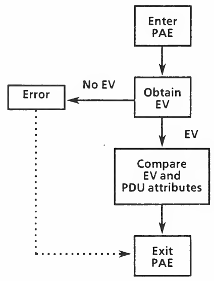
Figure 4.3. Peer Access Enforcement (PAE) Process
図 4.3. ピアアクセス実施（PAE）プロセス
4.2.1 ENTER PAE
4.2.1 PAE への進入
Inputs: Request from SP to Perform Access Control Enforcement Processing
入力: アクセス制御の実施処理を実行する SP からの要求
Outputs: Request to Obtain Enforcement Vector
PDU Attributes
出力: 実施ベクトルを取得する要求
PDU 属性
Functionality:
機能:
The Enter PAE function will be called by the SP when access control enforcement processing is to be performed on a PDU’s attributes for a data packet. This function will get the PDU’s attributes for the data packet being processed from the SP. The PDU’s attributes will be transferred, along with a request, to the Obtain Enforcement Vector function so that it can perform its processing.
PAE への進入の機能は、データパケットの PDU 属性に対してアクセス制御の実施処理を行う際に、SP から呼び出されます。この機能は、処理対象のデータパケットの PDU 属性を SP から取得します。PDU 属性は、要求とともに、実施ベクトルの取得の機能に転送され、その機能が処理を実行します。
4.2.2 OBTAIN ENFORCEMENT VECTOR
4.2.2 実施ベクトルの取得
Inputs: Request to Obtain Enforcement Vector
PDU Attributes
入力: 実施ベクトルを取得する要求
PDU 属性
Outputs: EV_Found = Yes/No
Enforcement Vector
PDU Attributes
Error Condition
出力: EV_Found = Yes/No
実施ベクトル
PDU 属性
エラー状態
Functionality:
機能:
The Obtain EV function will search the available EV MIB in an attempt to find the correct EV for the cryptographic association which is being used. This function will use the appropriate information contained in the PDU’s attributes (e.g., KID, TEK identifier) to try and find a valid EV. If a valid EV is found then EV_Found = Yes, and the EV and PDU’s attributes are sent to the Compare EV and PDU Attributes function so that it can perform its processing. If a valid EV is not found then EV_Found = No, and an error condition occurs. This error condition will drop the packet and return processing back to the SP (some implementations may allow for an optional recovery attempt to be made, the packet being processed may be cached with the processing being transferred to KMP in an attempt to establish an association).
EV の取得の機能は、使用されている暗号上の関連付けに適した EV を見つけるために、利用可能な EV MIB を検索します。この機能は、PDU 属性に含まれる適切な情報（たとえば、KID、TEK 識別子）を用いて、有効な EV を見つけようとします。有効な EV が見つかれば、EV_Found = Yes となり、EV と PDU 属性が EV と PDU 属性の比較の機能に送られ、その機能が処理を実行します。有効な EV が見つからなければ、EV_Found = No となり、エラー状態が発生します。このエラー状態によりパケットは破棄され、処理は SP に戻されます（実装によっては、任意の回復の試みを許す場合があります。その場合、処理中のパケットをキャッシュし、処理を KMP に移して関連付けの確立を試みることがあります）。
4.2.3 COMPARE EV AND PDU LABEL
4.2.3 EV と PDU ラベルの比較
Inputs: Enforcement Vector
PDU Attributes
Local Configuration Information
入力: 実施ベクトル
PDU 属性
ローカルの構成情報
Outputs: PAE_Result = Pass/Fail
出力: PAE_Result = Pass/Fail
Functionality:
機能:
The Compare EV and PDU Attributes function will determine whether or not the security attributes of a data packet, contained in the PDU’s attributes, fall within the bounds specified in the EV. This function uses the local configuration information to determine the interpretation of the PDU’s attributes appropriate for comparing with the EV. Once interpreted, the PDU’s attributes are compared to the EV. If the fields in the PDU’s attributes fall within the bounds contained in the EV, then PAE_Result = Pass. If the fields in the PDU’s attributes exceed the bounds contained in the EV, then PAE_Result = Fail. The Exit PAE function is then called to perform its processing.
EV と PDU 属性の比較の機能は、PDU 属性に含まれるデータパケットのセキュリティ属性が、EV で指定された範囲に収まるかどうかを判定します。この機能は、EV との比較に適した PDU 属性の解釈を決定するために、ローカル構成情報を使用します。解釈された PDU 属性は、EV と比較されます。PDU 属性のフィールドが EV に含まれる範囲に収まれば、PAE_Result = Pass となります。PDU 属性のフィールドが EV に含まれる範囲を超えていれば、PAE_Result = Fail となります。その後、PAE からの退出の機能が呼び出されて処理を実行します。
4.2.4 EXIT PAE
4.2.4 PAE からの退出
Inputs: PAE_Result
入力: PAE_Result
Outputs: Response to SP containing PAE_Result
出力: PAE_Result を含む SP への応答
Functionality:
機能:
The Exit PAE function will, after a PAE result has been determined, return the control of the processing to the SP function which called for the PAE processing. PAE_Result is also passed back to the SP as a response, indicating the success or failure of the PAE operation.
PAE からの退出の機能は、PAE の結果が決定された後、処理の制御を、PAE 処理を要求した SP の機能に返します。PAE_Result も、PAE 操作の成功または失敗を示す応答として SP に返されます。
4.3 Staged Delivery Communications Services; Secure Messaging
4.3 段階的配送通信サービス、セキュアメッセージング
This section describes the application of the access control model to a store-and-forward communications context. It applies the model to electronic messaging (the only store-and-forward communications service currently being addressed by SDNS). Familiarity with the SDNS Message Security Protocol (MSP) document (SDN.701), is assumed. Figure 4.4 illustrates a functional flow diagram for the order in which access control events occur when called by a User Agent (UA) implementing the MSP.
本節では、アクセス制御モデルの、蓄積交換型通信の文脈への適用を説明します。ここでは、このモデルを電子メッセージング（現在 SDNS が扱っている唯一の蓄積交換型通信サービス）に適用します。SDNS の Message Security Protocol（MSP）文書（SDN.701）に精通していることを前提としています。図 4.4 は、MSP を実装するユーザーエージェント（UA）から呼び出されたときに、アクセス制御のイベントが発生する順序についての機能フロー図を示しています。
The following assumptions have been made to better illustrate the application of access control in the context of secure messaging.
セキュアメッセージングの文脈でのアクセス制御の適用をよりよく説明するために、次の前提を置いています。
•The access control function is integrated within the SDNS MSP implementation, which is also responsible for controlling the management operations. For the case of X.420 interpersonal messaging, MSP operates in conjunction with the UA process responsible for processing mail.
•アクセス制御機能は SDNS の MSP 実装の中に統合されており、MSP 実装は管理操作の制御も担います。X.420 の個人間メッセージングの場合、MSP は、メールの処理を担う UA プロセスと連携して動作します。
•Given the first assumption, it is technically feasible to reflect information resulting from the access control decision process to the user associated with the UA. (This contrasts with the front end SDNS implementation often contemplated at layers 3 and 4, where a protocol between the associated host and its SDNS front end may or may not exist.) Reflection of such data may be restricted under the local policies to be implemented in some SDNS components.
•1 つ目の前提のもとでは、アクセス制御の決定プロセスから得られる情報を、UA に関連付けられたユーザーに反映することは技術的に実現可能です。（これは、第 3 層と第 4 層でよく想定される、フロントエンド型の SDNS の実装とは対照的です。そこでは、関連付けられたホストと SDNS のフロントエンドとの間のプロトコルが存在する場合も存在しない場合もあります。）このようなデータの反映は、一部の SDNS コンポーネントで実装されるローカルポリシーのもとで制限される場合があります。

Figure 4.4. Staged Delivery Access Control Services; Secure Messaging
図 4.4. 段階的配送のアクセス制御サービス、セキュアメッセージング
•In environments where the use of AVs is necessary, appropriate AV representations will be accommodated within directory service records and message OriginatorSecurityData structures.
•AV の使用が必要な環境では、適切な AV の表現は、ディレクトリサービスのレコードとメッセージの OriginatorSecurityData 構造の中に収められます。
•For purposes of this description, it is assumed that access control enforcement is configured within originator and recipient MSP implementations as a required service, and is applied to all outbound and incoming message traffic.
•この説明の目的上、アクセス制御の実施は、発信側と受信側の MSP 実装の中で必須のサービスとして構成され、すべての送信および受信のメッセージトラフィックに適用されるものと想定します。
•It is assumed that a Composite ID represents a user's privilege attributes. If a user's operating range must be constrained based on characteristics of the associated UA or its supporting system, application of such constraints is a local matter outside the scope of SDNS access control.
•Composite ID は、ユーザーの特権属性を表すものと想定します。ユーザーの動作範囲を、関連付けられた UA またはそれを支えるシステムの特性に基づいて制約する必要がある場合、そのような制約の適用はローカルの事項であり、SDNS のアクセス制御の範囲外です。
In response to a user's request, an originator UA submits an outgoing message for MSP processing. Message security label information is determined in one of two ways: (implicitly) based on local processing context, or (explicitly) based on the SecurityLabel parameter included in the associated submission envelope. Submission envelope parameters processed by MSP (in addition to message content itself) include:
ユーザーの要求に応じて、発信側の UA は、送信メッセージを MSP の処理のために提出します。メッセージのセキュリティラベル情報は、2 通りのいずれかで決定されます。ローカルの処理の文脈に基づいて（暗黙的に）決定されるか、関連する提出エンベロープに含まれる SecurityLabel パラメーターに基づいて（明示的に）決定されます。MSP が処理する提出エンベロープのパラメーターには、（メッセージの内容自体に加えて）次のものがあります。
•SecurityLabel
•SecurityLabel
•recipient O/R name list
•受信者の O/R 名リスト
•OriginatorIdentifier (if not implicit)
•OriginatorIdentifier（暗黙的でない場合）
•ContentType designator for message
•メッセージの ContentType 指定子
If multiple recipients are specified, access control checks (including calls to the PAA and PAE procedures) are performed for each recipient. A distinct EV governs message transfer to each recipient of a multicast message. If access control checks fail for some recipients of a multicast message, this need not preclude transmission of the message to those recipients for whom the checks succeed. An originator may (depending on local implementation and policy) be informed when one or more of a message's recipients are unacceptable for access control reasons. Optionally, an originator may request that MSP processing and message transmission be completed only if all listed recipients are acceptable.
複数の受信者が指定されている場合、アクセス制御チェック（PAA と PAE の手順の呼び出しを含みます）が受信者ごとに実行されます。マルチキャストメッセージの各受信者へのメッセージ転送は、別個の EV によって支配されます。マルチキャストメッセージの一部の受信者についてアクセス制御チェックが失敗しても、チェックに成功した受信者へのメッセージの送信を妨げる必要はありません。発信者には、（ローカルの実装とポリシーによって）メッセージの 1 人以上の受信者がアクセス制御上の理由で受け入れられないときに、通知される場合があります。発信者は、リストされたすべての受信者が受け入れ可能である場合にのみ、MSP の処理とメッセージの送信を完了するよう、任意で要求できます。
If access control processing is successfully completed, MSP encryption processing is performed. The remainder of the section details the access control functions defined in figure 4.4, as called by MSP.
アクセス制御の処理が正常に完了すれば、MSP の暗号化処理が行われます。本節の残りでは、MSP から呼び出される、図 4.4 で定義されたアクセス制御機能を詳しく説明します。
4.3.1 ENTER FROM MESSAGE SECURITY PROTOCOL (MSP)
4.3.1 Message Security Protocol（MSP）からの進入
Inputs: Request from MSP to Perform Access Control Processing
入力: アクセス制御の処理を実行する MSP からの要求
Outputs: Request to Obtain Peer Security Information
出力: ピアのセキュリティ情報を取得する要求
Functionality:
機能:
The Enter From MSP function will be called by the MSP when access control processing is to be performed on a message, either incoming or outgoing. Upon receipt of a request to perform access control processing from MSP, a request is sent to the Obtain Peer Security Information function to perform its processing.
Enter From MSP 機能は、受信または送信メッセージに対してアクセス制御処理を行う際に、MSP によって呼び出されます。MSP からアクセス制御処理を実行する要求を受け取ると、処理を行うための要求が Obtain Peer Security Information 機能に送られます。
4.3.2 OBTAIN PEER SECURITY INFORMATION
4.3.2 ピアのセキュリティ情報の取得
Inputs: Request to Obtain Peer Security Information
Local Configuration Information
入力: ピアのセキュリティ情報を取得する要求
ローカルの構成情報
Outputs: Obtain_Peer_Info = Success/Failure
Remote Composite ID Information
Error Condition
出力: Obtain_Peer_Info = Success/Failure
リモートの Composite ID 情報
エラー状態
Functionality:
機能:
The Obtain Peer Security Information function is responsible for obtaining the remote peer's Composite ID. This function is further broken down into obtaining the information in both the outgoing and incoming situations (4.3.2.1 & 4.3.2.2).
ピアのセキュリティ情報の取得の機能は、リモートのピアの Composite ID を取得する役割を担います。この機能はさらに、送信の場合と受信の場合の両方での情報の取得に分けられます（4.3.2.1 と 4.3.2.2）。
4.3.2.1 On Outgoing Messages
4.3.2.1 送信メッセージの場合
Inputs & Outputs are the same as for the Obtain Peer Security Information function above.
入力と出力は、上記のピアのセキュリティ情報の取得の機能と同じです。
Functionality:
機能:
The Obtain Peer Security Information On Outgoing Messages function is responsible for obtaining the message recipient's posted certificate, RandomPart, and AV (if used) from MSP (as an example it is MSP which will perform any directory queries which may be needed). The exact method for obtaining the message recipient's information and the medium on which the message recipient's information is conveyed is a local matter and will be determined through the application of local configuration information. (e.g., Recipient information may be posted on a directory server, in a local cache, or in a remote cache) If the attempt to obtain the message recipient information is successful, then Obtain_Peer_Info = Success and the message recipient's information is sent to the Perform PAA function so that it can perform its processing.
送信メッセージの場合のピアのセキュリティ情報の取得の機能は、メッセージ受信者の掲示された証明書、RandomPart、および AV（使用する場合）を MSP から取得する役割を担います（たとえば、必要になりうるディレクトリへの問い合わせを実行するのは MSP です）。メッセージ受信者の情報を取得する正確な方法と、メッセージ受信者の情報が伝えられる媒体は、ローカルの事項であり、ローカル構成情報の適用によって決定されます。（たとえば、受信者の情報は、ディレクトリサーバー、ローカルのキャッシュ、またはリモートのキャッシュに掲示されている場合があります。）メッセージ受信者の情報の取得の試みが成功すれば、Obtain_Peer_Info = Success となり、メッセージ受信者の情報が PAA の実行の機能に送られ、その機能が処理を実行します。
If the attempt to obtain the message recipient's information is unsuccessful, then Obtain_Peer_Info = Failure and communications are impossible. The failure to obtain the message recipient's information results in the generation of an error condition, this error condition should not be construed as an access control decision but rather is a communications failure. Control of the processing is returned to MSP. In the case of a multicast message this error condition is only tied to the specific recipient for whom the attempt to retrieve posted information was being made.
メッセージ受信者の情報の取得の試みが失敗すれば、Obtain_Peer_Info = Failure となり、通信は不可能です。メッセージ受信者の情報を取得できなかったことで、エラー状態が生成されますが、このエラー状態はアクセス制御の決定と解釈すべきではなく、通信の失敗です。処理の制御は MSP に戻されます。マルチキャストメッセージの場合、このエラー状態は、掲示された情報の取得を試みていた特定の受信者にのみ結び付けられます。
4.3.2.2 On Incoming Messages
4.3.2.2 受信メッセージの場合
Inputs & Outputs are the same as for the Obtain Peer Security Information function above.
入力と出力は、上記のピアのセキュリティ情報の取得の機能と同じです。
Functionality:
機能:
The Obtain Peer Security Information On Incoming Messages function is responsible for obtaining the message's originator-specific information. All such information is available in the OriginatorSecurityData within the message's security heading. If the attempt to obtain the message's originator-specific information is successful, then Obtain_Peer_Info = Success and the message's originator-specific information is sent to the Perform PAA function so that it can perform its processing.
受信メッセージの場合のピアのセキュリティ情報の取得の機能は、メッセージの発信者に固有の情報を取得する役割を担います。そのような情報はすべて、メッセージのセキュリティヘッダー内の OriginatorSecurityData で利用できます。メッセージの発信者に固有の情報の取得の試みが成功すれば、Obtain_Peer_Info = Success となり、メッセージの発信者に固有の情報が PAA の実行の機能に送られ、その機能が処理を実行します。
If the attempt to obtain the message's originator-specific information is unsuccessful, then Obtain_Peer_Info = Failure and communications are impossible. The failure to obtain the message's originator-specific information results in the generation of an error condition, this error condition should not be construed as an access control decision but rather is a communications failure. Control of the processing is returned to MSP. Note that this case can only occur upon receipt of a defective message (i.e., one which doesn’t contain all of the MSP-required contents).
メッセージの発信者に固有の情報の取得の試みが失敗すれば、Obtain_Peer_Info = Failure となり、通信は不可能です。メッセージの発信者に固有の情報を取得できなかったことで、エラー状態が生成されますが、このエラー状態はアクセス制御の決定と解釈すべきではなく、通信の失敗です。処理の制御は MSP に戻されます。この場合は、欠陥のあるメッセージ（すなわち、MSP が必要とする内容がすべて含まれていないもの）を受信したときにのみ発生しうることに注意してください。
4.3.3 PERFORM PAA
4.3.3 PAA の実行
Inputs: Message Originator's Composite ID Information
Message Recipient's Composite ID Information
入力: メッセージ発信者の Composite ID 情報
メッセージ受信者の Composite ID 情報
Outputs: PAA_Result = Pass/Fail
Enforcement Vector (EV)
Error Condition
出力: PAA_Result = Pass/Fail
実施ベクトル（EV）
エラー状態
Functionality:
機能:
The purpose of the Perform PAA function is to compare both the message originator's and message recipient's Composite ID information to determine whether or not a commonly held set of security attributes exists on which an association can be based. In the PAA procedure, a UA is responsible for calling all the PAA functionality which the local configuration dictates. For a detailed description of PAA refer to section 4.1.
PAA の実行の機能の目的は、メッセージ発信者とメッセージ受信者の両方の Composite ID 情報を比較して、関連付けの基礎となりうる、共通に保持されるセキュリティ属性の集合が存在するかどうかを判定することです。PAA の手順では、UA が、ローカルの構成が定めるすべての PAA の機能を呼び出す役割を担います。PAA の詳細な説明については、第 4.1 節を参照してください。
If PAA is successfully completed then PAA_Result = Pass, and the EV is passed to the Perform PAE function so that it can perform its processing. If the PAA is unsuccessful then PAA_Result = Fail and an error condition is generated. The error condition generated by a failed PAA would indicate that no allowable set of communications exists between the two peers, this is an access control decision. In the case of an outgoing multicast message, this error condition is only tied to the specific recipient for whom the attempt to perform PAA is made. If PAA fails, control of the processing is returned to the MSP along with the appropriate error condition.
PAA が正常に完了すれば、PAA_Result = Pass となり、EV が PAE の実行の機能に渡され、その機能が処理を実行します。PAA が失敗すれば、PAA_Result = Fail となり、エラー状態が生成されます。PAA の失敗によって生成されるエラー状態は、2 つのピア間に許容される通信の組み合わせが存在しないことを示します。これはアクセス制御の決定です。送信マルチキャストメッセージの場合、このエラー状態は、PAA の実行を試みた特定の受信者にのみ結び付けられます。PAA が失敗した場合、処理の制御は、適切なエラー状態とともに MSP に戻されます。
4.3.4 PERFORM PAE
4.3.4 PAE の実行
Inputs: Message Sensitivity Label
EV
入力: メッセージの機微度ラベル
EV
Outputs: PAE_Result = Pass/Fail
出力: PAE_Result = Pass/Fail
Functionality:
機能:
The Perform PAE function determines whether a message meets the constraints represented in an EV. At an originator UA, RBAC determinations are based on submission envelope fields representing security-relevant attributes and/or on security attributes determined implicitly based on processing context. At a recipient UA, RBAC determinations are based on the sensitivity indication carried within the ProtectedToken carried in the message and corresponding to that recipient.
PAE の実行の機能は、メッセージが EV に表される制約を満たすかどうかを判定します。発信側の UA では、RBAC の判定は、セキュリティに関連する属性を表す提出エンベロープのフィールド、または処理の文脈に基づいて暗黙的に決まるセキュリティ属性（あるいはその両方）に基づきます。受信側の UA では、RBAC の判定は、メッセージに含まれ、その受信者に対応する ProtectedToken 内の機微度の表示に基づきます。
It is assumed that IBAC enforcement at an originator is based on the set of recipient Originator/Recipient (O/R) names to whom a message is directed and, correspondingly, that IBAC enforcement at a recipient is based on the originator O/R name as extracted from the originatorCertificate in an incoming message. If the IBAC checks will be performed in the course of PAA processing (as EV establishment is attempted) they need not be incorporated within PAE.
発信側での IBAC の実施は、メッセージの宛先である受信者の発信者/受信者（O/R）名の集合に基づき、これに対応して、受信側での IBAC の実施は、受信メッセージの originatorCertificate から取り出した発信者の O/R 名に基づくと想定します。IBAC チェックが（EV の確立を試みる際の）PAA 処理の過程で行われる場合、それらを PAE に組み込む必要はありません。
If the PAE function is successfully completed then PAE_Result = Pass, and the Return to MSP function is called to perform its processing. If the PAE function is unsuccessful then PAE_Result = Fail, and an error condition is generated. The error condition generated by a failed PAE would indicate that the message being examined did not fall within the bounds established for that communications during PAA, this is an access control decision. In the case of an outgoing multicast message, this error condition is only tied to the specific recipient for whom the attempt to perform PAE is made. If PAE fails, control of the processing is returned to the MSP along with the appropriate error condition.
PAE の機能が正常に完了すれば、PAE_Result = Pass となり、MSP への復帰の機能が呼び出されて処理を実行します。PAE の機能が失敗すれば、PAE_Result = Fail となり、エラー状態が生成されます。PAE の失敗によって生成されるエラー状態は、調べているメッセージが、PAA の間にその通信に対して確立された範囲に収まらなかったことを示し、これはアクセス制御の決定です。送信のマルチキャストメッセージの場合、このエラー状態は、PAE の実行を試みた特定の受信者にのみ結び付けられます。PAE が失敗した場合、処理の制御は、適切なエラー状態とともに MSP に戻されます。
4.3.5 RETURN TO MSP
4.3.5 MSP への復帰
Inputs: PAE_Result
入力: PAE_Result
Outputs: Response to MSP indicating successful access control processing
出力: アクセス制御処理の成功を示す MSP への応答
Functionality:
機能:
The Return to MSP function will return control of the processing to the MSP function. Along with the return of control this function will also indicate to the MSP that the message which was being processed has successfully completed all access control procedures.
MSP への復帰の機能は、処理の制御を MSP の機能に戻します。制御を戻すとともに、この機能は、処理されていたメッセージがすべてのアクセス制御の手順を正常に完了したことも MSP に示します。
5.0 ACCESS CONTROL INFORMATION SPECIFICATION (ACIS) OVERVIEW
5.0 アクセス制御情報仕様（ACIS）の概要
5.1 Introduction
5.1 序論
The requirement for the Access Control Information Specification has been established as a result of the Access Control Working Group's (ACWG) investigation of various Partitions. This tool may be applied to all Partitions, but as yet a detailed investigation of the Security Attribute structures of all Partitions has not been made.
アクセス制御情報仕様の必要性は、アクセス制御作業部会（ACWG）によるさまざまなパーティションの調査の結果として確立されました。このツールはすべてのパーティションに適用してもよいですが、すべてのパーティションのセキュリティ属性構造について、詳細な調査はまだ行われていません。
Investigations have shown that the Security Attributes of many environments are both hierarchical and non-hierarchical in nature and can be represented as a tree structure. This organizational scheme posed some problems when trying to represent this data in a Primary Certificate or in an Auxiliary Vector. If the data is broken down into tiers and an entire tier is represented contiguously before moving to the next tier, ambiguities may arise when trying to associate lower tier attributes with the current tier being examined. On the other hand representing each branch of the tree completely and independently requires too much space. More importantly, it has been found that without some uniform method for encoding and comparing access control data many SDNS implementations would require software specific to their local security policy. With this set of issues to be resolved, the ACWG set out to develop the Access Control Information Specification (ACIS).
調査により、多くの環境のセキュリティ属性は、階層型でもあり非階層型でもあり、木構造で表現できることがわかりました。この編成方式は、このデータを主証明書または補助ベクトルで表現しようとする際に、いくつかの問題を生じさせました。データを階層に分け、1 つの階層全体を連続して表現してから次の階層に移ると、調べている現在の階層に下位階層の属性を関連付けようとする際に、曖昧さが生じる場合があります。一方、木の各枝を完全かつ独立に表現すると、あまりにも多くの容量が必要になります。さらに重要なことに、アクセス制御データを符号化し比較するための統一的な方法がなければ、多くの SDNS 実装が、各自のローカルのセキュリティポリシーに固有のソフトウェアを必要とすることがわかりました。これらの問題を解決するため、ACWG はアクセス制御情報仕様（ACIS）の開発に着手しました。
ACIS is a tool to be supported by vendors who develop SDNS components supporting access control and to be used by SDNS customers. ACIS provides several useful functions:
ACIS は、アクセス制御をサポートする SDNS コンポーネントを開発するベンダーが支援し、SDNS の顧客が使用するためのツールです。ACIS は、いくつかの有用な機能を提供します。
a.It provides an approach to enforcing access control which is independent of any particular security policy, leading to a savings in development costs for an implementation;
a.特定のセキュリティポリシーに依存しない、アクセス制御の実施への取り組み方を提供し、実装の開発コストの節約につながります。
b.It provides a uniform method for representing access control information through the use of its grammar;
b.その文法を用いて、アクセス制御情報を表現するための統一的な方法を提供します。
c.It provides a standard algorithm for interpreting and comparing access control attributes.
c.アクセス制御属性を解釈し比較するための標準アルゴリズムを提供します。
ACIS is based upon the theory of predictive parsing. The grammar is a form of an LL(1) grammar. A more detailed description on ACIS can be found in the SDNS Access Control Specification, Addendum 1 (SDN.802/1), the Access Control Information Specification.
ACIS は、予測構文解析の理論に基づいています。文法は LL(1) 文法の一種です。ACIS のより詳細な説明は、SDNS Access Control Specification, Addendum 1（SDN.802/1）、すなわちアクセス制御情報仕様にあります。
5.1.1. USER REQUIREMENTS FOR ACIS
5.1.1. ACIS に対するユーザー要件
ACIS is designed to handle problems that arise when the Security Attributes of a particular system have certain characteristics. The most important of these characteristics is that the system Security Attributes can be expressed in a tree structure, implying hierarchy and interdependence. A second characteristic of the system is that its access control must be able to be performed as an intersection process of the attributes of the two entities that wish to communicate.
ACIS は、特定のシステムのセキュリティ属性が一定の特性を持つ場合に生じる問題を扱うよう設計されています。これらの特性のうち最も重要なものは、システムのセキュリティ属性を、階層と相互依存を含意する木構造で表現できることです。システムの 2 つ目の特性は、そのアクセス制御が、通信を望む 2 つのエンティティの属性の共通部分を求めるプロセスとして実行できなければならないことです。
Consistent with these characteristics, the first task to accomplish when using ACIS is to express the entire System Security Attribute structure of a particular Partition as a tree structure. Appended to the System Security Attribute tree should be a collection of possible PDU attributes which indicate what label may be expected if communications is allowed for this set of attributes. Figures 5.1 and 5.2 show a system tree and a set of allowable labels, respectively.
これらの特性に沿って、ACIS を使用する際に最初に行うタスクは、特定のパーティションのシステムセキュリティ属性の構造全体を木構造として表現することです。システムセキュリティ属性の木には、この属性の集合で通信が許可された場合にどのラベルが想定されるかを示す、PDU 属性の候補の集合を付加すべきです。図 5.1 と図 5.2 は、それぞれシステムの木と、許可されるラベルの集合を示しています。
Within a Partition each communicating entity might have a subset of the overall System Security Attributes. A partial tree must be developed for each of these entities and it must be consistent with the system tree. Furthermore, the expressions (or partial trees) for any two entities that wish to communicate must have the exact same interpretation of each of the branches on which communications will be allowed. Figures 5.3 and 5.4 show a sample tree for Hosts A and B which has been derived from the system tree of Figure 5.1.
パーティション内では、通信する各エンティティが、システム全体のセキュリティ属性の一部を持つ場合があります。これらの各エンティティについて部分木を作成しなければならず、それはシステムの木と整合していなければなりません。さらに、通信を望む任意の 2 つのエンティティの表現（または部分木）は、通信が許可される各枝について、まったく同じ解釈を持たなければなりません。図 5.3 と図 5.4 は、図 5.1 のシステムの木から導出された、ホスト A とホスト B のサンプルの木を示しています。
This preliminary organization and assignment of access control attributes is an essential part of making ACIS work and must therefore be done correctly to insure the accurate performance of access control. For the most part this work is consistent with preliminary tasks required today for systems employing access control, and therefore should not introduce a significant amount of new work.
アクセス制御属性のこの予備的な編成と割り当ては、ACIS を機能させるうえで不可欠な部分であり、したがって、アクセス制御の正確な動作を確実にするために正しく行わなければなりません。この作業の大部分は、現在アクセス制御を採用するシステムで必要とされる予備的なタスクと整合しており、そのため、新たな作業が大幅に増えることはないはずです。
There are two cases to consider when deciding what portions of the System Security Attributes tree go into the Primary Certificate and/or the Auxiliary Vector. It should be noted that ACIS will not be used on any information placed in the primary certificate. Any interrelationships between any of the fields will be represented in the Auxiliary Vector. The first case, which is primarily the one addressed above, is when there is a single tree for the entire collection of attributes spanning all four tiers of the Four-Tiered Model. In this case, if all of the information cannot fit into the primary certificate a means for transferring or duplicating some primary certificate information may need to be done to complete the tree in the Auxiliary Vector. The second case to consider is when each set of the attributes for a particular tier in the model is a separate tree in and of itself. In this case, if the information cannot fit into the primary certificate then the information must be split between primary certificate and auxiliary vector. The information would be broken down; the Tier 1, Tier 2, and some Tier 4 information will be in the Primary Certificate and the Tier 3 and 4 information will be in the Auxiliary Vector.
システムセキュリティ属性の木のどの部分を主証明書または補助ベクトル（あるいはその両方）に入れるかを決める際に、考慮すべき 2 つの場合があります。ACIS は、主証明書に置かれる情報には使用されないことに注意してください。フィールド間の相互関係は、補助ベクトルで表現されます。1 つ目の場合は、主として上で扱ったもので、4 階層モデルの 4 つの階層すべてにまたがる属性の集合全体に対して、単一の木がある場合です。この場合、すべての情報が主証明書に収まらなければ、補助ベクトルの木を完成させるために、主証明書の情報の一部を転送または複製する手段が必要になる場合があります。2 つ目に考慮すべき場合は、モデルの特定の階層の属性の各集合が、それ自体として別個の木である場合です。この場合、情報が主証明書に収まらなければ、情報を主証明書と補助ベクトルに分割しなければなりません。情報は分けられ、第 1 階層、第 2 階層、および第 4 階層の一部の情報は主証明書に、第 3 階層と第 4 階層の情報は補助ベクトルに置かれます。
![Upper part: a row of label boxes "Channel ID", "Category 1 of 4", "Codeword 1 of ?", "Classification 1 of 3", "Accreditors 1 of 4", with brackets below (one under Channel ID, one spanning Category, Codeword and Classification, one under Accreditors) and the possible values listed in columns: "Channel A"; "CAT 1", "CAT 2", "CAT 2A", "CAT 3"; "CW", "CW", "--", "--"; "TS", "S", "S", "C"; "A", "B", "C", "D". Lower part: an attribute tree with a root OR node (drawn "|") whose branches are an AND node (drawn "+") and "Channel B"; the AND node has the branches "Channel A", an OR node for the categories, and an OR node for the accreditors "A", "B", "A,B". The category OR node has four AND nodes: one joining an AND of "CAT 1" with an OR of "CW 1", "CW 2", "CW 3", and "TS"; one joining an AND of "CAT 2" with an OR of "CWA", "CWB", "CWC", and "S"; one joining "CAT 2A" and "S"; and one joining "CAT 3" and "C". Key: "+ = 'AND'", "| = 'OR'".](assets/ir-4259/p0077-drawing-01.png)
Figure 5.1. System Security Attribute Tree
図 5.1. システムセキュリティ属性の木
5.1.2 COMPONENTS OF ACIS AND HOW IT WORKS
5.1.2 ACIS の構成要素とその仕組み
ACIS is constructed of several functions and a grammar. As seen in the previous figures, logical operators are required in order to accurately express the interrelationships of Security Attributes. Shown in the figures (for the purpose of example) are the 'and' and 'or' operators. Other operators are detailed in the SDNS Access Control Specification, Addendum 1 (SDN.802/1); the ACIS Detailed Specification. Associated with each operator is a unique character. This set of operators and their representations comprise the ACIS grammar. This grammar is used when constructing the System or Entity Attribute tree.
ACIS は、いくつかの機能と文法で構成されています。前の図に見られるように、セキュリティ属性の相互関係を正確に表現するには、論理演算子が必要です。図には（例示のため）「and」と「or」の演算子が示されています。その他の演算子は、SDNS Access Control Specification, Addendum 1（SDN.802/1）、すなわち ACIS の詳細仕様で詳しく説明されています。各演算子には、固有の文字が対応付けられています。この演算子の集合とその表現が、ACIS の文法を構成します。この文法は、システムまたはエンティティ属性の木を構築する際に使用されます。
CHANNEL A LABEL ; = CHANNEL_ID + SECURITY_ID + ACCREDITOR
CHANNEL_ID : = 'CHANNEL A'
SECURITY_ID : = CAT1 | CAT2 | CAT2A | CAT3
CAT1 : = CAT1_ID + CAT1_CW + TS_ID
CAT1_ID : = 'CAT1'
CAT1_CW : = 'CW1' | 'CW2' | 'CW3'
TS_ID : = 'TS'
CAT2 : = CAT2_ID + CAT2_CW + S_ID
CAT2_ID : = 'CAT2'
CAT2_CW : = 'CWA' | 'CWB' | 'CWC'
S_ID : = 'S'
CAT2A : = CAT2A_ID + S_ID
CAT2A_ID : = 'CAT2A'
CAT3 : = CAT3_ID + C_ID
C_ID : = 'C'
ACCREDITOR : = 'A' | 'B' | 'A,B'Figure 5.2. Channel A Allowable Label Set
図 5.2. チャネル A で許可されるラベル集合
![Attribute tree with a root OR node (drawn "|") whose branches are an AND node (drawn "+") and "Channel B"; the AND node has the branches "Channel A", an OR node for the categories, and an OR node for the accreditors "A", "B", "A,B". The category OR node has four AND nodes: one joining an AND of "CAT 1" with an OR of "CW 1", "CW 2", "CW 3", and "TS"; one joining an AND of "CAT 2" with an OR of "CWA", "CWB", "CWC", and "S"; one joining "CAT 2A" and "S"; and one joining "CAT 3" and "C". Dotted branches (and dashed node circles) mark what Host A does not hold: "Channel B", "CW 2", "CW 3", "CWB", the whole "CAT 2A"/"S" and "CAT 3"/"C" subtrees, and the accreditors "B" and "A,B"; the rest is drawn in solid heavy lines. Key: "+ = 'AND'", "| = 'OR'".](assets/ir-4259/p0079-figure-01.png)
Figure 5.3. HOST A’s Permission Set
図 5.3. ホスト A の許可集合
The first of several functions of ACIS is the encoding function. The process takes the tree structured attributes as an input and writes it as a set of contiguous characters which can then be placed inside an auxiliary vector. This string is called an Access Control Expression. Figure 5.5 shows the encoding process of the Entity we called Host A. Conversely, there is a decoding function which takes as input a contiguous string of bytes and can reconstruct the System or Entity tree. This concept is shown in Figure 5.6.
ACIS の複数の機能のうち最初のものは、符号化機能です。このプロセスは、木構造の属性を入力として受け取り、それを、補助ベクトルの中に置ける連続した文字の集合として書き出します。この文字列は、アクセス制御式と呼ばれます。図 5.5 は、ホスト A と呼んだエンティティの符号化プロセスを示しています。逆に、連続したバイト列を入力として受け取り、システムまたはエンティティの木を再構築できる、復号機能があります。この概念は図 5.6 に示されています。
During the PAA process the Security Attributes of the entities wishing to communicate are exchanged. In order to determine if these two entities have Security Attributes in common, an intersection or 'Comparison' process must take place. The Compare function in ACIS takes as input any two Encoded strings and eliminates the nonintersecting attributes. Areas where the two intersect are preserved as information in the EV for the PAE process. Note that the full suite of PAE is only relevant when explicit labeling is used and when label values may vary during the lifetime of an association. Those portions of either string which do not intersect are eliminated (pruned). In cases where no intersection exists the communication is disallowed. This Comparing function of ACIS must assure the elimination of unauthorized labels, as well as guarantee authorized communications. Figure 5.7 conceptually shows this pruning process for Hosts A and B.
PAA プロセスの間に、通信を望むエンティティのセキュリティ属性が交換されます。これら 2 つのエンティティに共通するセキュリティ属性があるかどうかを判定するには、共通部分を求める「比較」プロセスが行われなければなりません。ACIS の比較機能は、任意の 2 つの符号化された文字列を入力として受け取り、共通部分のない属性を除去します。2 つの共通部分にあたる領域は、PAE プロセスのための情報として EV に保存されます。PAE の処理一式がすべて関係するのは、明示的なラベル付けが使われ、かつラベルの値が関連付けの存続期間中に変化しうる場合だけであることに注意してください。どちらの文字列についても、共通部分にあたらない部分は除去（剪定）されます。共通部分が存在しない場合は、通信は許可されません。ACIS のこの比較機能は、許可された通信を保証するとともに、許可されていないラベルの除去を確実にしなければなりません。図 5.7 は、ホスト A とホスト B について、この剪定プロセスを概念的に示しています。
![Attribute tree with a root OR node (drawn "|") whose branches are an AND node (drawn "+") and "Channel B"; the AND node has the branches "Channel A", an OR node for the categories, and an OR node for the accreditors "A", "B", "A,B". The category OR node has four AND nodes: one joining an AND of "CAT 1" with an OR of "CW 1", "CW 2", "CW 3", and "TS"; one joining an AND of "CAT 2" with an OR of "CWA", "CWB", "CWC", and "S"; one joining "CAT 2A" and "S"; and one joining "CAT 3" and "C". Dotted branches (and a dashed node circle) mark what Host B does not hold: "Channel B", "CW 2", "CW 3", "CWB", "CWC", and the "CAT 3"/"C" subtree; all the accreditors "A", "B", "A,B" and the "CAT 2A"/"S" subtree are drawn in solid heavy lines. Key: "+ = 'AND'", "| = 'OR'".](assets/ir-4259/p0080-figure-01.png)
Figure 5.4. HOST B’s Permission Set
図 5.4. ホスト B の許可集合
If communications are permitted, continuous access control is affected by means of the PAE process. This process involves comparing a PDU’s attributes with the contents of an EV. When a path is found that is common to both parties, the end of that path should contain a set of allowable labels representing that path. When PAE is performed, the PDU’s attributes are compared with this set extracted from the EV.
通信が許可された場合、継続的なアクセス制御は PAE プロセスによって行われます。このプロセスでは、PDU の属性を EV の内容と比較します。双方の当事者に共通する経路が見つかったとき、その経路の末端には、その経路を表す許可されたラベルの集合が含まれているべきです。PAE が実行されると、PDU の属性は、EV から取り出されたこの集合と比較されます。
The following is an example of a high level scenario. The security officer for a partition will construct the System Security Attributes tree. From this all subsequent Entity trees will be derived. When an Entity's representative wants to enter that Entity into the system, the appropriate paperwork is filled out. At the ordering station/s (two if the information is carried in separate chunks) the information is entered into a computer system which checks and encodes the attributes. The resulting Access Control Expression is then entered into the Auxiliary Vector. The attributes are then loaded into the SDNS component and exchanged and checked as per Peer Access Approval and Peer Access Enforcement, discussed in the previous section.
以下は、高水準のシナリオの例です。パーティションのセキュリティ担当者が、システムセキュリティ属性の木を構築します。以降のエンティティの木はすべて、これから導出されます。エンティティの代表者が、そのエンティティをシステムに登録したいとき、適切な書類が記入されます。発注の窓口（情報が別々の塊で運ばれる場合は 2 か所）で、情報がコンピューターシステムに入力され、そこで属性がチェックされ符号化されます。その結果得られるアクセス制御式は、補助ベクトルに入れられます。その後、属性は SDNS コンポーネントにロードされ、前の節で論じたピアアクセス承認とピアアクセス実施に従って、交換され、チェックされます。
![Upper part: the attribute tree of Host A, with a root OR node (drawn "|") whose branches are an AND node (drawn "+") and "Channel B"; the AND node has the branches "Channel A", an OR node for the categories, and an OR node for the accreditors "A", "B", "A,B". The category OR node has four AND nodes: one joining an AND of "CAT 1" with an OR of "CW 1", "CW 2", "CW 3", and "TS"; one joining an AND of "CAT 2" with an OR of "CWA", "CWB", "CWC", and "S"; one joining "CAT 2A" and "S"; and one joining "CAT 3" and "C". Dotted branches (and dashed node circles) mark what Host A does not hold: "Channel B", "CW 2", "CW 3", "CWB", the whole "CAT 2A"/"S" and "CAT 3"/"C" subtrees, and the accreditors "B" and "A,B"; the rest is drawn in solid heavy lines. A heavy downward arrow leads to the encoded string "( (CHANNEL A) ( ( ( (CAT1)( (CW1);|)(TS); + )( ( (CAT2)( (CWA)(CWC);|); + )(S); + );|)( (A);|); + );|)".](assets/ir-4259/p0081-drawing-01.png)
Figure 5.5. Encoding HOST A’s Permission Set
図 5.5. ホスト A の許可集合の符号化
The SDNS Access Control Specification, Addendum 1 (SDN.802/1) specifies the ACIS grammar, the operators, the encoding and decoding functions and the compare function. From this level of detail ACIS implementors should be able to code and operate this tool.
SDNS Access Control Specification, Addendum 1（SDN.802/1）は、ACIS の文法、演算子、符号化機能と復号機能、比較機能を規定しています。この水準の詳細があれば、ACIS の実装者はこのツールをコード化して運用できるでしょう。
![At the top, the encoded string "( (CHANNEL A) ( ( ( (CAT1)( (CW1);|)(TS); + )( ( (CAT2)( (CWA)(CWC);|); + )(S); + );|)( (A);|); + );|)"; a heavy downward arrow leads from it to the reconstructed attribute tree of Host A, with a root OR node (drawn "|") whose branches are an AND node (drawn "+") and "Channel B"; the AND node has the branches "Channel A", an OR node for the categories, and an OR node for the accreditors "A", "B", "A,B". The category OR node has four AND nodes: one joining an AND of "CAT 1" with an OR of "CW 1", "CW 2", "CW 3", and "TS"; one joining an AND of "CAT 2" with an OR of "CWA", "CWB", "CWC", and "S"; one joining "CAT 2A" and "S"; and one joining "CAT 3" and "C". Dotted branches (and dashed node circles) mark what Host A does not hold: "Channel B", "CW 2", "CW 3", "CWB", the whole "CAT 2A"/"S" and "CAT 3"/"C" subtrees, and the accreditors "B" and "A,B"; the rest is drawn in solid heavy lines.](assets/ir-4259/p0082-drawing-01.png)
Figure 5.6. Decoding HOST A’s Permission Set
図 5.6. ホスト A の許可集合の復号
![Attribute tree with a root OR node (drawn "|") whose branches are an AND node (drawn "+") and "Channel B"; the AND node has the branches "Channel A", an OR node for the categories, and an OR node for the accreditors "A", "B", "A,B". The category OR node has four AND nodes: one joining an AND of "CAT 1" with an OR of "CW 1", "CW 2", "CW 3", and "TS"; one joining an AND of "CAT 2" with an OR of "CWA", "CWB", "CWC", and "S"; one joining "CAT 2A" and "S"; and one joining "CAT 3" and "C". Dotted branches (and a dashed node circle) mark the parts held by neither host: "Channel B", "CW 2", "CW 3", "CWB", and the "CAT 3"/"C" subtree. Heavy cross bars cut the branches that are pruned because only one host holds them: the branch to the "CAT 2A"/"S" node, the accreditor branches "B" and "A,B", and "CWC". The remaining solid paths are "Channel A", "CAT 1"/"CW 1"/"TS", "CAT 2"/"CWA"/"S", and accreditor "A". Key: "+ = 'AND'", "| = 'OR'".](assets/ir-4259/p0083-figure-01.png)
Figure 5.7. HOST A & HOST B Permission Intersection
図 5.7. ホスト A とホスト B の許可の共通部分
ACCESS CONTROL SPECIFICATION
ACCESS CONTROL INFORMATION SPECIFICATION (ACIS)
ADDENDUM 1 (SDN.802/1)
アクセス制御仕様
アクセス制御情報仕様（ACIS）
補遺 1（SDN.802/1）
July 25, 1989
1989 年 7 月 25 日
TABLE OF CONTENTS
目次
ACCESS CONTROL INFORMATION SPECIFICATION (ACIS) ADDENDUM
アクセス制御情報仕様（ACIS）補遺
1.0 INTRODUCTION
1.0 序論
This addendum is an extension of the ACIS Specification discussion provided in section 5 of the Access Control Specification (SDN.802). In particular it provides a detailed explanation of the capabilities, limitations, and implementation requirements for ACIS.
本補遺は、アクセス制御仕様（SDN.802）の第 5 節で示した ACIS 仕様に関する議論を拡張したものです。特に、ACIS の能力、制約、実装要件を詳細に説明しています。
Figure 1.0 presents an overview of the SDNS ACIS System architecture. In the top part of the figure, system attributes and entity attributes are inputs to process 1 which runs on the Access Control Attribute definition device. SDNS calls this device a Local Authority Workstation (LAW). This process yields attribute trees for each of the entities within the system (Entity 1 through Entity N). Process 1 is composed of two major functions.
図 1.0 は、SDNS の ACIS システムアーキテクチャの概要を示しています。図の上部では、システム属性とエンティティ属性が、アクセス制御属性定義装置で実行されるプロセス 1 への入力となっています。SDNS はこの装置をローカル機関ワークステーション（LAW）と呼びます。このプロセスは、システム内の各エンティティ（エンティティ 1 からエンティティ N まで）の属性の木を生成します。プロセス 1 は、2 つの主要な機能で構成されます。
The first function is to take the various system access control attributes and define a complete access control policy which is appropriate for expression in ACIS and for enforcement by SDNS components within the system.
1 つ目の機能は、システムのさまざまなアクセス制御属性を取り上げ、ACIS での表現とシステム内の SDNS コンポーネントによる実施に適した、完全なアクセス制御ポリシーを定義することです。
The second part of the function is to represent those portions of the system attributes that are appropriate for each entity in the system. This corresponds in a general sense to the ordering process. Out of this process comes a representation of the pertinent attributes for each entity in the system. This attribute representation is called an entity attribute tree in the figure.
機能の 2 つ目の部分は、システム内の各エンティティにとって適切なシステム属性の部分を表現することです。これは広い意味では、順序付けプロセスに相当します。このプロセスからは、システム内の各エンティティに関連する属性の表現が得られます。この属性表現は、図ではエンティティ属性ツリーと呼ばれています。
Next these access control attributes and policy representations are exchanged by entities in the system in order to authorize communication between entities and to determine the rules associated with the communication. This process is labelled as process 2. These rules and attributes are contained in the Enforcement Vector (EV).
次に、これらのアクセス制御属性とポリシーの表現は、エンティティ間の通信を認可し、その通信に関連付けられたルールを判定するために、システム内のエンティティ間で交換されます。このプロセスはプロセス 2 と表記されています。これらのルールと属性は、実施ベクトル（EV）に含まれます。
Finally, PDUs are tested against the EV in process 3 to ensure that they conform with the communication rules established in Process 2.
最後に、プロセス 3 で、PDU が EV に照らしてテストされ、プロセス 2 で確立された通信ルールに適合していることが確認されます。
Section 2.0 discusses definition of the access control policy representation to be enforced by an SDNS component. Included is a description of those elements that go into an access control policy representation and the operators and syntax rules supported by ACIS. Examples of a control system containing PAA type information and PAE labelling information are also presented. In a later version of this spec both sets of information will be consolidated into a tree in order to represent a complete policy representation example.
第 2.0 節では、SDNS コンポーネントが実施するアクセス制御ポリシーの表現の定義を論じます。アクセス制御ポリシーの表現に含まれる要素、ならびに ACIS がサポートする演算子と構文規則の説明を含みます。PAA 型の情報と PAE のラベル付け情報を含む制御システムの例も示します。本仕様の後の版では、完全なポリシー表現の例を示すために、両方の情報を 1 つの木に統合する予定です。
Section 3.0 (Encoding of Entity Attributes) discusses the ordering process for entity attributes and the encoding of those attributes.
第 3.0 節（エンティティ属性の符号化）では、エンティティ属性の順序付けプロセスと、それらの属性の符号化を論じます。
Once the entity attribute trees are delivered to the SDNS component, they are exchanged between entities in order to authorize communication and to create an Enforcement Vector (EV). SDNS calls this process Peer Access Approval (PAA). It is labelled process 2 in Figure 1. This process is the subject of section 4.0 (Comparing of Access Control Attributes).
エンティティ属性の木が SDNS コンポーネントに配送されると、通信を認可し、実施ベクトル（EV）を作成するために、エンティティ間で交換されます。SDNS はこのプロセスをピアアクセス承認（PAA）と呼びます。図 1 ではプロセス 2 と表記されています。このプロセスは、第 4.0 節（アクセス制御属性の比較）の主題です。
Finally process 3 uses the EV created during PAA to test PDU security labels. This ensures communication at only the security levels authorized during PAA. The process is called Peer Access Enforcement (PAE) and is the subject of section 5.
最後に、プロセス 3 は、PAA の間に作成された EV を用いて、PDU のセキュリティラベルをテストします。これにより、PAA の間に認可されたセキュリティレベルでの通信のみが確実に行われます。このプロセスはピアアクセス実施（PAE）と呼ばれ、第 5 節の主題です。
![Block diagram. At the top a box "A.C. ATTRIBUTE DEFINITION DEVICE" in which "SYSTEM ATTRIBUTES" and "ENTITY ATTRIBUTES" both point to "PROCESS 1". From PROCESS 1 three lines lead down: "ENTITY 1 ATTRIBUTE TREE" to the box "ENTITY 1", "ENTITY 2 ATTRIBUTE TREE" to the box "ENTITY 2", and "ENTITY N ATTRIBUTE TREE" to the box "ENTITY N" (with "...." between ENTITY 2 and ENTITY N). Inside ENTITY 1 and ENTITY 2: "(PROCESS 2)" → "EV" → "(PROCESS 3)" ↔ "PDUs". The two "(PROCESS 2)" exchange "ENTITY 1 ATTRIBUTE TREE" (ENTITY 1 to ENTITY 2) and "ENTITY 2 ATTRIBUTE TREE" (ENTITY 2 to ENTITY 1), and the two "(PROCESS 3)" exchange "AUTHORIZED PDUs" by a double-headed arrow. ENTITY N contains "(PROCESS 2 & 3)". Drawing number "86118-[illegible]".](assets/ir-4259/p0091-drawing-01.png)
Figure 1 ACIS Overview
図 1 ACIS の概要
2.0 ACCESS CONTROL POLICY REPRESENTATION
2.0 アクセス制御ポリシーの表現
Section 2.1 presents a discussion of those elements that must be included in an access control policy representation. Section 2.2 presents the operators and syntax rules for ACIS in definition of an access control policy representation to be enforced by SDNS components. Section 2.3 provides examples of policy representations using the ACIS operators and syntax rules defined earlier.
第 2.1 節では、アクセス制御ポリシーの表現に含めなければならない要素を論じます。第 2.2 節では、SDNS コンポーネントが実施するアクセス制御ポリシーの表現を定義する際の、ACIS の演算子と構文規則を示します。第 2.3 節では、先に定義した ACIS の演算子と構文規則を用いたポリシー表現の例を示します。
2.1 Access Control Policy Requirements Definition
2.1 アクセス制御ポリシー要件の定義
This function includes two subfunctions: partition access control policy requirements definition and local access control policy requirements definition. These functions are similar with one relating to partition wide requirements and the other relating to local authority requirements. Within an access control partition, the representation of partition policy is uniform. The same is not true for local policy since it is possible for a partition to support multiple local access control policies.
この機能には、パーティションのアクセス制御ポリシー要件の定義と、ローカルのアクセス制御ポリシー要件の定義という 2 つの副機能が含まれます。これらの機能は似ており、一方はパーティション全体の要件に、もう一方はローカル機関の要件に関係します。アクセス制御パーティション内では、パーティションポリシーの表現は一様です。ローカルポリシーについては同じことは言えません。パーティションが複数のローカルアクセス制御ポリシーをサポートする可能性があるためです。
These functions are identified separately because the responsibility associated with each could potentially fall to different organizations or sub-organizations. An access control partition may support many different local administrations. Each of these local administrations could potentially use different local access control policies supported by locally administrated ordering equipment. Partition access control attributes are placed in primary certificates by the Key Management System (KMS) while local access control attributes are placed in auxiliary vectors by the Local Authority Workstation.
これらの機能が別々に識別されているのは、それぞれに関連する責任が、異なる組織または下位組織に帰属する可能性があるからです。アクセス制御パーティションは、多様なローカル管理をサポートする場合があります。これらのローカル管理はそれぞれ、ローカルで管理される順序付け装置がサポートする、異なるローカルアクセス制御ポリシーを使用する可能性があります。パーティションのアクセス制御属性は鍵管理システム（KMS）によって主証明書に置かれ、ローカルのアクセス制御属性はローカル機関ワークステーションによって補助ベクトルに置かれます。
2.1.1 PARTITION ACCESS CONTROL POLICY REQUIREMENTS DEFINITION
2.1.1 パーティションのアクセス制御ポリシー要件の定義
This activity is composed of four sub-functions: Partition RBAC Requirements Definition, Partition Ordering Restrictions Definition, Partition IBAC Requirements Definition and Partition Access Control Ordering Forms Design. These functions are discussed in greater detail in the following paragraphs. Definition of the Partition Access Control Policy Requirements is not an SDNS responsibility. SDNS imposes requirements upon the task in order for the rest of the SDNS Access Control system to operate properly. This function is the responsibility of the subscriber administration.
この活動は、4 つの副機能で構成されます。パーティション RBAC 要件の定義、パーティション順序付け制限の定義、パーティション IBAC 要件の定義、およびパーティションアクセス制御順序付け形式の設計です。これらの機能は、以下の段落で詳しく論じます。パーティションアクセス制御ポリシー要件の定義は、SDNS の責任ではありません。SDNS は、SDNS アクセス制御システムの残りの部分が適切に動作するよう、このタスクに要件を課します。この機能は加入者管理の責任です。
2.1.1.1 Partition RBAC Requirements Definition
2.1.1.1 パーティション RBAC 要件の定義
This function is composed of several activities. One of the activities is identifying the various access control attributes that are to be incorporated into the rule-based SDNS component enforcement policy. This task entails identifying those items out of all those which exist in the system to make a part of the SDNS RBAC enforcement. Some of the access control items which are appropriate for access control at a user level, for example, may not be appropriate for use by a network level SDNS device. During the process it is important to keep in mind the restrictions imposed by the SDNS ACIS supported mechanisms. These will be discussed in section 2.2. Identification of the access control items includes defining the allowable values that these items can assume and any relationships that exist between items. It is possible, that some items may be redundant so that not including them in the SDNS rule-based enforcement will not result in any loss of enforcement functionality.
この機能はいくつかの活動で構成されます。活動の 1 つは、ルールベースの SDNS コンポーネント実施ポリシーに組み込むアクセス制御属性を特定することです。このタスクでは、システムに存在するすべての項目のうち、SDNS の RBAC 実施の一部とする項目を特定します。たとえば、ユーザーレベルでのアクセス制御に適したアクセス制御項目の一部は、ネットワークレベルの SDNS 装置での使用には適さない場合があります。この過程では、SDNS の ACIS がサポートするメカニズムによって課される制限に留意することが重要です。これらについては第 2.2 節で論じます。アクセス制御項目の特定には、それらの項目がとりうる許容値と、項目間に存在する関係の定義が含まれます。冗長な項目もあり、それらを SDNS のルールベースの実施に含めなくても、実施機能が損なわれない場合があります。
After the rule-based access control attributes are identified, a grammar is constructed which defines the allowable values for the access control items, their relationships to one another, and the SDNS enforceable rules associated with these items. SDNS imposes certain restrictions on the grammar definition to ensure that the SDNS ACIS mechanism can support the proposed functionality.
ルールベースのアクセス制御属性が識別された後、アクセス制御項目の許容値、項目相互の関係、およびこれらの項目に関連する SDNS が実施可能なルールを定義する文法が構築されます。SDNS は、SDNS の ACIS メカニズムが提案された機能をサポートできることを確実にするために、文法の定義に一定の制限を課します。
Next a grammar consisting of PAA and PAE information is constructed. The PAA portion of the grammar represents access control attributes that are used during the PAA process to authorize communication between two subscriber entities. The PAE grammar represents only those items which are used in PDU labels and which are tested by the enforcement vector during PAE. These portions of the grammar are separately identified in the discussion because the access control attributes that are represented in an enforcement expression to authorize communication between two subscriber entities (PAA) are very likely different than the attributes that are carried in PDU labels after communication has been authorized (PAE). For example, the COMPUSEC Certification level of a subscriber entity may be part of a policy to determine whether two subscriber entities may communicate but would probably not be appropriate to carry in a PDU label after communication is authorized. The PAE labelling information is also quite likely an extension of the PAA information, i.e., the PAA attributes will dictate the appropriate PDU label values.
次に、PAA と PAE の情報からなる文法が構築されます。文法の PAA 部分は、2 つの加入者エンティティ間の通信を認可するために PAA プロセスで使用されるアクセス制御属性を表します。PAE 文法は、PDU ラベルで使用され、PAE の間に実施ベクトルによってテストされる項目のみを表します。文法のこれらの部分が議論の中で別々に識別されているのは、2 つの加入者エンティティ間の通信を認可するために実施式で表現されるアクセス制御属性（PAA）が、通信が認可された後に PDU ラベルで運ばれる属性（PAE）とは、異なる可能性が非常に高いからです。たとえば、加入者エンティティの COMPUSEC 認証レベルは、2 つの加入者エンティティが通信できるかどうかを判定するポリシーの一部にはなりえますが、通信が認可された後に PDU ラベルで運ぶには、おそらく適切ではありません。PAE のラベル付け情報も、PAA 情報の拡張である可能性がかなり高く、すなわち、PAA の属性が、適切な PDU ラベルの値を決定することになります。
After the grammar is defined a check is performed to ensure that the various productions in the grammar can be enforced by the SDNS component ACIS processing rules in an unambiguous manner. If ambiguities are uncovered, changes must be made in the grammar to eliminate them and the process repeated.
文法が定義された後、文法内のさまざまな生成規則が、SDNS コンポーネントの ACIS 処理規則によって曖昧さなく実施できることを確認するチェックが行われます。曖昧さが見つかった場合は、それを除去するように文法を変更しなければならず、プロセスを繰り返します。
Finally after an unambiguous grammar for the partition is defined, the final step is to represent the grammar in the form of an ACIS partition tree. This step consists basically of taking the productions in the grammar and representing them in the prescribed form for an ACIS tree.
最後に、パーティションについて曖昧さのない文法が定義された後の最終ステップは、その文法を ACIS のパーティションの木の形で表現することです。このステップは、基本的に、文法内の生成規則を取り上げ、ACIS の木に定められた形式で表現することで構成されます。
This function along with the analogous function Define Local Access Control Policy Requirements corresponds to blocks 1 and 2 of Figure 2.
この機能は、これに類似するローカルのアクセス制御ポリシー要件の定義の機能とともに、図 2 のブロック 1 と 2 に対応します。
2.1.1.2 Partition Ordering Restrictions Definition
2.1.1.2 パーティション順序付け制限の定義
This task consists of determining any restrictions that may apply to the SDNS access control enforcement ordering process. There may be, for example, a determination made that an individual User Representative may only order some AVs and not others. In general, if any such restrictions are to be imposed on the ordering process, they need to be identified and input to the subscriber access control ordering process.
このタスクは、SDNS のアクセス制御実施の順序付けプロセスに適用される可能性のある制限を決定することです。たとえば、個々のユーザー代表者は一部の AV のみを順序付けでき、他の AV は順序付けできないと決定される場合があります。一般に、順序付けプロセスにそのような制限を課す場合は、それらを特定し、加入者のアクセス制御順序付けプロセスに入力する必要があります。
2.1.1.3 Partition IBAC Requirements Definition
2.1.1.3 パーティション IBAC 要件の定義
In addition to defining the rule-based portion of the SDNS component enforcement it is necessary to identify the identity based portion. The IBAC portion of the policy representation is outside of ACIS. This function defines the nature of the subscriber identification (e.g., a military IP address, an ISO IP address, or X.25 address) and the associated rule-set used to determine if this portion of the SDNS enforcement expression has been satisfied (e.g., address must be found on an access control list before communication is authorized).
SDNS コンポーネントの実施のルールベースの部分を定義することに加えて、識別情報ベースの部分を識別する必要があります。ポリシー表現の IBAC 部分は、ACIS の範囲外です。この機能は、加入者の識別情報の性質（たとえば、軍用の IP アドレス、ISO の IP アドレス、または X.25 アドレス）と、SDNS の実施式のこの部分が満たされているかどうかを判定するために使われる関連するルール集合（たとえば、通信が認可される前に、アドレスがアクセス制御リストに見つかる必要があるなど）を定義します。
2.1.1.4 Access Control Ordering Form Design
2.1.1.4 アクセス制御順序付け形式の設計
Once the partition rule-based and identity-based access control requirements have been specified it is possible to design access control ordering forms which support these requirements. These forms are used by the SDNS ordering functions. They can either be paper or on-line forms.
パーティションのルールベースおよび識別情報ベースのアクセス制御要件が規定されると、これらの要件を満たすアクセス制御順序付け形式を設計できます。これらの形式は SDNS の順序付け機能で使用されます。紙の形式でもオンライン形式でもかまいません。
The ordering forms will include both IBAC and RBAC information. Presumably the RBAC information will be structured in a format similar to that of the ACIS representations to aid the User Rep in filling out the subscriber order form and to aid in encoding of the access control information in the keying material during the ordering process. These forms will be used during the ordering process (blocks 3 through 5 of Figure 2) to help ensure the correct entity attributes are reflected in the access control information distributed to each entity in the system.
順序付け形式には、IBAC 情報と RBAC 情報の両方が含まれます。おそらく RBAC 情報は、ユーザー代表者が加入者の順序付けフォームに記入するのを助け、順序付けプロセス中に鍵素材内のアクセス制御情報を符号化するのを助けるため、ACIS 表現に似た形式で構造化されます。これらの形式は、システム内の各エンティティに配布されるアクセス制御情報に正しいエンティティ属性が反映されるよう、順序付けプロセス（図 2 のブロック 3 から 5）で使用されます。
![Flowchart: "START" → "DEFINE INTERSECTION ATTRIBUTES IN GRAMMAR" (1) → "REPRESENT ATTRIBUTE GRAMMAR IN TREE" (2) → "POPULATE APPROPRIATE PORTIONS OF ATTRIBUTE TREE FOR INDIVIDUAL ENTITY IN SYSTEM" (3) → "REPRESENT ENTITY ATTRIBUTE TREE IN AUXILIARY VECTOR" (4) → "DISTRIBUTE ATTRIBUTE TREE TO ENTITY" (5) → decision "ARE THERE MORE ENTITIES IN SYSTEM" (numbered 6, with a "7" printed under the text). "YES" loops back to the input of step 3; "NO" → "END". Drawing number "86118-[illegible]".](assets/ir-4259/p0095-figure-01.png)
Figure 2 Attribute Definition and Distribution (Process 1)
図 2 属性の定義と配布（プロセス 1）
2.1.2 DEFINE LOCAL ACCESS CONTROL POLICY REQUIREMENTS
2.1.2 ローカルアクセス制御ポリシー要件の定義
This function is analogous to those functions just discussed at the partition level. In this case, enforcement requirements are generated for local access control policies by the local authority just as was done at the partition level. For type 1 equipments, local access control policy is generally a refinement of partition policy. This means that the local policy serves as an extension of the partition policy. It is also possible for the local policy to be completely disjoint from the partition policy, although this is probably more likely for type 2 devices rather than type 1. This function is not required in those systems which do not support a local access control policy.
この機能は、パーティションレベルで先に論じた機能に類似しています。この場合、パーティションレベルで行われたのと同様に、ローカル機関がローカルアクセス制御ポリシーの実施要件を生成します。タイプ 1 の装置では、ローカルアクセス制御ポリシーは一般にパーティションポリシーを詳細化したものです。これは、ローカルポリシーがパーティションポリシーの拡張として機能することを意味します。ローカルポリシーがパーティションポリシーと完全に独立している場合もありますが、タイプ 1 よりタイプ 2 の装置でその可能性が高いと考えられます。ローカルアクセス制御ポリシーをサポートしないシステムでは、この機能は必要ありません。
2.2 ACIS Grammar Definition
2.2 ACIS 文法の定義
ACIS is derived from general compiler theory principles and is meant to support the rule-based portions of an access control policy. The remaining portion of Section 2, and Sections 3, 4, and 5 assume that the reader is already familiar with the compiler concepts contained in the discussions. If the concepts are unclear, the reader is referred to Section 6 where a brief summary of the compiler principles underlying ACIS is presented.
ACIS は、コンパイラー理論の一般原理から導かれたもので、アクセス制御ポリシーのルールベースの部分をサポートすることを意図しています。第 2 節の残りの部分と第 3、4、5 節は、読者が、その議論に含まれるコンパイラーの概念に既に精通していることを前提としています。概念が不明な場合は、ACIS の根底にあるコンパイラー原理の簡単な要約を示した第 6 節を参照してください。
In this section, the formal definition of the ACIS grammar requirements is presented. These requirements include definition of the characteristics of an ACIS grammar, discussion of the grammar operators, a description of the validation process, and a discussion of design strategies to eliminate ambiguities in a grammar definition.
本節では、ACIS 文法の要件の形式的な定義を示します。これらの要件には、ACIS 文法の特性の定義、文法の演算子の議論、検証プロセスの説明、および文法定義の曖昧さを除去するための設計方針の議論が含まれます。
2.2.1 ACIS GRAMMAR REQUIREMENTS
2.2.1 ACIS 文法の要件
ACIS uses the concept of parse trees and predictive parsers in order to test PDU labels and to compare access attributes in PAA. However, unlike the theoretical treatment in Section 6, ACIS does not require that parse trees be constructed dynamically to test PDU labels. Instead, a single parse tree representing all acceptable PDU labels for the system is constructed at the time the access control policy representation is generated. This single parse tree is the system attribute tree. Also contained in the attribute tree is access control information used during PAA. Part of the tree generation task is to guarantee that the representation is unambiguous and suitable for use as a predictive parser for label testing.
ACIS は、PDU ラベルをテストし、PAA でアクセス属性を比較するために、構文木と予測構文解析器の概念を用います。ただし、第 6 節の理論的な扱いとは異なり、ACIS は、PDU ラベルをテストするために構文木を動的に構築することを求めません。代わりに、システムで受け入れ可能なすべての PDU ラベルを表す単一の構文木が、アクセス制御ポリシーの表現が生成される時点で構築されます。この単一の構文木が、システム属性の木です。属性の木には、PAA の間に使われるアクセス制御情報も含まれます。木の生成タスクの一部は、その表現が曖昧でなく、ラベルのテストのための予測構文解析器として使用するのに適していることを保証することです。
Appropriate portions of this master tree are selected for each entity in the system during the ordering process. Recall that the master attribute tree has already been shown to be unambiguous so subsets of this tree should also be unambiguous. The access control subsets for two entities are then intersected to determine those labels (and PAA access control attributes) that are shared by both entities. The intersection process (which is documented in Section 4) consists basically of comparing the entity attribute tree and pruning off portions from each tree which are not shared by both trees. The output of this process is an enforcement vector which defines those PDU labels which are shared by both entities. This enforcement vector essentially serves as a master parse tree which defines every allowable string shared by both entities. Testing a label corresponds to creating a leftmost derivation for that string using the production shared by both entities.
このマスター属性木の適切な部分が、順序付けのプロセスで、システム内の各エンティティに対して選択されます。マスター属性木が曖昧でないことは既に示されているため、この木の部分集合も曖昧でないはずであることを思い出してください。次に、2 つのエンティティのアクセス制御部分集合の共通部分を求め、両方のエンティティが共有するラベル（および PAA のアクセス制御属性）を判定します。共通部分を求めるプロセス（第 4 節に記載されています）は、基本的に、エンティティ属性木を比較し、両方の木に共有されていない部分をそれぞれの木から取り除くことで構成されます。このプロセスの出力は、両方のエンティティが共有する PDU ラベルを定義する実施ベクトルです。この実施ベクトルは本質的に、両方のエンティティが共有するすべての許容可能な文字列を定義するマスター構文木として機能します。ラベルのテストは、両方のエンティティが共有する生成規則を用いて、その文字列の最左導出を作成することに相当します。
For the sake of sample, assume that two entities in the system share the following grammar.
例として、システム内の 2 つのエンティティが次の文法を共有すると仮定します。
A → B C
B → D E
C → F G
D → 1 | 2
E → 3 | 4
F → 5 | 6
G → 7 | 8The object is to test whether the string 1368 is allowed by the grammar shared by both entities. For a predictive parser such as ACIS it must be possible to create a leftmost derivation for this string from the productions of the grammar. A leftmost derivation is one in which the leftmost nonterminal in each production is always derived first. This is done by beginning with the start symbol A and expanding the leftmost nonterminal in each step of the derivation process. The resulting derivation is
目的は、両方のエンティティが共有する文法で文字列 1368 が許されるかどうかをテストすることです。ACIS のような予測構文解析器では、文法の生成規則からこの文字列の最左導出を作成できなければなりません。最左導出とは、各生成規則の最も左にある非終端記号が常に最初に導出されるものです。これは、開始記号 A から始め、導出プロセスの各ステップで最も左にある非終端記号を展開することで行われます。得られる導出は次のとおりです。
A → BC → DEC → 1EC → 13C → 13FG → 136G → 1368
A → BC → DEC → 1EC → 13C → 13FG → 136G → 1368
At each point in the derivation, the choice of production to be used for derivation is guided by the lookahead character. In this particular example, A can only be expanded as BC. Similarly, B can only be expanded as DE but for the nonterminal D there are two possible choices, 1 or 2. The string itself says the choice must be 1. This same process occurs for each of the characters in the string being tested. ACIS grammars have the characteristic that during the derivation process at each point when alternate choices must be selected, there will be only one choice that matches the lookahead character.
導出の各時点で、導出に使う生成規則の選択は、先読み文字によって導かれます。この特定の例では、A は BC としてしか展開できません。同様に、B は DE としてしか展開できませんが、非終端記号 D には、1 または 2 という 2 つの選択肢があります。文字列自体が、選択は 1 でなければならないと告げています。これと同じプロセスが、テストされる文字列の各文字について起こります。ACIS の文法は、導出プロセスの中で代替の選択肢を選ばなければならない各時点で、先読み文字に一致する選択肢がただ 1 つになるという特性を持ちます。
A leftmost derivation also corresponds to the structure of the parse tree constructed for a predictive parser. The root of the tree corresponds to the start symbol in the grammar. The lower nodes are constructed in a preorder fashion (preorder is also called depth-first order). Thus at each node, the leftmost nodes are derived in a depth-first order. Recall that in depth first order, the nodes of the tree are visited in the order described by the following recursive procedure:
最左導出は、予測構文解析器のために構築される構文木の構造にも対応します。木の根は、文法の開始記号に対応します。下位のノードは先行順（先行順は深さ優先順とも呼ばれます）で構築されます。したがって、各ノードでは、左端のノードから深さ優先順に導出されます。深さ優先順では、次の再帰的な手順で記述される順序で木のノードが訪問されることを思い出してください。
1.Visit the nodes. (This node will be expanded by subtrees below it)
1.ノードを訪問します。（このノードは、その下の部分木によって展開されます。）
2.Traverse the left subtrees, if any, in depth-first order. (Terminals at the leaves mark the end of traversal).
2.左の部分木があれば、深さ優先順にたどります。（葉にある終端記号が、たどり終えたことを示します。）
3.Traverse the right subtrees, if any, in depth-first order. (Again, terminals at the leaves mark the end of the traversal).
3.右の部分木があれば、深さ優先順にたどります。（ここでも、葉にある終端記号が、たどり終えたことを示します。）
Consider the EV represented in Figure 2.2.1-1 which represents the grammar presented earlier. This tree guarantees leftmost derivations when the tree is searched in depth-first order as defined above. The nonterminal represented at each node of the tree is labelled in the drawing. For example, the nonterminal A is defined when the root node is visited in depth-first order. Thus as in the production, A is defined by the node B and node C. B is defined by nodes D and E which are also visited in preorder and so on.
図 2.2.1-1 に表される EV を考えます。これは、先に示した文法を表しています。この木は、上で定義したように深さ優先順で探索されるときに、最左導出を保証します。木の各ノードで表される非終端記号は、図に示されています。たとえば、根ノードが深さ優先順で訪問されるとき、非終端記号 A が定義されます。したがって、生成規則にあるとおり、A はノード B とノード C によって定義されます。B は、同じく先行順で訪問されるノード D と E によって定義され、以下同様です。
Highlighted on the figure is a leftmost derivation for the string 1368. This derivation occurs when the nodes are visited in a depth-most fashion. Note that this corresponds to the derivation presented earlier. A more detailed explanation of the latest label testing process is presented in Section 5.
図では、文字列 1368 の最左導出が強調表示されています。この導出は、ノードが深さ優先順に訪問されるときに生じます。これは、先に示した導出に対応することに注意してください。最新のラベルテストプロセスの詳細な説明は、第 5 節に示します。

Figure 2.2.1-1 Parse Tree for String 1368
図 2.2.1-1 文字列 1368 の構文木
With this background information, the following requirements are imposed upon ACIS grammars:
この背景情報をもとに、ACIS 文法には次の要件が課されます。
1.ACIS grammars will be designed to support predictive parsing. Formally they will be a form of LL(1) grammar. The first "L" in LL(1) stands for scanning the string to be parsed from left to right. The second "L" stands for a leftmost derivation. The 1 in LL(1) indicates that a single lookahead symbol may be used to determine the correct production to choose (or equivalently the correct node to select). In other words, it is expressly forbidden for two alternative choices to begin with the same first character.
1.ACIS の文法は、予測構文解析をサポートするように設計されます。形式的には、LL(1) 文法の一種になります。LL(1) の最初の「L」は、構文解析する文字列を左から右へ走査することを表します。2 つ目の「L」は、最左導出を表します。LL(1) の 1 は、選択すべき正しい生成規則（あるいは同等に、選択すべき正しいノード）を決定するために、1 つの先読み記号を使用できることを示します。言い換えると、2 つの代替の選択肢が同じ最初の文字で始まることは、明示的に禁止されています。
2.e - productions are not allowed (e stands for the empty string).1
2.e 生成規則は許可されません（e は空文字列を表します）。1
Normally e productions are used during parsing only when all of the non-e productions fail to match then the e production is a legitimate choice. If the e - production was not really intended, then chances are probably good that the rest of the parsing will fail. This is not sufficiently robust when testing a PDU security label. In addition, e productions greatly complicate the design and verification of the grammar definition. A special character, f , is defined in ACIS to indicate the end of a label string. This character can be included in the grammar to explicitly check for the end of a string.
通常、e 生成規則は、構文解析の間に、e 以外のすべての生成規則が一致に失敗した場合にのみ使われ、そのとき e 生成規則が正当な選択肢となります。e 生成規則が本当に意図されたものでなかった場合、構文解析の残りが失敗する可能性は高いでしょう。これは、PDU のセキュリティラベルをテストする際には、十分に頑健ではありません。加えて、e 生成規則は、文法定義の設計と検証を大幅に複雑にします。ACIS では、ラベル文字列の終わりを示すために、特殊文字 f が定義されています。この文字を文法に含めることで、文字列の終わりを明示的にチェックできます。
3.Recursive productions are not allowed. Left recursive productions are prohibited because they are not suitable for predictive parsing. Right recursive productions are prohibited because they do not allow parse trees to be statically defined. There are two ways in which to test for recursive productions in general. The first to look for immediately recursive definitions in the grammar productions themselves. Immediately recursive productions are those in which the nonterminal appearing on the left side of a production also appear on the right side of a production. It is still possible for productions to be recursive without appearing to be so. Consider the grammar
3.再帰的な生成規則は許可されません。左再帰の生成規則は、予測構文解析に適さないため、禁止されています。右再帰の生成規則は、構文木を静的に定義できないため、禁止されています。一般に、再帰的な生成規則を検査する方法は 2 つあります。1 つ目は、文法の生成規則そのものの中で、直接再帰的な定義を探す方法です。直接再帰的な生成規則とは、生成規則の左辺に現れる非終端記号が、右辺にも現れるものです。生成規則が再帰的に見えなくても、再帰的である場合があります。次の文法を考えます。
S → aA | b
A → c | dSThe right recursion is not readily apparent until the definition of S is substituted into the production for A. Doing so yields the grammar
右再帰は、S の定義を A の生成規則に代入するまで、はっきりとは見えません。そうすると、次の文法が得られます。
S → aA | b
A → c | daA | dbIn general these kinds of problems can be eliminated if the productions are organized so that the definitions proceed from the start symbol in a linear fashion to the terminal. These kinds of productions are guaranteed to be found during the process of transforming the grammar definition into its ACIS representation. If a recursive production does exist, the leaf corresponding to the recursively defined nonterminal will reference a node that has previously been defined. Graphically the leaf will attempt to point to a node higher in the tree.
一般に、この種の問題は、定義が開始記号から終端記号へ線形に進むように生成規則を整理すれば、除去できます。この種の生成規則は、文法定義を ACIS の表現に変換するプロセスの間に確実に見つかります。再帰的な生成規則が存在する場合、再帰的に定義された非終端記号に対応する葉は、以前に定義されたノードを参照することになります。図で表すと、その葉は、木のより上位にあるノードを指そうとします。
4.The right hand side of productions may only contain one type of operator. The production may include more than one instance of a particular operator but only one type may appear. This restriction is imposed so that nesting of operators does not occur in productions and also to aid in the encoding process.
4.生成規則の右辺には、1 種類の演算子しか含めることができません。生成規則には、特定の演算子のインスタンスを複数含めてもかまいませんが、現れてよい種類は 1 つだけです。この制限は、生成規則の中で演算子の入れ子が起こらないようにするため、また符号化プロセスを助けるために課されています。
2.2.2 ACE PRODUCTION OPERATORS
2.2.2 ACE 生成演算子
Following is a discussion of the operators that are proposed for use in the productions of an ACIS grammar. Note that within an ACIS production only one type of operator may be used. For each operator, a brief description of the operation is provided followed by a description of the syntax used for the operator. Finally an example is presented for each to illustrate its usage.
以下では、ACIS 文法の生成規則で使用することが提案されている演算子を論じます。ACIS の生成規則の中では、1 種類の演算子しか使用できないことに注意してください。各演算子について、演算の簡単な説明を示し、続いてその演算子に使われる構文の説明を示します。最後に、使い方を示すために、それぞれの例を示します。
2.2.2.1 AND Operator
2.2.2.1 AND 演算子
The AND (+) operator is used to denote the concatenation of the symbols appearing on the right side of productions in the order shown. These symbols can be either terminals or nonterminals.
AND（+）演算子は、生成規則の右辺に現れる記号を、示された順序で連結することを表すために使われます。これらの記号は、終端記号でも非終端記号でもかまいません。
Form:
形式:
symbol1+symbol2+symbol3+ . . . +symboln
symbol1+symbol2+symbol3+ . . . +symboln
Example:
例:
paa_info → accreditor + classification + channel
paa_info → accreditor + classification + channel
This production indicates that the nonterminal paa_info is defined by the three nonterminals accreditor, classification, and channel in that order. Each of these nonterminals represents attributes as defined by the production associated with it.
この生成規則は、非終端記号 paa_info が、3 つの非終端記号 accreditor、classification、channel によって、この順序で定義されることを示します。これらの非終端記号はそれぞれ、それに関連付けられた生成規則によって定義される属性を表します。
2.2.2.2 OR Operator
2.2.2.2 OR 演算子
This operator is used to denote alternate choices of definitions for the nonterminal appearing on the left side of the production.
この演算子は、生成規則の左辺に現れる非終端記号の定義の、代替の選択肢を表すために使われます。
Form:
形式:
symbol1 | symbol2
symbol1 | symbol2
Here symbols symbol1 and symbol2 may be either terminals or a nonterminals.
ここで、記号 symbol1 と symbol2 は、終端記号でも非終端記号でもかまいません。
Example:
例:
classification → DEH | ADH | 7AH | 55H
classification → DEH | ADH | 7AH | 55H
The H subscript is used to denote that the value is hexadecimal. This production indicates that the nonterminal classification may be represented by one of the follow values: DE, AD, 7A, or 55.
添え字の H は、値が 16 進数であることを表します。この生成規則は、非終端記号 classification が、DE、AD、7A、55 の次のいずれかの値で表されることを示しています。
The AND and the OR operators can be thought of as the fundamental operations that are defined for use in productions. All of the productions supported by ACIS can be defined in terms of these two basic operations. In some cases though, the definition process may be somewhat cumbersome because of the potentially large list of symbols which would be required to be used in productions to represent some relationships. To combat this problem and to provide a slightly higher level of abstraction, the following operators have been defined.
AND 演算子と OR 演算子は、生成規則で使用するために定義された基本演算と考えることができます。ACIS がサポートするすべての生成規則は、これら 2 つの基本演算で定義できます。ただし、場合によっては、関係を表現するために生成規則で使う必要のある記号のリストが非常に大きくなる可能性があり、定義のプロセスがやや煩雑になることがあります。この問題に対処し、やや高い抽象度を提供するために、次の演算子が定義されています。
2.2.2.3 Numerical Range
2.2.2.3 数値範囲
The numerical range operator is used to check that the value in the label string under test falls within the bounds specified by the numerical range operator.
数値範囲演算子は、テスト対象のラベル文字列内の値が、数値範囲演算子で指定された範囲に収まることをチェックするために使われます。
Form:
形式：
Num_Range (field width in octets, Upper Limit, Lower Limit)
Num_Range (field width in octets, Upper Limit, Lower Limit)
The field width in octets identifies the length in octets of the numerical value specified in the upper and lower limits and the label string to be tested. The Upper Limit specifies the maximum acceptable value in the label string. The Lower Limit specifies the minimum acceptable numerical value in the label string.
オクテット単位のフィールド幅は、上限値と下限値に指定された数値、およびテスト対象のラベル文字列内の数値のオクテット長を示します。上限値（Upper Limit）は、ラベル文字列内で許容される最大値を指定します。下限値（Lower Limit）は、ラベル文字列内で許容される最小の数値を指定します。
Example:
例:
Num_Range(1, 05H, 0AH)
Num_Range(1, 05H, 0AH)
This expression can be expanded to:
この式は、次のように展開できます。
05H | 06H | 07H | 08H | 09H | 0AH
05H | 06H | 07H | 08H | 09H | 0AH
In this example one octet will be removed from the label string and test to ensure that the value falls within the numerical range from 05H through 0AH inclusive.
この例では、ラベル文字列から 1 オクテットが取り除かれ、その値が 05H から 0AH まで（両端を含む）の数値範囲に収まることがテストされます。
2.2.2.4 Bit Vector Range
2.2.2.4 ビットベクトル範囲
The bit vector range can be used as a more economical representation method of defining set membership than by explicitly identifying each member of the set. Potentially bit vectors could be used when the number of members that can be identified in a label becomes comparable with the set size. For example, suppose that there are eight members in a set and that potentially all of them could be named within a label. If the members of the set are identified in three bits and each of the members was explicitly named, it would take 8 * 3 bits = 24 bits to list all of the members. However if each member was assigned a particular bit position then naming all eight members takes only 8 bits. The presence of a 1 in a particular bit position reflects the presence of that member in the label while a 0 reflects its absence. The overhead associated with the bit vector is always 8 bits even if the list is empty whereas an explicit list would require zero bits to represent an empty list. The bit vector range representation however, does not allow the same degree of granularity as the list since it is impossible to exclude particular members falling within the range.
ビットベクトル範囲は、集合のメンバーを1つずつ明示的に識別するよりも効率的に、集合への所属を定義する表現方法として使えます。ラベル内で識別できるメンバー数が集合の大きさに近い場合、ビットベクトルを使える可能性があります。たとえば、集合に8つのメンバーがあり、そのすべてをラベル内で指定するとします。集合の各メンバーが3ビットで表され、各メンバーを明示的に指定した場合、すべてのメンバーを列挙するには 8 * 3 ビット = 24 ビットが必要になります。しかし、各メンバーに特定のビット位置を割り当てれば、8つすべてのメンバーを指定するのに必要なのは8ビットだけです。特定のビット位置に1があれば、そのメンバーがラベルに含まれることを示し、0は含まれないことを示します。ビットベクトルに伴うオーバーヘッドは、リストが空であっても常に8ビットですが、明示的なリストでは空のリストを表すのに0ビットで済みます。ただし、ビットベクトル範囲による表現は、範囲内の特定のメンバーを除外できないため、リストと同じ粒度にはできません。
This operator can also be used to express a COMPUSEC dominance relationship. The upper value is said to dominate the lower value. The upper limit identifies the maximum number of items that are authorized. A 1 bit identifies authorization for that category. The lower value identifies the minimum number of items that must be identified in a label. So long as the minimum number of items are identified and as long as none are identified that are not authorized the label is acceptable.
この演算子は、COMPUSEC の支配関係を表現するためにも使えます。上限値は下限値を支配するとされます。上限値は、認可される項目の最大数を示します。1 のビットは、そのカテゴリに対する認可を示します。下限値は、ラベル内で識別しなければならない項目の最小数を示します。最小数の項目が識別され、認可されていない項目が一つも識別されない限り、そのラベルは受け入れ可能です。
Form:
形式：
BV_Range (field width in octets, Upper Limit, Lower Limit)
BV_Range (field width in octets, Upper Limit, Lower Limit)
The field width in octets refers to the numbers of octets in each of the terminal strings represented by Upper Limit and Lower Limit. Each of these parameters is assumed to be of the same fixed size represented by field width.
オクテット単位のフィールド幅は、上限値と下限値で表される各終端文字列のオクテット数を指します。これらのパラメーターで表される各終端文字列は、いずれもフィールド幅で示される同じ固定サイズであると想定されます。
Upper Limit and Lower Limit are meant to represent the terminal strings defining the upper and lower range limits. Upper limit refers to the value which represents the numerically greater value if the terminal string is considered an unsigned integer. Lower limit represents the lower numeric value if Lower Limit is similarly viewed as an unsigned integer.
上限値と下限値は、範囲の上限と下限を定義する終端文字列を表すことを意図しています。上限値は、終端文字列を符号なし整数とみなしたときに、数値的に大きい方の値を表します。下限値は、終端文字列を同様に符号なし整数とみなしたときに、数値的に小さい方の値を表します。
Example:
例:
BV_Range (1, 72H, 02H)
BV_Range (1, 72H, 02H)
This expression can be expanded to:
この式は、次のように展開できます。
02H | 12H | 22H | 32H | 42H | 52H | 62H | 72H
02H | 12H | 22H | 32H | 42H | 52H | 62H | 72H
The concept is illustrated by the Figure 2.2.2.3-1 in which the limits of the range are represented as binary numbers.
この概念は、範囲の限界を2進数で表した図 2.2.2.3-1 に示されています。
![Grid of 8 bit columns and 8 rows, with the "Terminal value" of each row at the right. Top row "Upper limit": 0 1 1 1 0 0 1 0 ("72H"). Bottom row "Lower Limit": 0 0 0 0 0 0 1 0 ("02H"). In between, only bits 2–4 (the second to fourth columns) vary: "62H" 1 1 0; "52H" 1 0 1; "42H" 1 0 0; "32H" 0 1 1; "22H" 0 1 0; "12H" 0 0 1. In the other columns (1st, 5th, 6th, 7th, 8th), double-headed vertical arrows run from the upper-limit row to the lower-limit row, showing that these bits are the same in every row.](assets/ir-4259/p0106-drawing-01.png)
Figure 2.2.2.4-1 Bit Vector Range
図 2.2.2.4-1 ビットベクトル範囲
The value of the range expression can be derived by performing a bitwise-and of the two values and by setting those bit positions that are a "one" in the upper limit and a "zero" in the lower limit to a don’t-care (represented by an x). This means that either value in that bit position is valid. Thus, for the example cited, the resulting range of acceptable values when expressed in binary form is (0XXX0010). This range is explicitly listed in the expanded production.
範囲式の値は、2 つの値のビット単位の論理積を求め、上限値で「1」かつ下限値で「0」であるビット位置を don’t care（x で表される）に設定することで導出できます。これは、そのビット位置ではどちらの値も有効であることを意味します。したがって、引用した例では、許容される値の範囲を 2 進形式で表すと (0XXX0010) になります。この範囲は、展開された生成規則に明示的に列挙されています。
2.2.2.5 N_OF
2.2.2.5 N_OF
This operation is used to specify an N-long list of members from some set of members. Thus, for example, the 1_OF operator is used to specify one member out of an list of possibilities. The 2_OF operator is used to specify two members from a set of members and so on for the other possible N_OF operators.
この演算は、ある集合から N 個のメンバーを選ぶリストを指定するために使われます。たとえば、1_OF 演算子は、選択肢のリストから1つのメンバーを指定するために使われます。2_OF 演算子は、メンバーの集合から2つのメンバーを指定するために使われ、ほかの N_OF 演算子についても同様です。
Form: N_OF (member count, count representation, (set definition))
形式: N_OF (member count, count representation, (set definition))
The member count identifies how many values from the set definition will follow the count in the member list.
メンバー数（member count）は、メンバーのリストで、カウントの後に、集合定義（set definition）の値がいくつ続くかを識別します。
Set definition has the form:
集合定義は、次の形式を取ります。
set_member1 | set_member2 | . . . | set_membern
set_member1 | set_member2 | . . . | set_membern
The symbol set_member is used as placeholder for the actual token string representation of the set member. An equivalent production may be used for the set definition, i.e., if the production set Æ | set_member1 | set_member2 | . . . | set_membern is used the nonterminal, set, may be used where set definition appears in the format statement. Note that set members in the above definition must be terminals.
記号 set_member は、集合のメンバーの実際のトークン文字列表現のプレースホルダーとして使われます。集合定義には同等の生成規則を使用できます。すなわち、生成規則 set Æ | set_member1 | set_member2 | . . . | set_membern を使用する場合、形式の記述で集合定義が現れる箇所に非終端記号 set を使用できます。上の定義の集合のメンバーは終端記号でなければならないことに注意してください。
This operator is used to represent strings of the following form:
この演算子は、次の形式の文字列を表現するために使われます。
N choices_subset
N choices_subset
N indicates the number of members (e.g., 1, 2, 3, etc.) to follow as specified by the N_OF operator and choices_subset is the list of possible strings that can be derived by taking the set definition and choosing N at a time. The ACIS machine operating in the SDNS component does the following when it encounters this operator. It first checks that number of members to follow matches the number specified by the N_OF operator (and represented by the literal defined as count representation). If the number matches, then the N members are each tested for membership within the specified set. Lastly the members are tested to ensure that they are not duplicates of one another.
N は、N_OF 演算子で指定された後続メンバー数（例：1、2、3 など）を示します。choices_subset は、集合定義から一度に N 個ずつ選ぶことで導出できる文字列のリストです。SDNS コンポーネントで動作する ACIS マシンは、この演算子に遭遇すると次の処理を行います。まず、後続メンバー数が N_OF 演算子で指定された数（count representation として定義されたリテラルで表されます）と一致するかを確認します。数が一致する場合、N 個のメンバーそれぞれが指定された集合に属しているかをテストします。最後に、メンバー同士が重複していないことを確認します。
Example:
例:
N_OF (2, 02H, (DEH | ADH | 7AH | 55H))
N_OF (2, 02H, (DEH | ADH | 7AH | 55H))
This says that strings containing an indication of 2 members followed by 2 members drawn from the set two at a time are acceptable. This means that any of the following strings are acceptable.
これは、2 つのメンバーを示す表示の後に、集合から 2 つずつ取り出した 2 つのメンバーが続く文字列が受け入れ可能であることを表します。これは、次のいずれの文字列も受け入れ可能であることを意味します。
2 DEADH | 2 DE7AH | 2 DE55H | 2 ADDEH | 2 AD7AH | 2 AD55H | 2 7ADEH | 2 7A55H | 2 55DEH | 2 55ADH | 2 557AH
2 DEADH | 2 DE7AH | 2 DE55H | 2 ADDEH | 2 AD7AH | 2 AD55H | 2 7ADEH | 2 7A55H | 2 55DEH | 2 55ADH | 2 557AH
2.2.2.6 Don't Care
2.2.2.6 Don't Care
This operator is used to enable the correct parsing of a label while allowing portions of it to be untested. This facility is used if the label contains fields that are informational and not included in the access control checks. These informational fields are identified as don’t care fields so that parsing may continue for fields later in the string which may be included in the access control checks.
この演算子は、ラベルの一部をテストの対象外としながら、ラベルを正しく構文解析できるようにするために使われます。この機能は、ラベルに、情報提供用でありアクセス制御チェックには含まれないフィールドがある場合に使用されます。これらの情報提供用フィールドは、don’t care フィールドとして識別され、文字列の後ろにある、アクセス制御チェックに含まれる可能性のあるフィールドについて、構文解析を継続できるようにします。
Form:
形式:
DONT_CARE (length in octets)
DONT_CARE (length in octets)
The DONT_CARE operator is used to allow a match to occur for any value found in the label at that position in the string. Each octet of the field is allowed to range over the values 00H to FFH.
DONT_CARE 演算子は、文字列のその位置でラベルに見つかったどの値に対しても、一致が起こることを許すために使われます。フィールドの各オクテットは、00H から FFH までの値をとることが許されます。
Example:
例:
DONT_CARE (2)
DONT_CARE (2)
This says any of the string 0000H, 0001H, through FFFFH will be accepted.
これは、文字列 0000H、0001H から FFFFH までのいずれも受け入れられることを表します。
2.2.2.7 NOT
2.2.2.7 NOT
The NOT operator is used as a convenient way of excluding a small set of members from a large set. Consider the case in which all members are acceptable except for 1 or 2. These members are identified as excluded members from a more general set definition which includes the excluded members. This operator essentially serves as a macro instruction. The compiler will take the general set definition, remove those members from the excluded set, and turn it into a set definition using the OR operator. Note that the members must be terminals.
NOT 演算子は、大きな集合から少数のメンバーを除外する便利な方法として使われます。1 または 2 を除くすべてのメンバーが受け入れ可能な場合を考えます。これらのメンバーは、除外対象のメンバーを含む、より一般的な集合定義において、除外されるメンバーとして指定されます。この演算子は、本質的にはマクロ命令として機能します。コンパイラーは一般的な集合定義を取り、除外対象の集合のメンバーを取り除いて、OR 演算子を用いた集合定義に変換します。メンバーは終端記号でなければならないことに注意してください。
Form:
形式:
NOT ((exclude_set), (general set))
NOT ((exclude_set), (general set))
The exclude_set and the general set may either be nonterminals with their own productions or be a list of member terminals separated by | symbols.
exclude_set と general set は、それ自身の生成規則を持つ非終端記号でも、| 記号で区切られた終端記号のメンバーのリストでもかまいません。
Example:
例:
NOT ((01H, 05H), (set_a))
NOT ((01H, 05H), (set_a))
set_a → 00H | 01H | 02H | 03H | 04H | 05H | 06H
set_a → 00H | 01H | 02H | 03H | 04H | 05H | 06H
The compiler will turn these two productions into an equivalent one of the form.
コンパイラーは、これら 2 つの生成規則を、次の形式の同等の生成規則に変換します。
set_a' → 00H | 02H | 03H | 04H | 06H
set_a' → 00H | 02H | 03H | 04H | 06H
2.2.3 GRAMMAR VALIDATION
2.2.3 文法の検証
Before an ACIS grammar can be deemed acceptable several checks must be performed. They are:
ACIS の文法が受け入れ可能と見なされるには、その前にいくつかのチェックを行わなければなりません。それらは次のとおりです。
1.The productions must conform to the syntax defined for the operators in Section 2.2.2.
1.生成規則は、第 2.2.2 節で演算子について定義された構文に適合しなければなりません。
2.Each nonterminal appearing on the right hand side appears on the left side of a production once and only once.
2.右辺に現れる各非終端記号は、いずれかの生成規則の左辺に、ちょうど 1 回だけ現れなければなりません。
3.The grammar must be shown be unambiguous. This process is relatively straight forward once the grammar is represented as an ACIS tree. Consider the following grammar:
3.文法が曖昧でないことを示さなければなりません。このプロセスは、文法を ACIS の木として表現すれば、比較的単純です。次の文法を考えます。
A → B | C
B → D + E
D → X | Y
E → RS | XTZ
C → DONT_CARE(1) + QThe grammar is represented as a tree in Figure 2.2.3-1. The nodes have been numbered to ease the discussion. The process basically consists of identifying the first character beginning each string and seeing if two alternate choices begin with the same first character. The process begins at the leafs. At node 8, for example, the first character that could be generated at this node is x. This set of characters is denoted by (x) shown beside the node. At node 10, the first character of a possible string begins with R. At node 6, any value is acceptable because the node is a don’t care operator. Travelling up the tree there are two cases to consider. If the operator is an OR, the first character set becomes the union of the nodes immediately below it. Thus at node 4, the set is composed of X and Y. If the operator is an AND, the first set is becomes the first set of the leftmost subnode since subnodes to the right of this node cannot begin the string. Thus at node 2 the set is composed of (X, Y). Preceding up to node 1, we see there is an ambiguity since the first characters from node 2 are X any Y and these same characters are included from the don’t care values from node 3.
この文法は、図 2.2.3-1 で木として表現されています。議論を容易にするため、ノードに番号が付けられています。このプロセスは基本的に、各文字列の先頭文字を特定し、2 つの代替候補が同じ先頭文字で始まるかどうかを確認するものです。プロセスは葉から始まります。たとえば、ノード 8 で生成可能な先頭文字は x です。この文字の集合は、ノードの横に示された (x) で表されます。ノード 10 では、可能な文字列の先頭文字は R です。ノード 6 では、don’t care 演算子であるため、どの値も受け入れ可能です。木を上へたどる際には、考慮すべき場合が 2 つあります。演算子が OR の場合、先頭文字の集合は直下のノードの集合の和集合になります。したがって、ノード 4 の集合は X と Y で構成されます。演算子が AND の場合、先頭文字の集合は最左の下位ノードの先頭文字の集合になります。このノードより右側の下位ノードは文字列の先頭になれないためです。したがって、ノード 2 の集合は (X, Y) で構成されます。ノード 1 までさかのぼると、ノード 2 の先頭文字は X と Y であり、同じ文字がノード 3 の don’t care 値にも含まれるため、曖昧さがあることがわかります。
![Grammar tree with numbered nodes. Node 1 "OR", annotated "(X,Y ANY VALUE[illegible])", has children node 2 "AND" "(X, Y)" and node 3 "AND" "(any value)". Node 2 has node 4 "OR" "(X, Y)" and node 5 "OR" "(R, X)". Node 4 has node 8 "Leaf" "(X)" with terminal "X" and node 9 "Leaf" "(Y)" with terminal "Y". Node 5 has node 10 "Leaf" "(R)" with terminal "RS" and node 11 "Leaf" "(X)" with terminal "XTZ". Node 3 has node 6 "Don't Care" "(any value)" and node 7 "Leaf" "(Q)" with terminal "Q". Drawing number "86618-21".](assets/ir-4259/p0112-drawing-01.png)
Figure 2.2.3-1 Ambiguity Testing Example
図 2.2.3-1 曖昧さのテストの例
4.We must check that there are no recursive productions. These will be spotted as node trying to point to themselves or to a higher node in the tree (i.e., cycles will appear).
4.再帰的な生成規則がないことを確認しなければなりません。再帰的な生成規則は、ノードが自分自身または木の上位のノードを指そうとするものとして検出されます（すなわち、サイクルが現れます）。
2.2.4 GRAMMAR DESIGN STRATEGIES
2.2.4 文法設計の方針
After an ACIS grammar has been defined it must be tested according to the requirements in Section 2.2.3. It may occur that during the validation process the grammar is shown to have errors that cause the grammar to be unsuitable for use with a predictive parser without corrections. The following paragraphs describe strategies that can be used to correct some commonly occurring problems.
ACIS の文法が定義された後は、第 2.2.3 節の要件に従ってテストしなければなりません。検証プロセスの間に、文法に誤りがあることが示され、修正なしには予測構文解析器での使用に適さない場合があります。以下の段落では、よく起こるいくつかの問題を修正するために使える方針を説明します。
2.2.4.1 Left Factoring
2.2.4.1 左括り出し
Left factoring can be used when there are alternate productions for a nonterminal and it is unclear which to use. Left factoring may make it possible to defer the decision of which production to use until the lookahead symbol can determine the choice. Consider a production of the form A → ab1 | ab2, it is unclear which alternative to use because both begin with the nonterminal a. This ambiguity makes the grammar unsuitable for predictive parsing. However if the production is rewritten as:
左括り出しは、非終端記号に複数の生成規則があり、どれを使うべきか不明確な場合に使えます。左括り出しにより、先読み記号によって選択肢を決められるまで、使用する生成規則の決定を延期できる場合があります。A → ab1 | ab2 という形の生成規則を考えます。どちらの選択肢も同じ記号 a で始まるため、どちらを使うべきか不明確です。この曖昧さにより、この文法は予測構文解析に適しません。しかし、生成規則を次のように書き換えれば、
A → ab'
b' → b1 | b2The decision can be deferred until b' must be expanded. However at this point the beginning characters which can be derived from b1 and b2 should determine the appropriate choice.
決定は b' を展開しなければならない時点まで延期できます。ただし、この時点では b1 と b2 から導出できる先頭文字に基づいて、適切な選択を決定すべきです。
2.2.4.2 Addition of Special Characters to Resolve Ambiguities
2.2.4.2 曖昧さを解消するための特殊文字の追加
Consider the following portion of an ACIS grammar which was presented earlier in Section 2.2.3.
第 2.2.3 節で先に示した ACIS 文法の次の部分を考えます。
A → B | C
B → D + E
D → X | Y
E → RS | XTZ
C → DONT_CARE(1) + QAs the productions currently stand they are unacceptable because the strings derived from B begin with either X or Y and the strings derived from C may begin with any value including X or Y. This means that the production associated with A is ambiguous. To resolve the ambiguity, a terminal other than X or Y can be added before the DONT_CARE field in the production for C. For example, if the production is changed to C → F + DONT_CARE(1) + Q, the ambiguity is resolved. Strings using the nonterminal B begin with X or Y while the the strings derived from nonterminal C begin with F.
現状の生成規則は、B から導出される文字列が X または Y のいずれかで始まり、C から導出される文字列が X や Y を含む任意の値で始まりうるため、受け入れられません。これは、A に関連付けられた生成規則が曖昧であることを意味します。この曖昧さを解消するには、C の生成規則の DONT_CARE フィールドの前に、X でも Y でもない終端記号を追加できます。たとえば、生成規則を C → F + DONT_CARE(1) + Q に変更すれば、曖昧さは解消されます。非終端記号 B を使う文字列は X または Y で始まり、非終端記号 C から導出される文字列は F で始まります。
2.3 ACIS Grammar Examples
2.3 ACIS 文法の例
Presented are two preliminary examples of access control information that may be represented using ACIS. The first is an example of access control attributes pertinent to the PAA process. The second is an example of PDU labelling information that would be used in PAE. The labelling information can be added as subtrees to the PAA information as an extension to it. This provides a complete representation of the RBAC policy. The goal is to accomplish that in the next version of this spec.
ACIS を用いて表現できるアクセス制御情報の、2 つの予備的な例を示します。1 つ目は、PAA プロセスに関連するアクセス制御属性の例です。2 つ目は、PAE で使われる PDU のラベル付け情報の例です。ラベル付け情報は、PAA 情報の拡張として、その部分木として追加できます。これにより、RBAC ポリシーの完全な表現が得られます。次の版の本仕様で、それを達成することが目標です。
2.3.1 PAA EXAMPLE
2.3.1 PAA の例
Figure 2.3.1-1 presents an example of the relationships access control attributes that could be used in the PAA process for a community partition. Shown on the figure is a mapping of the access control attributes to the four tiered model of the Access Control Concept Document. The tier 1 and 2 information would be contained in the Primary Vector Supplied by the KMS while the tier 3 information would be contained in the auxiliary vector generated by the Local Authority. The auxiliary vector would also include the tier 1 and 2 information since the tier 3 information is an extension of those tiers.
図 2.3.1-1 は、コミュニティのパーティションについて、PAA プロセスで使用できるアクセス制御属性の関係の例を示しています。図には、アクセス制御属性と、アクセス制御概念文書の 4 階層モデルとの対応付けが示されています。第 1 階層と第 2 階層の情報は KMS が提供する主ベクトルに含まれ、第 3 階層の情報はローカル機関が生成する補助ベクトルに含まれます。第 3 階層の情報はそれらの階層の拡張であるため、補助ベクトルには第 1 階層と第 2 階層の情報も含まれます。
![Hand-drawn hierarchy divided into tiers by dashed horizontal lines, with the tier labels "TIER 1", "TIER 2", "TIER 3" at the left. At the right edge, the upper part (Tiers 1 and 2) is marked vertically "PRIMARY VECTOR" and the lower part "AUX" / "V[illegible]CTOR". Tier 1: "PART. I". Tier 2: under PART. I are "CLASSIFICATION LEVELS" and "SPECIAL RELEASE CONSIDERATIONS". CLASSIFICATION LEVELS has "TOP SECRET", "SECRET", "CONFIDENTIAL", "UNCLASSIFIED". SPECIAL RELEASE CONSIDERATIONS has "NOFORN" (on a dashed line), "REL TO" and "NOCONTRACT"; REL TO has "GOVT ONLY", "CON. ONLY", "GOVT/CON.". Under TOP SECRET are the circled "A", "B", "C", "D" and a "ø" (null). Below the lower dashed line (Tier 3): A has "ø" and "A1"; B has "ø" and "B1"; C has "ø", "C1" to "C10", "[illegible]" and "C12"; D has "ø", "D1", "D2", "D3", "D4". Drawing number "86118-19".](assets/ir-4259/p0115-drawing-01.png)
Figure 2.3.1-1 Example of PAA Information for a Community Partition; Breakdown of Tiers 1 through 3
図 2.3.1-1 コミュニティのパーティションに対する PAA 情報の例、第 1 階層から第 3 階層の内訳
2.3.2 PAE EXAMPLE
2.3.2 PAE の例
Figure 2.3.2-2 shows a sample policy representation of PDU labelling information. The grammar of Figure 2.3.2-1 is represented as a tree in Figure 2.3.2-2. The nodes have been marked to indicate their corresponding productions in the grammar. The policy representation is for illustration purposes. An actual representation may be considerably larger than the one shown.
図 2.3.2-2 は、PDU のラベル付け情報のポリシー表現のサンプルを示しています。図 2.3.2-1 の文法が、図 2.3.2-2 で木として表現されています。ノードには、文法内の対応する生成規則を示す印が付けられています。このポリシー表現は説明のためのものです。実際の表現は、示されたものよりかなり大きくなることがあります。
![Tree of nodes drawn as circles. The root "OR" has two "AND" nodes, "basic_so" and "extended_so". basic_so: "Leaf" "b_type_id" (82H); "Leaf" "b_lnth" (04H); "OR" "classification" with Leaf nodes DEH, ADH, 7AH, 55H; "OR" "pafs" with Leaf nodes 08H, 09H. extended_so: "Leaf" "e_type_id" (85H); "OR" "e_lnth" with Leaf nodes 0DH, 0FH, 11H; "OR" "classification" with Leaf nodes DEH, ADH, 7AH, 55H; "OR" "pafs" with Leaf nodes 08H, 09H; "OR" "channel" with a Leaf 0102H; a "Don't Care Leaf" labelled "[illegible]cc" (XXXXXXH); and, by a long connecting line, the "OR" "handling codes". handling codes has two "AND" nodes. "crm codes": "Leaf" "crm_designator" (ADH) and "OR" "control_release_markings", which has "N_OF (1)" with Leaf nodes 01H, 0000H, 0001H, 0010H, 0011H and "N_OF (2)" with Leaf nodes 02H, 0000H, 0001H, 0010H, 0011H. "cd_codes": "Leaf" "cd_designator" (DEH) and "OR" "cd_markings", which has the AND "single_cd" ("Leaf" "single_lnth" 01H and a "Don't Care Leaf" XXXXH) and the AND "double_cd" ("Leaf" "double_lnth" 02H and a "Don't Care Leaf" XXXXXXXXH). Drawing number "86618-18".](assets/ir-4259/p0116-figure-01.png)
Figure 2.3.2-2 PAE Example Shown In Tree Format
図 2.3.2-2 木の形式で示した PAE の例
The tree graphically represents the acceptable PDU labels per the policy representation. There are two acceptable labels defined for this system. The first is the basic option which is indicated by a 82H appearing as the first character of the label. The second is the extended security option which is indicated by a starting character of 85H. Notice that the labels themselves appear at the leaves of the tree. For example, the basic security options is made up of the string 82H followed by 04H followed by (DEH or ADH or 7AH or 55H) followed by (08H or 09H). This defines the total set of acceptable labels that begin with an 82H.
この木は、ポリシー表現に従って受け入れ可能な PDU ラベルを図式的に表現しています。このシステムには、受け入れ可能なラベルが 2 つ定義されています。1 つ目は基本オプションで、ラベルの最初の文字に 82H が現れることで示されます。2 つ目は拡張セキュリティオプションで、先頭の文字が 85H であることで示されます。ラベル自体が木の葉に現れることに注意してください。たとえば、基本セキュリティオプションは、文字列 82H の後に 04H が続き、その後に (DEH または ADH または 7AH または 55H) が続き、さらにその後に (08H または 09H) が続くもので構成されます。これは、82H で始まる受け入れ可能なラベルの集合全体を定義します。
Figure 2.3.2-1 Example ACIS PAE Grammar Definition
図 2.3.2-1 ACIS PAE 文法定義の例
pae_info Æ basic_so | extended_so
basic_so Æ b_type_id+b_lnth+classification+pafs
b_type_id Æ 82H
b_lnth Æ 04H
classification Æ DEH | ADH | 7AH | 55H
extended_so Æ e_type_id+e_lnth+classification+pafs+channel+tcc+handling_codes
e_type_id Æ 85H
e_lnth Æ 0DH | 0FH | 11H
pafs Æ 08H | 09H
channel Æ 0102H
tcc Æ DONT_CARE(3)
handling_codes Æ crm_codes | cd_codes
crm_codes Æ crm_designator+control_release_markings
crm_designator Æ ADH
control_release_markings Æ crm_single_marking | crm_double_marking
crm_single_marking Æ N_OF(1, 01H, (0000H | 0001H | 0010H | 0011H)
crm_double_marking Æ N_OF(2, 02H, (0000H | 0001H | 0010H | 0011H)
cd_codes Æ cd_designator + cd_markings
cd_designator Æ DEH
cd_markings Æ single_cd | double_cd
single_cd Æ single_lnth + DONT_CARE (2)
double_cd Æ double_lnth + DONT_CARE (4)
single_lnth Æ 01H
double_lnth Æ 02H3.0 ENCODING OF ENTITY ATTRIBUTES
3.0 エンティティ属性の符号化
3.1 Order Subscriber Access Control Attribute Tree
3.1 加入者アクセス制御属性ツリーの順序付け
Within the SDNS Access Control Subsystem, the partition and local access control policies are supported by different ordering functions. They are: ordering of subscriber partition access control attributes and ordering of subscriber local access control attributes. Each of these is discussed in greater detail in the following paragraphs.
SDNS アクセス制御サブシステムでは、パーティションおよびローカルのアクセス制御ポリシーは、異なる順序付け機能によってサポートされています。それらは、加入者パーティションのアクセス制御属性の順序付けと、加入者ローカルのアクセス制御属性の順序付けです。これらについては、それぞれ以下の段落で詳しく説明します。
3.1.1 ORDERING OF SUBSCRIBER PARTITION ACCESS CONTROL PERMISSIONS
3.1.1 加入者パーティションのアクセス制御許可の順序付け
This function can be decomposed into three activities: generating a subscriber partition access control order, encoding the subscriber access control order, and generating the primart certificate.
この機能は、加入者パーティションのアクセス制御順序の生成、加入者アクセス制御順序の符号化、および主証明書の生成という 3 つの活動に分解できます。
Partition Ordering Forms, Local Domain Authority Identifier, Partition Ordering Restrictions, and the subscriber (entity) partition access control attributes are used to generate a partition access control order for a particular subscriber entity. The Partition Order Forms provide a template into which are placed the various access control attributes relevant to a particular subscriber entity out of the total set of possible attributes which were defined for the partition. Essentially this process consists of customizing the access control attributes that exist within a partition to a particular subscriber entity. The Partition Order Restrictions (if there are any) determine whether there are any restrictions upon what access control attributes a User Representative (UR) is allowed to place in the Partition Ordering Forms. The Local Domain Authority ID is optional information which is required to support the local access control system. The Local Domain Authority ID identifies the authorized Local Authority which is able to generate Auxiliary Vectors (AVs) containing local access control information. Essentially the information in an auxiliary vector can be believed to be authentic because the agent that generated the AV (i.e., the Local Domain Authority) was identified in the primary certificate. Associated with the Local Authority is a Message Signature Key. This key is used to generate a digital signature which ensures the integrity of the auxiliary vector.
特定の加入者エンティティに対するパーティションアクセス制御順序を生成するために、Partition Order Forms、Local Domain Authority Identifier、Partition Ordering Restrictions、および加入者（エンティティ）のパーティションアクセス制御属性が使用されます。Partition Order Forms は、パーティションについて定義された可能な属性全体のうち、特定の加入者エンティティに関連するさまざまなアクセス制御属性を入れるテンプレートを提供します。基本的に、このプロセスは、パーティション内に存在するアクセス制御属性を特定の加入者エンティティ向けにカスタマイズすることから成ります。Partition Order Restrictions（存在する場合）は、User Representative（UR）が Partition Ordering Forms に入れることを許されるアクセス制御属性に何らかの制限があるかどうかを決定します。Local Domain Authority ID は、ローカルアクセス制御システムをサポートするために必要となる任意の情報です。Local Domain Authority ID は、ローカルアクセス制御情報を含む Auxiliary Vector（AV）を生成できる、認可された Local Authority を識別します。基本的に、補助ベクトルの情報は、AV を生成した主体（すなわち Local Domain Authority）が primary certificate で識別されているため、真正であると信頼できます。Local Authority には Message Signature Key が関連付けられています。この鍵は、補助ベクトルの完全性を確保するデジタル署名を生成するために使用されます。
The final phase of the partition access control ordering process is the inclusion of the encoded subscriber access control order in a primary certificate. This function is outside of the purview of SDNS. It is performed by the Key Management System.
パーティションアクセス制御の順序付けプロセスの最終段階は、符号化された加入者アクセス制御順序を主証明書に含めることです。この機能は SDNS の管轄外であり、鍵管理システムが実行します。
It is unclear whether ACIS will be used to represent the access control attributes in the Primary Certificate. Currently the attributes are defined as a fixed series of fields that are included in the certificate. It is possible for this information to be duplicated in the AV as part of the local policy representation as was mentioned earlier.
主証明書のアクセス制御属性を表現するために ACIS が使われるかどうかは、明確ではありません。現在、属性は、証明書に含まれる固定の一連のフィールドとして定義されています。この情報は、先に述べたように、ローカルポリシー表現の一部として AV の中でも重複させることが可能です。
3.1.2 ORDERING SUBSCRIBER LOCAL ACCESS CONTROL ATTRIBUTES
3.1.2 加入者ローカルアクセス制御属性の順序付け
This function is very similar to the Partition Ordering process described in section 3.1.1. The Local Access Control Policy ordering process is performed under the auspices of the local authority instead of the partition authority.
この機能は、第 3.1.1 節で説明したパーティション順序付けプロセスに非常によく似ています。ローカルアクセス制御ポリシーの順序付けプロセスは、パーティション機関ではなくローカル機関の監督のもとで実行されます。
The process of generating the subscriber local access control order and the order encoding process are essentially the same as were done for partition ordering except that the access control attributes support local policy instead of partition policy.
加入者ローカルアクセス制御順序の生成プロセスと順序の符号化プロセスは、アクセス制御属性がパーティションポリシーではなくローカルポリシーを支える点を除き、パーティションの順序付けで行われたものと本質的に同じです。
The AV is used mostly as a vehicle for distributing local access control policy information to the SDNS component. This includes both rule-based and identity-based access control information. Because this process is under a local authority's control, greater variation is expected in the policy expression. In addition, it is possible for the AV to contain additional information since this is strictly a local concern. It is assumed, however, that the rule-based local access control information will be represented in an ACIS format to ensure interoperability at local rule-based policy level.
AV は主に、ローカルアクセス制御ポリシー情報を SDNS コンポーネントに配布する手段として使われます。これには、ルールベースとアイデンティティベースの両方のアクセス制御情報が含まれます。このプロセスはローカル機関の管理下にあるため、ポリシー表現にはより大きなばらつきが予想されます。加えて、これは厳密にローカルの事項であるため、AV に追加情報を含めることもできます。ただし、ローカルのルールベースポリシーレベルで相互運用性を確保するため、ルールベースのローカルアクセス制御情報は ACIS 形式で表現されるものと想定されています。
3.2 Entity Attribute Encoding Rules
3.2 エンティティ属性の符号化規則
This section details the algorithms for encoding entity attribute trees in an AV and for recovering the entity attribute tree from its encoded form in the AV. Before the algorithms are presented a brief discussion of the approach and the encoding rules are presented.
本節では、エンティティ属性の木を AV に符号化するアルゴリズムと、AV 内の符号化された形式からエンティティ属性の木を復元するアルゴリズムを詳しく説明します。アルゴリズムを示す前に、取り組み方と符号化規則について簡単に論じます。
3.2.1 APPROACH
3.2.1 取り組み方
The following encoding rules have been designed to resemble the NBS.1 ASN.1 methodology. This method consists of preceding all data fields with type and length fields. This approach is easily expandable and places no restrictions on the format of the actual data. The type field identifies the type of data within the data field, such as integer or octetstring. The length field specifies the length in bytes of the data and the data field contains the actual data. The standard ASN.1 definition specifies the type and length fields to be at least one byte each.
以下の符号化規則は、NBS.1 ASN.1 の方法論に似せて設計されています。この方法は、すべてのデータフィールドの前に型フィールドと長さフィールドを付けることで構成されます。この方式は容易に拡張でき、実際のデータ形式に制限を課しません。型フィールドは、データフィールド内のデータの型（整数やオクテット列など）を識別します。長さフィールドはデータのバイト単位の長さを指定し、データフィールドには実際のデータが含まれます。標準 ASN.1 定義では、型フィールドと長さフィールドはそれぞれ少なくとも 1 バイトと規定されています。
Since the number of bytes used to encode the entity attribute trees is critical, the ASN.1 approach has been modified to reduce the number of bytes necessary for the type and length fields. This is achieved by redefining the type identifiers and lengths of the type and length fields. The data types are all defined by one nibble and wherever possible the data length field is encoded in the following nibble (if the length of data is < 16 bytes). This reduces by half the number of bytes necessary to encode the type and length fields in the AV over the standard ASN.1 encoding.
エンティティ属性の木の符号化に使われるバイト数は重大であるため、ASN.1 の方法は、型フィールドと長さフィールドに必要なバイト数を減らすように修正されています。これは、型識別子と、型フィールドおよび長さフィールドの長さを再定義することで達成されます。データ型はすべて 1 ニブルで定義され、可能な限り、データ長フィールドは次のニブルに符号化されます（データの長さが < 16 バイトの場合）。これにより、AV 内で型フィールドと長さフィールドを符号化するのに必要なバイト数は、標準の ASN.1 符号化に比べて半分になります。
3.2.2 ENCODING RULES
3.2.2 符号化規則
A minimum of three categories of type fields are necessary to encode an entity attribute tree. The fourth type has been added to allow encoding of Leaf data with a length greater than 15. These include a control data field, a leaf data field and a don't care data field. The hex definitions of the type fields are shown below:
エンティティ属性の木を符号化するには、少なくとも 3 つの型フィールドのカテゴリが必要です。長さが 15 を超える葉データを符号化できるように、4 つ目の型が追加されています。これらには、制御データフィールド、葉データフィールド、および don't care データフィールドが含まれます。型フィールドの 16 進表記の定義を以下に示します。
Type Field Definitions
型フィールドの定義
D = Control Data type
E = Leaf Data type
F = Don't Care Data
0 = Reserved (See discussion for Leaf Data Type)
D = 制御データ型
E = 葉データ型
F = Don't Care データ
0 = 予約（葉データ型についての議論を参照）
The control data field is used to encode control characters which represent nodes other than leaf nodes. These leaf nodes may contain data (in which case they would be encoded using an E or 0 type field indicator) or may not (in which case they would be encoded using an F type field indicator). Examples of data encoded using a Control Data type field are an "OR" or an "AND" node. The control characters are defined to be one nibble long and where possible multiple control characters are placed together within a single data field. If there are an odd number of of control characters then a null character is used to pad the remainder of the byte within the data field.
制御データフィールドは、葉ノード以外のノードを表す制御文字を符号化するために使われます。これらの制御ノードは、データを含む場合があり（その場合は E または 0 の型フィールド指示子を用いて符号化されます）、含まない場合もあります（その場合は F の型フィールド指示子を用いて符号化されます）。制御データ型フィールドを用いて符号化されるデータの例は、「OR」または「AND」ノードです。制御文字は 1 ニブルの長さと定義されており、可能な場合は複数の制御文字を 1 つのデータフィールド内にまとめて配置します。制御文字の数が奇数の場合は、データフィールド内の残りのバイトを埋めるためにヌル文字が使われます。
Control Data fields are preceded by a byte containing a Control Data type indicator (D hex) in the upper nibble and a indication of length of the control data (in bytes) in the low order nibble. This allows a maximum of 15 bytes or 30 control characters to be represented in the datafield. If a greater number of control nodes are to be represented, a second control data field representation can be concatenated to the previous control field encoding. The definitions of the control characters used in the control data field are shown below. The values 6 through E hex can be used to represent future operators that may defined for ACIS. The value F does not actually correspond to any actual node within a tree but is used rather for control information during the process of generating a tree from its encoded representation. Its use will be illustrated later.
制御データフィールドの前には、上位ニブルに制御データ型指示子（16 進の D）を、下位ニブルに制御データの長さ（バイト単位）の表示を含む、1 バイトが付きます。これにより、データフィールドに最大 15 バイト、すなわち 30 個の制御文字を表現できます。より多くの制御ノードを表現する場合は、2 つ目の制御データフィールドの表現を、前の制御フィールドの符号化に連結できます。制御データフィールドで使用される制御文字の定義を、以下に示します。16 進の 6 から E の値は、ACIS に今後定義される可能性のある演算子を表すために使用できます。値 F は、木の中の実際のノードには対応せず、符号化された表現から木を生成するプロセスの間の制御情報に使われます。その使い方は、後で説明します。
Control Character Definitions
(D, E and F may have different definitions as control characters.)
制御文字の定義
（D、E、F は、制御文字として異なる定義を持つ場合があります。）
0 = null
1 = OR node
2 = AND node
3 = NUMERIC RANGE node
4 = BIT VECTOR RANGE node
5 = N-OF node
.
.
.
F = backup (return) to parent node
0 = ヌル
1 = OR ノード
2 = AND ノード
3 = NUMERIC RANGE ノード
4 = BIT VECTOR RANGE ノード
5 = N-OF ノード
.
.
.
F = 親ノードへの後戻り（復帰）
The leaf data field contains data to be placed into a leaf node. A special control character has not been defined to indicate a "Leaf" node. It is not necessary to indicate a "Leaf" node since whenever a leaf data field is encountered it is necessary to create a LEAF node to store the leaf data. As with the control data field, the data field is preceded by a byte containing the leaf data type in the high order nibble and the length of the leaf data in the low order nibble. However, if the leaf data is longer that 15 bytes then the leaf data type is placed in the low order nibble with the high order nibble set equal to ZERO. The length of the leaf data is then encoded within the next byte. This encoding assumes leaf data will never be greater than 255 bytes.
葉データフィールドは、葉ノードに置かれるデータを含みます。「Leaf」ノードを示す特別な制御文字は定義されていません。葉データフィールドに遭遇したときは常に、葉データを格納するために LEAF ノードを作成する必要があるため、「Leaf」ノードを示す必要はありません。制御データフィールドと同様に、データフィールドの前には、上位ニブルに葉データ型を、下位ニブルに葉データの長さを含む 1 バイトが付きます。ただし、葉データが 15 バイトを超える場合は、葉データ型を下位ニブルに置き、上位ニブルは ZERO に設定します。その場合、葉データの長さは次のバイトに符号化されます。この符号化は、葉データが 255 バイトを超えることはないと想定しています。
The don't care data field is similar to a leaf data field. Whenever a don't care data field is encountered a don't care LEAF_node is created and the data (the number of don't care bytes) is stored to the node.
don't care データフィールドは、葉データフィールドに似ています。don't care データフィールドに遭遇したときは常に、don't care の LEAF_node が作成され、データ（don't care のバイト数）がそのノードに格納されます。
A number of operators have control information associated with them. For example the two range operators (the numeric and bit vector range) have an indication of the upper and lower range values. This control information will be encoded in leaf nodes associated with the particular operator. Thus, for the examples just cited, each of the range operator nodes would have two leaf nodes below the range node to indicate the top and bottom of the range. There is also control information associated with the N_OF operator.
一部の演算子には、制御情報が関連付けられています。たとえば、2 つの範囲演算子（数値範囲とビットベクトル範囲）には、範囲の上限値と下限値の表示があります。この制御情報は、その特定の演算子に関連付けられた葉ノードに符号化されます。したがって、いま挙げた例では、各範囲演算子ノードは、範囲の上端と下端を示すために、範囲ノードの下に 2 つの葉ノードを持ちます。N_OF 演算子にも、関連付けられた制御情報があります。
3.2.3 ACIS TREE TO ENCODED STRING
3.2.3 ACIS の木から符号化文字列へ
Figures 3.2.3 - 1 though 3.2.3 - 4 present a flow chart of the algorithm to transform an ACIS tree to an encoded string. The titles for Figures 3.2.3 - 2 through 3.2.3 - 4 are drawn from the names by which they are referenced in the flowcharts.
図 3.2.3-1 から 3.2.3-4 は、ACIS の木を符号化文字列に変換するアルゴリズムのフローチャートを示しています。図 3.2.3-2 から 3.2.3-4 の題名は、フローチャート内で参照されている名称から取られています。
The control buffer and the AV buffer are global structures which need to be initialized before the start of the transformation. The control buffer is used for the temporary storage of control characters before they are encoded into a control data field. The AV buffer is used to build the AV string a segment at a time. A segment consists of type, length and data fields. When the transformation is complete the AV buffer contains the completely encoded AV string.
制御バッファーと AV バッファーは、変換の開始前に初期化する必要があるグローバルな構造です。制御バッファーは、制御文字が制御データフィールドに符号化される前に、一時的に格納するために使われます。AV バッファーは、AV 文字列を 1 セグメントずつ構築するために使われます。セグメントは、型、長さ、データの各フィールドで構成されます。変換が完了すると、AV バッファーには、完全に符号化された AV 文字列が入っています。
The encode tree function is initially invoked with the root node, and then calls itself recursively for each subnode until all subnodes have been processed. Each and every subnode of a parent node is processed to the lowest possible child node (a LEAF) before returning to the parent. The control characters necessary to descend down the tree are saved in the control buffer until a LEAF node is reached. When a LEAF node is reached the control characters in the control buffer are encoded into a control data field (with preceding type and length fields) and are added to the AV buffer. The control buffer is then cleared. Next, the LEAF data is encoded into a LEAF data field and added to the AV buffer. After the LEAF data is added to the AV then the encode tree function returns to the parent of the LEAF node and checks for more subnodes. Each time the recursive encode tree function ends, it returns to the parent node (immediately above the node being processed) until it finally reaches the root node and is complete.
木の符号化の関数は、最初に根ノードを引数として呼び出され、その後、すべての下位ノードが処理されるまで、各下位ノードについて自分自身を再帰的に呼び出します。親ノードの下位ノードはどれも、親に戻る前に、可能な限り下位の子ノード（LEAF）まで処理されます。木を下るために必要な制御文字は、LEAF ノードに到達するまで制御バッファーに保存されます。LEAF ノードに到達すると、制御バッファー内の制御文字が（前に型フィールドと長さフィールドを付けて）制御データフィールドに符号化され、AV バッファーに追加されます。その後、制御バッファーはクリアされます。次に、LEAF データが LEAF データフィールドに符号化され、AV バッファーに追加されます。LEAF データが AV に追加された後、木の符号化の関数は LEAF ノードの親に戻り、さらに下位ノードがないかをチェックします。再帰的な木の符号化の関数は、終了するたびに、（処理中のノードのすぐ上の）親ノードに戻り、最終的に根ノードに到達して完了します。
Note: Multiple LEAF nodes below a single parent will not have control data to encode between the LEAF data fields.
注: 1 つの親の下にある複数の LEAF ノードの間には、LEAF データフィールドの間に符号化すべき制御データはありません。
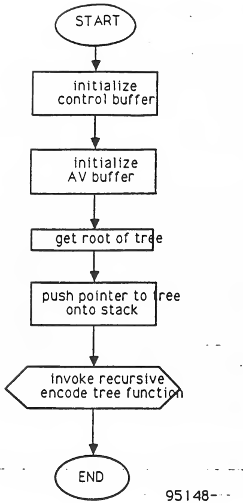
Figure 3.2.3 - 1 ACIS Tree to Encoded String
図 3.2.3 - 1 ACIS の木から符号化文字列へ
![Flowchart: "BEGIN" → "pop node pointer off stack" → "get node operator using node pointer" → "mark node as checked" → decision "does node type = leaf ?". "yes" (left branch): decision "any control data ?"; "yes" → "encode control string" (hexagonal) → "clear out control buffer" → "read in leaf data"; "no" bypasses directly to "read in leaf data". Then "encode leaf data" (hexagonal) → "mark leaf node as checked" → "RETURN". "no" (right branch): "store node type in control buffer" → decision "all subtrees tested ?"; "no" → "get leftmost unchecked subtree" → "push pointer to subtree onto stack" → "invoke recursive encode tree function" (hexagonal), which loops back to "all subtrees tested ?"; "yes" → a box whose text is cut off at its right edge in the original ("add backup cha" / "to control buf") → "RETURN".](assets/ir-4259/p0125-drawing-01.png)
Figure 3.2.3 -2 Recursive Encode Tree Function
図 3.2.3 -2 再帰的な木の符号化の関数
![Flowchart: "BEGIN" → "GET LENGTH OF LEAF DATA IN BYTES" → "GET POINTER INTO AV BUFFER" → decision "DON'T CARE LEAF ?". "YES" (right column): "PLACE DON'T CARE TAG TYPE IN UPPER NIBBLE" → "PLACE LEN (IN BYTES) OF LEN OF DON'T CARE DATA IN LOWER NIBBLE" → "PLACE LEN OF DON'T CARE DATA IN NEXT BYTE(S)" → "UPDATE AV BUFFER POINTER" → "RETURN". "NO" (left): decision "NUM OF BYTES <16 ?"; "YES" → "PLACE LEAF DATA TAG TYPE IN UPPER NIBBLE" → "PLACE LEN (IN BYTES) OF LEAF DATA IN LOWER NIBBLE"; "NO" → "PLACE LEAF DATA TAG TYPE IN BYTE" → "PLACE LEN (IN BYTES) OF LEAF DATA IN NEXT BYTE". Both paths join at "PLACE LEAF DATA AFTER TYPE/LEN BYTE" → "UPDATE AV BUFFER POINTER" → "RETURN". Drawing number "95148-6".](assets/ir-4259/p0126-figure-01.png)
3.2.3 - 3 Encode Leaf Data
3.2.3 - 3 葉データの符号化

3.2.3 - 4 Encode Control Data
3.2.3 - 4 制御データの符号化
3.2.4 ENCODED STRING TO ACIS TREE
3.2.4 符号化文字列から ACIS の木へ
Figure 3.2.4 -1 presents a flowchart of the algorithm to transform an encoded string into a Linear tree.
図 3.2.4 -1 は、符号化文字列を線形の木に変換するアルゴリズムのフローチャートを示しています。
The AV string contains consecutive segments of control and leaf data. The string is processed a segment at a time until the end of the string is reached. Each segment contains a type, length and data field. The type and length fields are descriptors of the data field.
AV 文字列は、制御データと葉データの連続したセグメントを含みます。文字列は、末尾に到達するまで 1 セグメントずつ処理されます。各セグメントは、型、長さ、データの各フィールドを含みます。型フィールドと長さフィールドは、データフィールドの記述子です。
The first field of the segment is the type field and it identifies the type of data within the data field. The second field of the segment is the length field which specifies the number of bytes of data within the data field. When the length of the data is less than 16 bytes the type and length fields are placed in the same byte. Otherwise, the type and length fields are placed in consecutive bytes.
セグメントの最初のフィールドは型フィールドで、データフィールド内のデータの型を識別します。セグメントの 2 番目のフィールドは長さフィールドで、データフィールド内のデータのバイト数を指定します。データの長さが 16 バイト未満の場合、型フィールドと長さフィールドは同じバイトに置かれます。そうでない場合、型フィールドと長さフィールドは連続するバイトに置かれます。
The type field also dictates the utilization of the data within the data field. The control data type specifies that the data field is to be processed a nibble at a time with each nibble representing a control character (as defined above). Each time a control character specifies the creation of a node, the node is initialized and attached to the previously existing node. The new node is now considered the parent node and the next control character is associated with the new node. A Last In First Out (LIFO) queue is used to save the node pointers while descending down the tree. Accordingly, each time a control character specifies the creation of a node, a pointer to the parent node is pushed onto the LIFO. The tree is ascended by popping a pointer to the parent node off of the LIFO. This is implemented by defining a backup control character. A backup control character specifies to pop a node pointer off of the LIFO queue. Subsequent control characters are then associated with the popped node.
型フィールドは、データフィールド内のデータの用い方も規定します。制御データ型は、データフィールドを 1 ニブルずつ処理し、各ニブルが（上で定義した）制御文字を表すことを指定します。制御文字がノードの作成を指定するたびに、そのノードが初期化され、既存のノードに接続されます。新しいノードは親ノードとみなされ、次の制御文字は新しいノードに関連付けられます。木を下る間にノードのポインターを保存するために、後入れ先出し（LIFO）キューが使われます。したがって、制御文字がノードの作成を指定するたびに、親ノードへのポインターが LIFO にプッシュされます。木を上るには、親ノードへのポインターを LIFO からポップします。これは、後戻り制御文字を定義することで実装されます。後戻り制御文字は、ノードのポインターを LIFO キューからポップすることを指定します。後続の制御文字は、ポップされたノードに関連付けられます。
The changing of levels in a tree only occurs when processing control data. Leaf and Don't Care fields simply specify to create a LEAF node, store the leaf data to the node and attach the LEAF node to the present node. The level in the tree does not change. This allows multiple LEAF nodes to be placed below a single parent without additional control data. The level in a tree is only changed when "F" in a control data field is encountered. This control character is used to indicate that the algorithm should "back up" to the parent of the current node.
木の中の階層の変化は、制御データを処理するときにのみ起こります。葉フィールドと Don't Care フィールドは、単に LEAF ノードを作成し、葉データをそのノードに格納し、その LEAF ノードを現在のノードに接続することを指定します。木の中の階層は変化しません。これにより、追加の制御データなしに、1 つの親の下に複数の LEAF ノードを置けます。木の中の階層が変わるのは、制御データフィールドで「F」に遭遇したときだけです。この制御文字は、アルゴリズムが現在のノードの親に「後戻り」すべきことを示すために使われます。
Whenever control or leaf data is processed to completion the pointer to the AV is adjusted to point past the end of the data field to the next segment in the AV string.
制御データまたは葉データが最後まで処理されるたびに、AV へのポインターは、データフィールドの終端を越えて、AV 文字列の次のセグメントを指すように調整されます。
![Faintly printed flowchart (most decision diamonds begin with a small [illegible] mark above the question). "START" → "GET POINTER TO START OF DATA" → decision "MORE DATA TO READ ?" ("NO" → "END"); "YES" → "READ IN TYPE/LEN BYTE" → "UPDATE STRING POINTER" → a row of decisions: "TOP NIBBLE = CONTROL TAG ?", "NO" → "TOP NIBBLE = DON'T CARE ?", "NO" → "TOP NIBBLE = DATA TAG ?", "NO" → "LOW NIBBLE = DATA TAG ?", whose "NO" exit, marked "ERROR", joins the right-hand return line. Control branch ("YES" from CONTROL TAG): "READ LEN (IN BYTES) OF CONTROL DATA (LOW NIB)" → "CONVERT LENGTH TO NIBBLES" → decision "COUNTER > 0 ?" ("NO" → back up the left-hand line to "MORE DATA TO READ ?"); "YES" → "READ IN NIBBLE OF CONTROL DATA" → "DECREMENT COUNTER" → decision "NIBBLE = NULL ?" ("YES" → left-hand line back to the top); "NO" → decision "NIBBLE = NODE ?": "YES" → "CREATE NODE OF NODE TYPE" → "ATTACH NEW NODE TO PARENT NODE" → "PUSH POINTER TO PARENT NODE ONTO LIFO"; "NO" → decision "NIBBLE = BACKUP ?": "YES" → "POP POINTER TO PARENT NODE OFF LIFO", otherwise "ERROR". These paths join at the bottom and loop back up to "COUNTER > 0 ?". Leaf branch ("YES" from DON'T CARE or DATA TAG → "READ IN LENGTH OF DATA (LOW NIB)"; "YES" from LOW NIBBLE = DATA TAG → "READ IN LENGTH OF DATA (NEXT BYTE)"): "CREATE A LEAF NODE" → "ATTACH LEAF NODE TO PARENT NODE" → "READ LEN OF DATA" → decision "DON'T CARE LEAF ?": "YES" → "READ AND STORE DATA TO LEN FIELD OF LEAF NODE" → "MARK LEAF NODE AS DON'T CARE NODE"; "NO" → "STORE LEN OF DATA IN NODE" → "READ AND STORE DATA TO LEAF NODE". Both join at "UPDATE STRING POINTER", which returns by the right-hand line to "MORE DATA TO READ ?". Drawing number at the lower right is [illegible].](assets/ir-4259/p0130-drawing-01.png)
3.2.5 EXAMPLE TRANSFORMATION OF ENCODED STRING TO ACIS TREE
3.2.5 符号化文字列から ACIS の木への変換の例
The following example is modeled from the leftmost branch of figure 2.3.2-2. All values are represented in hexidecimal format.
次の例は、図 2.3.2-2 の最も左の枝をモデルにしたものです。すべての値は 16 進数形式で表されています。
Key:
凡例:
T/L = Type/Length
Fn = Field Number n
T/L = 型/長さ
Fn = フィールド番号 n
| D1 | 12 | E1 | 82 | E1 | 04 | D1 | 10 |
| T/L | F1 | T/L | F2 | T/L | F3 | T/L | F4 |
| E1 | DE | E1 | AD | E1 | 7A | E1 | 55 |
| T/L | F5 | T/L | F6 | T/L | F7 | T/L | F8 |
| D1 | F1 | E1 | 08 | E1 | 09 | ||
| T/L | F9 | T/L | F10 | T/L | F11 |
| D1 | 12 | E1 | 82 | E1 | 04 | D1 | 10 |
| T/L | F1 | T/L | F2 | T/L | F3 | T/L | F4 |
| E1 | DE | E1 | AD | E1 | 7A | E1 | 55 |
| T/L | F5 | T/L | F6 | T/L | F7 | T/L | F8 |
| D1 | F1 | E1 | 08 | E1 | 09 | ||
| T/L | F9 | T/L | F10 | T/L | F11 |
= 22 bytes
= 22 バイト
1st field = control data of length 1 (byte)
1st nibble = 1 = build an OR node
2nd nibble = 2 = build an AND node (below the OR node)
1 番目のフィールド = 長さ 1（バイト）の制御データ
1 番目のニブル = 1 = OR ノードを構築する
2 番目のニブル = 2 = （OR ノードの下に）AND ノードを構築する
2nd field = leaf data of length 1 (byte)
build a LEAF node (below the AND node)
read in data (82H) and attach to LEAF node
return (to AND node)
2 番目のフィールド = 長さ 1（バイト）の葉データ
（AND ノードの下に）LEAF ノードを構築する
データ（82H）を読み込み、LEAF ノードに接続する
（AND ノードへ）戻る
3rd field = leaf data of length 1 (byte)
build a LEAF node (below the AND node)
read in data (04H) and attach to LEAF node
return (to AND node)
3 番目のフィールド = 長さ 1（バイト）の葉データ
（AND ノードの下に）LEAF ノードを構築する
データ（04H）を読み込み、LEAF ノードに接続する
（AND ノードへ）戻る
4th field = control data of length 1 (byte)
1st nibble = 1 = build an OR node (below the AND node)
2nd nibble = 0 = null (padding)
4 番目のフィールド = 長さ 1（バイト）の制御データ
1 番目のニブル = 1 = （AND ノードの下に）OR ノードを構築する
2 番目のニブル = 0 = ヌル（パディング）
5th field = leaf data of length 1 (byte)
build a LEAF node (below the OR node)
read in data (DEH) and attach to LEAF node
return (to OR node)
5 番目のフィールド = 長さ 1（バイト）の葉データ
（OR ノードの下に）LEAF ノードを構築する
データ（DEH）を読み込み、LEAF ノードに接続する
（OR ノードへ）戻る
6th field = leaf data of length 1 (byte)
build a LEAF node (below the OR node)
read in data (ADH) and attach to LEAF node
return (to OR node)
6 番目のフィールド = 長さ 1（バイト）の葉データ
（OR ノードの下に）LEAF ノードを構築する
データ（ADH）を読み込み、LEAF ノードに接続する
（OR ノードへ）戻る
7th field = leaf data of length 1 (byte)
build a LEAF node (below the OR node)
read in data (7AH) and attach to LEAF node
return (to OR node)
7 番目のフィールド = 長さ 1（バイト）の葉データ
（OR ノードの下に）LEAF ノードを構築する
データ（7AH）を読み込み、LEAF ノードに接続する
（OR ノードへ）戻る
8th field = leaf data of length 1 (byte)
build a LEAF node (below the OR node)
read in data (55H) and attach to LEAF node
return (to OR node)
8 番目のフィールド = 長さ 1（バイト）の葉データ
（OR ノードの下に）LEAF ノードを構築する
データ（55H）を読み込み、LEAF ノードに接続する
（OR ノードへ）戻る
9th field = control data of length 1 (byte)
1st nibble = F = backup to next highest node (AND node)
2nd nibble = 1 = build an OR node (below the AND node)
9 番目のフィールド = 長さ 1（バイト）の制御データ
1 番目のニブル = F = 次に上位のノード（AND ノード）へ後戻りする
2 番目のニブル = 1 = （AND ノードの下に）OR ノードを構築する
10th field = leaf data of length 1 (byte)
build a LEAF node (below the OR node)
read in data (08H) and attach to LEAF node
return (to OR node)
10 番目のフィールド = 長さ 1（バイト）の葉データ
（OR ノードの下に）LEAF ノードを構築する
データ（08H）を読み込み、LEAF ノードに接続する
（OR ノードへ）戻る
11th field = leaf data of length 1 (byte)
build a LEAF node (below the OR node)
read in data (09H) and attach to LEAF node
11 番目のフィールド = 長さ 1（バイト）の葉データ
（OR ノードの下に）LEAF ノードを構築する
データ（09H）を読み込み、LEAF ノードに接続する
3.2.6 EXAMPLE TRANSFORMATION FROM ACIS TREE TO ENCODED STRING
3.2.6 ACIS の木から符号化文字列への変換の例
The following example is again modeled from the leftmost branch of figure 2.3.2-2.
次の例も、図 2.3.2-2 の最も左の枝をモデルにしたものです。
| process | command buffer |
|---|---|
| get top node of tree | |
| save top node type in command buffer | 1 |
| go to leftmost unchecked subnode | |
| save node type in command buffer | 12 |
| go to leftmost subnode | |
| subnode = LEAF, so encode command buffer | |
| encoded data = D1 12 | |
| clear command buffer | NULL |
| read and encode leaf data | |
| mark leaf node as checked | |
| encoded data = E1 82 | |
| backup a node | |
| go to leftmost unchecked subnode | |
| subnode = LEAF and command buffer is empty | |
| read and encode leaf data | |
| mark leaf node as checked | |
| encoded data = E1 04 | |
| backup a node | |
| go to leftmost unchecked subnode | |
| save node type in command buffer | 1 |
| go to leftmost subnode | |
| subnode = LEAF, so encode command buffer | |
| encoded data = D1 10 | |
| clear command buffer | NULL |
| read and encode leaf data | |
| mark leaf node as checked | |
| encoded data = E1 DE | |
| backup a node | |
| go to leftmost unchecked subnode | |
| subnode = LEAF and command buffer is empty | |
| read and encode leaf data | |
| mark leaf node as checked | |
| encoded data = E1 AD | |
| backup a node | |
| go to leftmost unchecked subnode | |
| subnode = LEAF and command buffer is empty | |
| read and encode leaf data | |
| mark leaf node as checked | |
| encoded data = E1 7A | |
| backup a node | |
| go to leftmost unchecked subnode | |
| subnode = LEAF and command buffer is empty | |
| read and encode leaf data | |
| mark leaf node as checked | |
| encoded data = E1 55 | |
| backup a node | |
| node has no more unchecked subnodes so, | |
| mark node as checked, backup a node | F |
| go to leftmost unchecked subnode | |
| save node type in command buffer | F1 |
| go to leftmost subnode | |
| subnode = LEAF, so encode command buffer | |
| encoded data = D1 F1 | |
| clear command buffer | NULL |
| read and encode leaf data | |
| mark leaf node as checked | |
| encoded data = E1 08 | |
| backup a node | |
| go to leftmost unchecked subnode | |
| subnode = LEAF and command buffer is empty so, | |
| read and encode leaf data | |
| mark leaf node as checked | |
| encoded data = E1 09 | |
| backup a node, save in command buffer | |
| node has no more unchecked subnodes so, | F |
| mark node as checked, backup a node | FF |
| at top node so done | |
| (no need to encode rest of control characters) | |
| 処理 | コマンドバッファー |
|---|---|
| 木の最上位ノードを取得する | |
| 最上位ノードの型をコマンドバッファーに保存する | 1 |
| 最も左の未チェックの下位ノードへ進む | |
| ノードの型をコマンドバッファーに保存する | 12 |
| 最も左の下位ノードへ進む | |
| 下位ノード = LEAF なので、コマンドバッファーを符号化する | |
| 符号化データ = D1 12 | |
| コマンドバッファーをクリアする | NULL |
| 葉データを読み込んで符号化する | |
| 葉ノードをチェック済みにする | |
| 符号化データ = E1 82 | |
| 1 つ後戻りする | |
| 最も左の未チェックの下位ノードへ進む | |
| 下位ノード = LEAF かつコマンドバッファーが空 | |
| 葉データを読み込んで符号化する | |
| 葉ノードをチェック済みにする | |
| 符号化データ = E1 04 | |
| 1 つ後戻りする | |
| 最も左の未チェックの下位ノードへ進む | |
| ノードの型をコマンドバッファーに保存する | 1 |
| 最も左の下位ノードへ進む | |
| 下位ノード = LEAF なので、コマンドバッファーを符号化する | |
| 符号化データ = D1 10 | |
| コマンドバッファーをクリアする | NULL |
| 葉データを読み込んで符号化する | |
| 葉ノードをチェック済みにする | |
| 符号化データ = E1 DE | |
| 1 つ後戻りする | |
| 最も左の未チェックの下位ノードへ進む | |
| 下位ノード = LEAF かつコマンドバッファーが空 | |
| 葉データを読み込んで符号化する | |
| 葉ノードをチェック済みにする | |
| 符号化データ = E1 AD | |
| 1 つ後戻りする | |
| 最も左の未チェックの下位ノードへ進む | |
| 下位ノード = LEAF かつコマンドバッファーが空 | |
| 葉データを読み込んで符号化する | |
| 葉ノードをチェック済みにする | |
| 符号化データ = E1 7A | |
| 1 つ後戻りする | |
| 最も左の未チェックの下位ノードへ進む | |
| 下位ノード = LEAF かつコマンドバッファーが空 | |
| 葉データを読み込んで符号化する | |
| 葉ノードをチェック済みにする | |
| 符号化データ = E1 55 | |
| 1 つ後戻りする | |
| ノードに未チェックの下位ノードがもうないので、 | |
| ノードをチェック済みにし、1 つ後戻りする | F |
| 最も左の未チェックの下位ノードへ進む | |
| ノードの型をコマンドバッファーに保存する | F1 |
| 最も左の下位ノードへ進む | |
| 下位ノード = LEAF なので、コマンドバッファーを符号化する | |
| 符号化データ = D1 F1 | |
| コマンドバッファーをクリアする | NULL |
| 葉データを読み込んで符号化する | |
| 葉ノードをチェック済みにする | |
| 符号化データ = E1 08 | |
| 1 つ後戻りする | |
| 最も左の未チェックの下位ノードへ進む | |
| 下位ノード = LEAF かつコマンドバッファーが空なので、 | |
| 葉データを読み込んで符号化する | |
| 葉ノードをチェック済みにする | |
| 符号化データ = E1 09 | |
| 1 つ後戻りし、コマンドバッファーに保存する | |
| ノードに未チェックの下位ノードがもうないので、 | F |
| ノードをチェック済みにし、1 つ後戻りする | FF |
| 最上位ノードにいるので完了 | |
| （残りの制御文字を符号化する必要はない） | |
3.2.7 POSSIBLE EXPANSIONS OF ENCODING RULES
3.2.7 符号化規則の拡張の可能性
1.Need a length of more than 16 sequential control characters.
1.16 個を超える連続した制御文字の長さが必要。
Simply add another field of control data immediately following the first.
最初のフィールドのすぐ後に、別の制御データのフィールドを追加するだけです。
Example coding:
符号化の例:
| DF | 12 34 56 78 9A BC DE F0 | DF | 12 34 56 78 9A BC DE F0 | ... |
| T/L | data | T/L | data |
| DF | 12 34 56 78 9A BC DE F0 | DF | 12 34 56 78 9A BC DE F0 | ... |
| T/L | データ | T/L | データ |
2.Need more that 16 possible control characters.
2.16 個を超える制御文字の種類が必要。
Simply add another tag type of data and define new control characters (without changing the original definitions).
データの別のタグ型を追加し、（元の定義は変更せずに）新しい制御文字を定義するだけです。
C = Control Data (in bytes) tag type
D = Control Data (in nibbles) tag type
E = Leaf Data tag type
F = Don't Care Leaf Data
C = 制御データ（バイト単位）のタグ型
D = 制御データ（ニブル単位）のタグ型
E = 葉データのタグ型
F = Don't Care 葉データのタグ型
control character definitions
(Here C, D and E may have different definitions as control characters.)
制御文字の定義
（ここで C、D、E は、制御文字として異なる定義を持つ場合があります。）
00 = null
01 = Build OR node
02 = Build AND node
03 = Build a NUMERIC RANGE node
04 = Build a BIT VECTOR RANGE node
05 = Build a N-OF node
.
.
.
0F = backup to parent node
.
.
.
FF = ??
00 = ヌル
01 = OR ノードを構築する
02 = AND ノードを構築する
03 = NUMERIC RANGE ノードを構築する
04 = BIT VECTOR RANGE ノードを構築する
05 = N-OF ノードを構築する
.
.
.
0F = 親ノードへ後戻りする
.
.
.
FF = ??
Example coding:
符号化の例:
| C2 | 01 02 | E1 | 82 | E1 | 04 | C1 | 01 |
| T/L | data | T/L | data | T/L | data | T/L | data |
| E1 | DE | E1 | AD | E1 | 7A | E1 | 55 |
| T/L | data | T/L | data | T/L | data | T/L | data |
| C2 | 0F 01 | E1 | 08 | E1 | 09 | ||
| T/L | data | T/L | data | T/L | data |
| C2 | 01 02 | E1 | 82 | E1 | 04 | C1 | 01 |
| T/L | データ | T/L | データ | T/L | データ | T/L | データ |
| E1 | DE | E1 | AD | E1 | 7A | E1 | 55 |
| T/L | データ | T/L | データ | T/L | データ | T/L | データ |
| C2 | 0F 01 | E1 | 08 | E1 | 09 | ||
| T/L | データ | T/L | データ | T/L | データ |
= 24 bytes
= 24 バイト
Although this example shows every control character represented by a byte, the nibble representation could be used in fields that do not contain byte long control characters.
この例では、すべての制御文字がバイトで表現されていますが、バイト長の制御文字を含まないフィールドでは、ニブルによる表現を使用できます。
4.0 COMPARING OF ACCESS CONTROL ATTRIBUTES
4.0 アクセス制御属性の比較
Figure 4-1 presents a flow chart of the ACIS portion of PAA. The first three boxes on the left side of the figure apply to the communication initiator while the right three boxes show the actions taken by the communication request recipient.
図 4-1 は、PAA のうち ACIS が担う部分のフローチャートを示しています。図の左側の最初の 3 つのボックスは通信の開始側に当てはまり、右側の 3 つのボックスは通信要求の受信側が行う動作を示しています。
When the initiator desires to establish communication it first obtains its own local entity attribute tree (which is contained in the entity's auxiliary vector) and sends it to the remote entity with whom communication is desired. When the remote entity receives the initiator's attribute tree (Receive Remote Entity Attribute Tree) it gets a copy of its own attribute tree and sends it to the initiator.
開始側は、通信を確立したいとき、まず自身のローカルのエンティティ属性の木（エンティティの補助ベクトルに含まれています）を取得し、通信したい相手のリモートエンティティに送ります。リモートエンティティは、開始側の属性の木を受け取る（リモートエンティティ属性の木の受信）と、自身の属性の木の写しを取得して、開始側に送ります。
Associated with receiving a remote entity's attribute tree is processing required to ensure the integrity and authenticity of the AV. This process includes verifying the signature used on the AV and checking that the Local Domain Authority is an authorized authority. In addition to that processing is processing which is necessary to extract the RBAC and IBAC relevant information from the auxiliary vector. Since the attribute tree has to be encoded in some fashion in order to place it into the auxiliary vector, it is necessary to undo the encoding process to recover the attribute tree. The requirements for extracting the RBAC and IBAC information and those associated with undoing the encoding process to recover the attribute tree still need to be supplied.
リモートエンティティの属性の木の受信には、AV の完全性と真正性を確実にするために必要な処理が伴います。この処理には、AV に使われている署名の検証と、ローカルドメイン機関が認可された機関であることのチェックが含まれます。その処理に加えて、補助ベクトルから RBAC と IBAC に関連する情報を取り出すために必要な処理があります。属性の木は、補助ベクトルに置くために何らかの形で符号化されなければならないため、属性の木を復元するには、符号化プロセスを元に戻す必要があります。RBAC と IBAC の情報を取り出すための要件、および符号化プロセスを元に戻して属性の木を復元することに関連する要件は、まだ示されていません。
Once the remote and local attribute trees are obtained the Intersect Local and Remote Entity Attribute Trees function depicted in Figure 4-2 is invoked. A copy of the local attribute tree is passed to this function. This copy of the local attribute tree serves as the basis of comparison with the remote entity attribute tree. If the intersection is non-null, it will also become the PDU labelling testing portion of the EV. The intersection function returns a indication of whether the intersection process yields a non-null intersection. If a non-null result is obtained then communication is authorized and the resulting EV is stored for later use when testing PDU labels. If a null intersection results then it is necessary to perform the necessary error handling.
リモートとローカルの属性の木が得られると、図 4-2 に示すローカルとリモートのエンティティ属性の木の共通部分を求める機能が呼び出されます。ローカルの属性の木の写しが、この機能に渡されます。この写しは、リモートエンティティの属性の木との比較の基礎として機能します。共通部分が空でなければ、それは EV の PDU ラベルをテストする部分にもなります。共通部分を求める機能は、共通部分を求めるプロセスの結果が空でないかどうかを示す値を返します。空でない結果が得られれば、通信は認可され、得られた EV は、後で PDU ラベルをテストするときに使うために保存されます。空の共通部分になった場合は、必要なエラー処理を行う必要があります。
![Flowchart. START has two outgoing arrows. Left column (top to bottom): "OBTAIN OWN LOCAL ENTITY ATTRIBUTE TREE"; "SEND LOCAL ENTITY ATTRIBUTE TREE TO REMOTE ENTITY"; "RECEIVE REMOTE ENTITY ATTRIBUTE TREE FROM REMOTE ENTITY". Right column: "RECEIVE REMOTE ENTITY ATTRIBUTE TREE"; "OBTAIN OWN LOCAL ENTITY ATTRIBUTE TREE"; "SEND LOCAL ENTITY ATTRIBUTE TREE TO REMOTE ENTITY". Both columns lead into the hexagonal box "INVOKE INTERSECT LOCAL AND REMOTE ENTITY ATTRIBUTE TREES FUNCTION", then the decision "IS COMMUNICATION AUTHORIZED ?". "YES" leads to "STORE ENFORCEMENT VECTOR"; "NO" leads to "PERFORM APPROPRIATE PROCESSING". Both paths join and end at "END". Drawing number "86118-3".](assets/ir-4259/p0141-figure-01.png)
Figure 4-1 Process Performed By Each Entity To Authorize Communication (Process 2)
図 4-1 通信を認可するために各エンティティが実行するプロセス（プロセス 2）
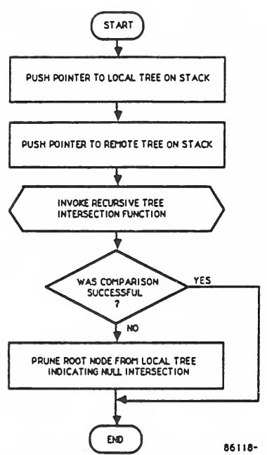
Figure 4-2 Intersect Local and Remote Entity Attribute Trees
図 4-2 ローカルとリモートのエンティティ属性の木の共通部分
Figure 4-2 through 4-11 provide detailed flowcharts of the attribute tree intersection process.
図 4-2 から 4-11 は、属性の木の共通部分を求めるプロセスの詳細なフローチャートを示しています。
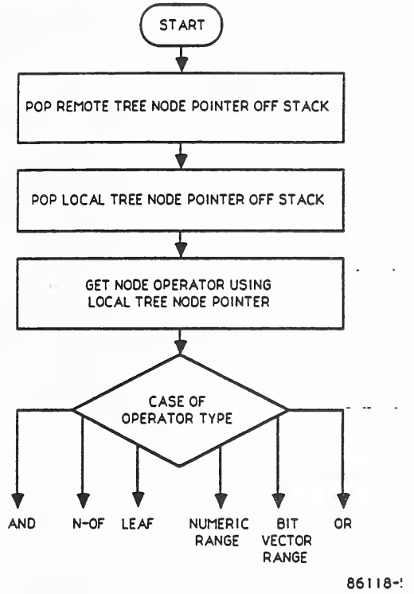
Figure 4-3 Recursive Intersection Testing Function
図 4-3 再帰的な共通部分のテストの関数
![Flowchart: "START"; "GET NODE OPERATOR USING REMOTE TREE NODE POINTER"; decision "IS REMOTE NODE OPERATOR = 'AND' ?". "NO" leads left to "PUSH FAILED COMPARISON INDICATION ONTO STACK" and "RETURN". "YES" leads down through "GET LEFTMOST UNTESTED SUBTREE OF LOCAL TREE", "GET LEFTMOST UNTESTED SUBTREE OF REMOTE TREE", "PUSH POINTER TO LOCAL SUBTREE ONTO STACK", "PUSH POINTER TO REMOTE SUBTREE ONTO STACK", hexagonal box "INVOKE RECURSIVE INTERSECTION TESTING FUNCTION", "POP COMPARISON INDICATION OFF STACK", to the decision "WAS COMPARISON SUCCESSFUL ?". "NO" leads left to "PUSH FAILED COMPARISON INDICATION ONTO STACK" and "RETURN". "YES" leads to the decision "ARE THERE MORE NODES OF LOCAL OR REMOTE TREE TO TEST ?"; "YES" loops back up the right side to just above "GET LEFTMOST UNTESTED SUBTREE OF LOCAL TREE"; "NO" leads to "PUSH SUCCESSFUL COMPARISON INDICATION ONTO STACK" and "RETURN". Drawing number "86118-" (last character [illegible]).](assets/ir-4259/p0144-figure-01.png)
Figure 4-4 "AND" Operator (Intersection)
図 4-4 「AND」演算子（共通部分）
![Flowchart: "BEGIN"; "GET NODE OPERATOR USING REMOTE TREE NODE POINTER"; decision "IS REMOTE OPERATOR = 'OR' ?". "NO" leads left to "PUSH FAILED COMPARISON INDICATION ONTO STACK" and "RETURN". "YES" leads to "GET LEFTMOST UNTESTED SUBTREE OF LOCAL TREE", "GET LEFTMOST SUBTREE OF REMOTE TREE", then the decision "DOES NODE OF LOCAL TREE = NODE OF REMOTE TREE ?". Its "YES" leads left to a column: "PUSH POINTER TO LOCAL SUBTREE ONTO STACK", "PUSH POINTER TO REMOTE SUBTREE ONTO STACK", hexagonal box "INVOKE RECURSIVE TESTING FUNCTION", decision "WAS COMPARISON SUCCESSFUL ?"; its "NO" rejoins the main line just above the next decision, and its "YES" leads to "SET INDICATOR THAT AT LEAST ONE SUBTREE MATCHED", which rejoins the main line just above "ARE THERE MORE SUBTREES OF LOCAL TREE TO TEST ?". The "NO" of "DOES NODE OF LOCAL TREE = NODE OF REMOTE TREE ?" leads to the decision "ARE THERE MORE SUBTREES OF REMOTE TREE TO TEST ?"; "YES" leads right to "GET LEFTMOST UNTESTED SUBTREE OF REMOTE TREE", which loops back to just above "DOES NODE OF LOCAL TREE = NODE OF REMOTE TREE ?"; "NO" leads to "PRUNE SUBTREE FROM LOCAL TREE", then to the decision "ARE THERE MORE SUBTREES OF LOCAL TREE TO TEST ?". Its "YES" loops up the right side to just above "GET LEFTMOST UNTESTED SUBTREE OF LOCAL TREE"; its "NO" leads to the decision "IS INDICATOR THAT AT LEAST ONE SUBTREE MATCHED SET ?". "YES" leads to "PUSH SUCCESSFUL COMPARISON INDICATION ONTO STACK" and "RETURN"; "NO" leads right to "PRUNE 'OR' NODE FROM LOCAL TREE", "PUSH FAILED COMPARISON ONTO STACK" and "RETURN". Drawing number "86118-7".](assets/ir-4259/p0145-figure-01.png)
Figure 4-5 "OR" Operator (Intersection)
図 4-5 「OR」演算子（共通部分）
![Flowchart: "BEGIN"; "GET NODE OPERATOR USING REMOTE TREE NODE POINTER"; decision "IS REMOTE NODE OPERATOR = 'LEAF' ?"; "NO" leads left to "PUSH FAILED COMPARISON INDICATION ONTO STACK" and "RETURN". "YES" leads to the decision "DO FIELD WIDTHS MATCH ?"; "NO" leads left to "PUSH FAILED COMPARISON INDICATION ONTO STACK" and "RETURN". "YES" leads to the decision "CASE OF LOCAL LEAF TYPE" with two branches. Branch "'DON'T CARE'" (left): decision "IS REMOTE LEAF TYPE = 'DON'T CARE' ?"; "YES" leads to "PUSH SUCCESSFUL COMPARISON INDICATION ONTO STACK" and "RETURN"; "NO" leads to "REPLACE DON'T CARE LEAF IN LOCAL TREE WITH LITERAL LEAF FROM REMOTE TREE", "PUSH SUCCESSFUL COMPARISON INDICATION ONTO STACK" and "RETURN". Branch "'LITERAL'" (right): decision "IS REMOTE LEAF TYPE = 'DON'T CARE' ?"; "YES" leads to "PUSH SUCCESSFUL COMPARISON INDICATION ONTO STACK" and "RETURN"; "NO" leads to the decision "DOES LOCAL LEAF LITERAL = REMOTE LEAF LITERAL ?"; "YES" leads to "PUSH SUCCESSFUL COMPARISON INDICATION ONTO STACK" and "RETURN"; "NO" leads to "PUSH FAILED COMPARISON INDICATION ONTO STACK" and "RETURN". Drawing number "86118-" (last character [illegible]). The scan is faint; some letters are blurred.](assets/ir-4259/p0146-figure-01.png)
Figure 4-6 Leaf Operator (Intersection)
図 4-6 葉演算子（共通部分）
![Flowchart: "BEGIN"; "GET NODE OPERATOR USING REMOTE TREE NODE POINTER"; decision "IS REMOTE OPERATOR = 'N-OF' ?"; "NO" leads left to "PUSH FAILED COMPARISON INDICATION ONTO STACK" and "RETURN". "YES" leads to "GET MEMBER COUNT OF N-OF NODE FROM LOCAL AND REMOTE TREE" and the decision "DOES MEMBER COUNT OF LOCAL NODE MATCH MEMBER COUNT OF REMOTE NODE?"; "NO" leads left to "PUSH FAILED COMPARISON INDICATION ONTO STACK" and "RETURN". "YES" leads through "GET COUNT LEAF SUBTREE POINTER OF LOCAL TREE", "GET COUNT LEAF SUBTREE POINTER OF REMOTE TREE", "PUSH POINTER TO LOCAL COUNT LEAF ONTO STACK", "PUSH POINTER TO REMOTE COUNT LEAF ONTO STACK" to the decision "WAS COMPARISON SUCCESSFUL ?"; "NO" leads left to "PUSH FAILED COMPARISON INDICATION ONTO STACK" and "RETURN"; the other exit leads down to the off-page connector "1". Drawing number "86118-15" (last character [illegible]).](assets/ir-4259/p0147-drawing-01.png)
Figure 4-7 "N-OF" Operator (Intersection)
図 4-7 「N-OF」演算子（共通部分）
![Flowchart continuing from the off-page connector "1" ("YES"): "GET LEFTMOST MEMBER SUBTREE OF LOCAL TREE"; "GET LEFTMOST MEMBER SUBTREE OF REMOTE TREE"; "PUSH POINTER TO LOCAL SUBTREE ONTO STACK"; "PUSH POINTER TO REMOTE SUBTREE ONTO STACK"; hexagonal box "INVOKE RECURSIVE TESTING FUNCTION"; decision "WAS COMPARISON SUCCESSFUL ?". "YES" leads to "INCREMENT COUNT OF MATCHING NODES". "NO" leads right to the decision "ARE THERE MORE SUBTREES OF REMOTE TREE TO TEST ?"; its "YES" goes up the right side to "GET LEFTMOST UNTESTED MEMBER SUBTREE OF REMOTE TREE", which returns to just above "PUSH POINTER TO LOCAL SUBTREE ONTO STACK"; its "NO" leads to "MARK SUBTREE OF LOCAL TREE FOR REMOVAL". "INCREMENT COUNT OF MATCHING NODES" and "MARK SUBTREE OF LOCAL TREE FOR REMOVAL" join at the decision "ARE THERE MORE SUBTREES OF LOCAL TREE TO TEST ?"; "YES" goes up the far right to "GET LEFTMOST UNTESTED MEMBER SUBTREE OF LOCAL TREE", which returns to just above "GET LEFTMOST MEMBER SUBTREE OF REMOTE TREE"; "NO" leads to the decision "IS COUNT OF MATCHING NODES >= MEMBER COUNT ?". "YES" leads to "PRUNE MARKED SUBTREES FROM LOCAL TREE", "PUSH SUCCESSFUL COMPARISON INDICATION ONTO STACK" and "RETURN"; "NO" leads left to "ERASE MARKS FROM NON-MATCHING MEMBER SUBTREES", "PUSH FAILED COMPARISON INDICATION ONTO STACK" and "RETURN". Drawing number "86118-15" (last character [illegible]).](assets/ir-4259/p0148-figure-01.png)
Figure 4-7 "N-OF" Operator (Intersection) (Cont)
図 4-7 「N-OF」演算子（共通部分）（続き）
![Flowchart: "START"; "GET NODE OPERATOR USING REMOTE FREE NODE POINTER" (printed so); decision "IS REMOTE NODE OPERATOR = 'NUMERIC RANGE' ?"; "NO" leads left to "PUSH FAILED COMPARISON INDICATION ONTO STACK" and "RETURN". "YES" leads to the decision "DOES FIELD WIDTH IN LOCAL NODE = FIELD WIDTH IN REMOTE NODE ?"; "NO" leads left to "PUSH FAILED COMPARISON INDICATION ONTO STACK" and "RETURN". "YES" leads to "DETERMINE LOWER OF UPPER LIMITS IN LOCAL AND REMOTE NODES", "DETERMINE HIGHER OF LOWER LIMITS IN LOCAL AND REMOTE NODES", and the decision "IS DERIVED UPPER LIMIT > DERIVED LOWER LIMIT ?" (the comparison sign has a short stroke above it and may be meant as ">="); "NO" leads left to "PUSH FAILED COMPARISON INDICATION ONTO STACK" and "RETURN". The other exit leads down through "PLACE DERIVED UPPER LIMIT IN UPPER LIMIT OF LOCAL NODE", "PLACE DERIVED LOWER LIMIT IN LOWER LIMIT OF LOCAL NODE", "PUSH SUCCESSFUL COMPARISON INDICATION ONTO STACK" to "RETURN". Drawing number "95148-".](assets/ir-4259/p0149-drawing-01.png)
Figure 4-8 "Numeric Range" Operator (Intersection)
図 4-8 「Numeric Range」演算子（共通部分）
![Flowchart: "START"; "GET NODE OPERATOR USING REMOTE TREE NODE POINTER"; decision "IS REMOTE NODE OPERATOR = 'BIT VECTOR RANGE' ?"; "NO" leads left to "PUSH FAILED COMPARISON INDICATION ONTO STACK" and "RETURN". "YES" leads to the decision "DOES FIELD WIDTH IN LOCAL NODE = FIELD WIDTH IN REMOTE NODE ?"; "NO" leads left to "PUSH FAILED COMPARISON INDICATION ONTO STACK" and "RETURN". "YES" leads to "GET LEFTMOST UNTESTED OCTET OF LOCAL AND REMOTE LOWER LIMIT NODES", "PERFORM BITWISE 'OR' OF LOCAL AND REMOTE VALUES AND STORE IN TEMPORARY LOWER VALUE", and the decision "ARE MORE OCTETS TO TEST ?"; "YES" loops back up the right side to just above "GET LEFTMOST UNTESTED OCTET..."; "NO" leads to the off-page connector "1". Drawing number "95148-".](assets/ir-4259/p0150-figure-01.png)
Figure 4-9 "Bit Vector Range" Operator (Intersection)
図 4-9 「Bit Vector Range」演算子（共通部分）
![Flowchart continuing from the off-page connector "1": "GET LEFTMOST UNTESTED OCTET OF LOCAL AND REMOTE UPPER LIMIT NODES"; "PERFORM BITWISE 'AND' OF LOCAL AND REMOTE VALUES AND STORE IN TEMPORARY UPPER VALUE"; decision "ARE MORE OCTETS TO TEST ?"; "YES" loops back on the right to just above the first box; "NO" leads to "GET LEFTMOST UNTESTED OCTET OF TEMPORARY UPPER VALUE", "PERFORM BITWISE 'INVERSE' OF TEMPORARY UPPER VALUE OCTET AND STORE IN INVERSE UPPER VALUE", "GET LEFTMOST UNTESTED OCTET OF TEMPORARY LOWER VALUE", "PERFORM BITWISE 'AND' OF INVERSE UPPER AND LOWER VALUE OCTETS", and the decision "IS RESULT = 0 ?". "NO" leads left to "PUSH FAILED COMPARISON INDICATION ONTO STACK" and "RETURN". "YES" leads right to a second decision "ARE MORE OCTETS TO TEST ?"; its right exit loops up the far right to just above "GET LEFTMOST UNTESTED OCTET OF TEMPORARY UPPER VALUE", and its lower exit leads to the off-page connector "2" (these two exits are not labelled). Drawing number "95148-3" (last character partly [illegible]).](assets/ir-4259/p0151-figure-01.png)
Figure 4-10 "Bit Vector Range" Operator (Intersection - cont)
図 4-10 「Bit Vector Range」演算子（共通部分 - 続き）
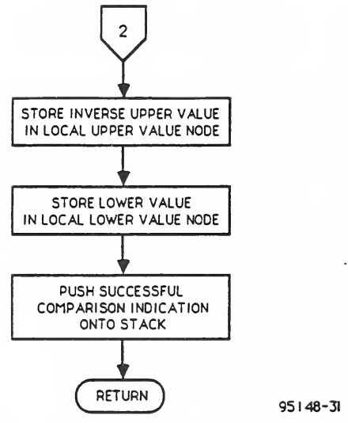
Figure 4-11 "Bit Vector Range" Operator (Intersection - cont2)
図 4-11 「Bit Vector Range」演算子（共通部分 - 続き 2）
5.0 ACCESS CONTROL ENFORCEMENT
5.0 アクセス制御の実施
Figure 5-1 shows a flow chart of the PDU security label testing process. To begin the process, a determination of the correct EV to use for a PDU is made. The selection criteria may include such items as destination(or source) address and whether an EV has been created per sensitivity label. If the appropriate EV does not exist for some reason (e.g., a connection has not yet been established) then appropriate error handling must be performed.
図 5-1 は、PDU セキュリティラベルのテストプロセスのフローチャートを示しています。プロセスを始めるにあたり、PDU に使用する正しい EV を決定します。選択基準には、宛先（または送信元）のアドレスや、機微度ラベルごとに EV が作成されているかどうかなどの項目が含まれる場合があります。何らかの理由（たとえば、接続がまだ確立されていない場合）で適切な EV が存在しない場合は、適切なエラー処理を行わなければなりません。
![Flowchart: "START"; "DETERMINE APPROPRIATE EV FOR PDU"; decision "DOES EV EXIST ?". "NO" leads right and down to "PERFORM APPROPRIATE PROCESSING" and "END". "YES" leads to the decision "IS IT NECESSARY TO TEST PDU LABEL ?"; "NO" runs down the left side to the final junction above the bottom "END". "YES" leads to "GET SECURITY LABEL FROM PDU", "RETRIEVE STORED EV", hexagonal box "INVOKE PDU SECURITY LABEL TESTING", and the decision "WAS PDU SECURITY LABEL AUTHORIZED ?". "NO" leads right to "DESTROY PDU AND AUDIT OCCURRENCE", which returns to the main line; "YES" continues down. All join and lead to "END". Drawing number "86118-" (last character [illegible]).](assets/ir-4259/p0153-figure-01.png)
Figure 5-1 Test PDU Security Label (Process 3)
図 5-1 PDU セキュリティラベルのテスト（プロセス 3）
Next a decision is made whether a PDU label test is necessary. This is done because not all PDUs need to contain PDU security labels (e.g., single-level hosts need not label). If a label test is not required, the RBAC portion of PAE is complete.
次に、PDU ラベルのテストが必要かどうかが判断されます。これは、すべての PDU が PDU セキュリティラベルを含む必要があるわけではないためです（たとえば、単一レベルのホストはラベル付けを行う必要がありません）。ラベルのテストが必要ない場合、PAE のうち RBAC の部分は完了です。
If label testing is required, then the security label of the PDU (actually a pointer to the security label and the EV generated during PAA are retrieved (actually a pointer to the EV). The security label testing function is then invoked with the security label and the EV. The PDU security label testing function which is shown in Figures 5-2 through 5-10 then determine if the label matches the labelling requirements expressed in the EV. If the label passes the label testing then the PDU is authorized with respect to the ACIS RBAC rules and this part of the PAE process is complete. If the label is unacceptable then appropriate error handling of the PDU is required. This error handling may include destroying the PDU and auditing the event.
ラベルのテストが必要な場合は、PDU のセキュリティラベル（実際にはセキュリティラベルへのポインター）と、PAA の間に生成された EV（実際には EV へのポインター）が取得されます。その後、セキュリティラベルと EV を引数として、セキュリティラベルのテスト機能が呼び出されます。図 5-2 から図 5-10 に示す PDU セキュリティラベルテスト機能は、ラベルが EV で表現されたラベル付け要件に一致するかどうかを判定します。ラベルテストに合格すれば、その PDU は ACIS の RBAC ルールに関して認可され、PAE プロセスのこの部分は完了です。ラベルが受け入れられない場合は、その PDU に対する適切なエラー処理が必要です。このエラー処理には、PDU の破棄とイベントの監査が含まれる場合があります。
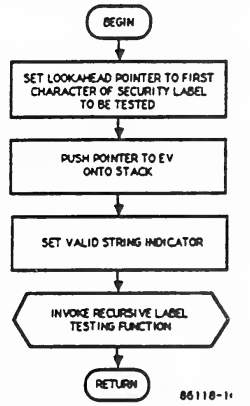
Figure 5-2 PDU Security Label Testing
図 5-2 PDU セキュリティラベルのテスト

Figure 5-3 Recursive Label Testing Function
図 5-3 再帰的なラベルテストの関数
![Flowchart: "BEGIN"; "GET LEFTMOST UNTESTED SUBTREE OF EV"; "PUSH POINTER TO SUBTREE ONTO STACK"; hexagonal box "INVOKE RECURSIVE LABEL TESTING FUNCTION"; decision "WAS COMPARISON SUCCESSFUL ?". "NO" leads left to "PUSH FAILED COMPARISON INDICATION ONTO STACK" and "RETURN". "YES" leads to the decision "ARE THERE MORE SUBTREES TO TEST ?"; "YES" loops up the right side to just above "GET LEFTMOST UNTESTED SUBTREE OF EV"; "NO" leads to "PUSH SUCCESSFUL COMPARISON INDICATION ONTO STACK" and "RETURN". Drawing number "86118-1".](assets/ir-4259/p0157-figure-01.png)
Figure 5-4 "AND" Operator (Label Testing)
図 5-4 「AND」演算子（ラベルテスト）
![Flowchart: "BEGIN"; "GET LEFTMOST UNTESTED SUBTREE OF EV"; "PUSH POINTER TO SUBTREE ONTO STACK"; hexagonal box "INVOKE RECURSIVE LABEL TESTING FUNCTION"; decision "WAS COMPARISON SUCCESSFUL ?". "YES" leads left to "PUSH FAILED COMPARISON INDICATION ONTO STACK" (printed so) and "RETURN". "NO" leads to the decision "ARE THERE MORE SUBTREES TO TEST ?"; "YES" loops up the right side to just above "GET LEFTMOST UNTESTED SUBTREE OF EV"; "NO" leads to "PUSH FAILED COMPARISON INDICATION ONTO STACK" and "RETURN". Drawing number "86118-1".](assets/ir-4259/p0158-figure-01.png)
Figure 5-5 "OR" Operator (Label Testing)
図 5-5 「OR」演算子（ラベルテスト）
![Flowchart: "BEGIN"; decision "IS LEAF TYPE = DON'T CARE ?". "YES" leads to "GET FIELD WIDTH" and the decision "DOES LABEL STRING CONTAIN FIELD WIDTH CHARACTERS ?"; its "NO" leads left to "RESET VALID STRING INDICATOR", "PUSH FAILED COMPARISON INDICATION ONTO STACK" and "RETURN"; its "YES" leads to "INCREMENT LOOKAHEAD POINTER BY FIELD WIDTH CHARACTERS", "PUSH SUCCESSFUL COMPARISON INDICATION ONTO STACK" and "RETURN". "NO" of the first decision runs down the right side to the decision "DOES FIRST CHARACTER OF LEAF MATCH CHARACTER POINTED TO BY LOOKAHEAD POINTER?"; its "NO" leads to "PUSH FAILED COMPARISON INDICATION ONTO STACK" and "RETURN"; its "YES" leads left to "INCREMENT LOOKAHEAD POINTER BY ONE CHARACTER", then to the decision "ARE THERE MORE CHARACTERS TO TEST ?". Its "NO" leads left to "PUSH SUCCESSFUL COMPARISON ONTO STACK" and "RETURN"; its "YES" leads to the decision "DOES NEXT CHARACTER OF LEAF MATCH CHARACTER POINTED TO BY LOOKAHEAD POINTER?". Its "YES" leads right to "SET INDICATOR THAT AT LEAST ONE SUBTREE MATCHED", which loops back up to just above "ARE THERE MORE CHARACTERS TO TEST ?"; its "NO" leads to "RESET VALID STRING INDICATOR", "PUSH FAILED COMPARISON INDICATOR ONTO STACK" and "RETURN". Drawing number "86118-1". The scan is faint; several letters are blurred.](assets/ir-4259/p0159-figure-01.png)
Figure 5-6 "Leaf" Operator (Label Testing)
図 5-6 「Leaf」演算子（ラベルテスト）
![Flowchart: "BEGIN"; "GET COUNT LEAF SUBTREE POINTER OF LOCAL TREE"; "PUSH POINTER TO SUBTREE ONTO STACK"; "INVOKE RECURSIVE LABEL TESTING FUNCTION"; decision "WAS COMPARISON SUCCESSFUL ?"; "NO" leads left to "PUSH FAILED COMPARISON INDICATION ONTO STACK" and "RETURN". "YES" leads to "GET LEFTMOST MEMBER SUBTREE", then to a junction followed by "PUSH POINTER TO SUBTREE ONTO STACK", "INVOKE RECURSIVE TESTING FUNCTION" and the decision "WAS COMPARISON SUCCESSFUL ?". Its "YES" leads to "INCREMENT COUNT OF MATCHING NODES", "MARK SUBTREE TO INDICATE MATCH HAS BEEN FOUND" and the decision "DOES MATCH COUNT = MEMBER COUNT ?"; that decision's "NO" runs up the left side to "GET LEFTMOST UNTESTED AND UNMATCHED MEMBER SUBTREE" (left box), which feeds the junction; its "YES" leads to "REMOVE MATCHED MARKS FROM SUBTREES", "PUSH SUCCESSFUL COMPARISON INDICATION ONTO STACK" and "RETURN". The "NO" of the second "WAS COMPARISON SUCCESSFUL ?" leads right to the decision "ARE THERE MORE SUBTREES TO TEST ?"; its "YES" runs up the right side to "GET LEFTMOST UNTESTED AND UNMATCHED MEMBER SUBTREE" (right box), which feeds the same junction; its "NO" leads to "REMOVE MATCHED MARKS FROM SUBTREES", "RESET VALID STRING INDICATOR", "PUSH FAILED COMPARISON INDICATION ONTO STACK" and "RETURN". Drawing number "86118-17" (last character uncertain).](assets/ir-4259/p0160-drawing-01.png)
Figure 5-7 "N-OF" Operator (Label Testing)
図 5-7 「N-OF」演算子（ラベルテスト）
![Flowchart: "START"; "GET FIELD WIDTH"; decision "DOES LABEL STRING CONTAIN FIELD WIDTH CHARACTERS ?"; "NO" leads left to "PUSH FAILED COMPARISON INDICATION ONTO STACK" and "RETURN". "YES" leads to "READ FIELD WIDTH CHARACTERS FROM STRING BEGINNING AT LOOKAHEAD POINTER" and the decision "IS VALUE READ FROM LABEL ≤ UPPER LIMIT ?"; "NO" leads left to "PUSH FAILED COMPARISON INDICATION ONTO STACK" and "RETURN". "YES" leads to the decision "IS VALUE READ FROM LABEL ≥ LOWER LIMIT ?"; "NO" leads left to "PUSH FAILED COMPARISON INDICATION ONTO STACK" and "RETURN". "YES" leads to "INCREMENT LOOKAHEAD POINTER BY FIELD WIDTH CHARACTERS", "PUSH SUCCESSFUL COMPARISON INDICATION ONTO STACK" and "RETURN". Drawing number "95148-".](assets/ir-4259/p0161-drawing-01.png)
Figure 5-8 "Numeric Range" Operator (Label Testing)
図 5-8 「Numeric Range」演算子（ラベルテスト）
![Flowchart: "START"; "GET FIELD FROM NODE WIDTH"; decision "DOES LABEL STRING CONTAIN FIELD WIDTH CHARACTERS ?"; "NO" leads left to "PUSH FAILED COMPARISON INDICATION ONTO STACK" and "RETURN". "YES" leads to "READ FIELD WIDTH CHARACTERS FROM STRING BEGINNING AT LOOKAHEAD POINTER", then to a junction followed by "GET LEFTMOST UNTESTED OCTET OF LOWER VALUE NODE", "PERFORM BITWISE 'AND' OF LOWER VALUE OCTET AND LEFT MOST UNTESTED OCTET OF STRING" and the decision "IS RESULT = LOWER VALUE OCTET ?"; "NO" leads left to "PUSH FAILED COMPARISON INDICATION ONTO STACK" and "RETURN". "YES" leads to "GET LEFTMOST UNTESTED OCTET OF UPPER VALUE NODE", "PERFORM BITWISE 'AND' OF UPPER VALVE OCTET AND CURRENT STRING OCTET" (printed so) and the decision "IS RESULT = 0 ?"; "NO" leads left to "PUSH FAILED COMPARISON INDICATION ONTO STACK" and "RETURN". "YES" leads right to the decision "IS TEST COMPLETE ?"; "NO" runs up the right side back to the junction above "GET LEFTMOST UNTESTED OCTET OF LOWER VALUE NODE"; "YES" leads to the off-page connector "A". Drawing number "95148-4".](assets/ir-4259/p0162-figure-01.png)
Figure 5-9 "Bit Vector Range" Operator (Label Testing)
図 5-9 「Bit Vector Range」演算子（ラベルテスト）
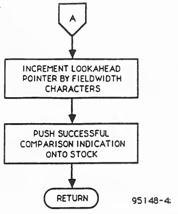
Figure 5-10 "Bit Vector Range" Operator (Label Testing) (Cont)
図 5-10 「Bit Vector Range」演算子（ラベルテスト）（続き）
6.0 GENERAL COMPILER PRINCIPLES
6.0 コンパイラーの一般原理
This goal of this review is to lay a foundation for the concepts and terminology used earlier in the ACIS grammar definition in Section 2.2. I am particularly indebted to Alfred V. Aho, Ravi Sethi, and Jerry D. Ullman2 from whose work, Compilers. Principles. Techniques, and Tools, this summary is derived. The interested reader is strongly encouraged to review the original for a much more complete discussion of the concepts presented. In general, this summary follows these authors' conventions and terminology unless explicitly noted.
このレビューの目的は、第 2.2 節の ACIS 文法の定義で先に用いた概念と用語の基礎を示すことです。特に、Alfred V. Aho、Ravi Sethi、Jerry D. Ullman2 の著作 Compilers. Principles. Techniques, and Tools を参考にしており、この要約はその著作に基づいています。関心のある読者は、ここで示した概念についてより詳しい議論を読むために、原典を参照することを強くお勧めします。明示的に記している場合を除き、この要約では一般に、これらの著者の慣例と用語に従っています。
6.1 Grammar Components
6.1 文法の構成要素
A grammar is a natural way of describing the hierarchical structure of programming languages or for defining the interrelationship of various access control attributes in ACIS.
文法は、プログラミング言語の階層構造を記述する、または ACIS のさまざまなアクセス制御属性の相互関係を定義するための、自然な方法です。
Terminals are the most basic symbols from which sentences in a language are formed. The word "token" is a synonym for "terminal". Tokens represent some meaningful string of characters drawn from the alphabet of characters (e.g., A-Z a-z 0-9 ( ) , ; .) defined for the programming language. They constitute the lowest level elements defined for a language hence, the name terminal. Everything else in the language must be constructed from them. For a programming language compiler a token might be assigned to the character string BEGIN, or the character string ":=" (used as an assignment operator). For ACIS, the terminals define such elements as the actual values to be found in PDU labels or some elemental access control attribute.
終端記号は、言語の文が形成される最も基本的な記号です。「トークン」という語は「終端記号」の同義語です。トークンは、プログラミング言語に対して定義された文字のアルファベット（たとえば、A-Z a-z 0-9 ( ) , ; .）から取られた、何らかの意味のある文字列を表します。トークンは言語に対して定義される最下位の要素を構成するため、終端記号と呼ばれます。言語内の他のすべては、これらから構成されます。プログラミング言語のコンパイラーでは、文字列 BEGIN や、（代入演算子として使われる）文字列「:=」にトークンが割り当てられる場合があります。ACIS では、終端記号によって、PDU ラベルに見られる実際の値や、何らかの基本的なアクセス制御属性などの要素が定義されます。
Nonterminals are the syntactic variables that are built from the ordered collection of terminals and/or other nonterminals. The nonterminals provide the hierarchical structure to grammars since at the lowest level they are constructed exclusively of terminals but as one moves down the hierarchy they are made of other terminals and/or nonterminals (which in turn could be made up of other nonterminals).
非終端記号は、終端記号や他の非終端記号（あるいはその両方）の順序付けられた集まりから構築される構文上の変数です。非終端記号は文法に階層構造を与えます。最下位のレベルでは非終端記号は終端記号だけから構成されますが、階層を下るにつれて、他の終端記号や非終端記号（あるいはその両方）から作られ、それらもさらに他の非終端記号から構成される場合があります。
One of the nonterminals is distinguished as the start symbol. Typically this symbol will be implicitly denoted as such by appearing as the first production in the grammar. The set of strings that can be derived from this variable constitute the language defined by the grammar. For ACIS, this represents the total space of allowable access control attributes including labels.
非終端記号の 1 つは、開始記号として区別されます。通常、この記号は、文法の最初の生成規則に現れることで、暗黙のうちにそれと示されます。この変数から導出できる文字列の集合が、その文法によって定義される言語を構成します。ACIS では、これは、ラベルを含む、許容されるアクセス制御属性の全空間を表します。
Lastly, a grammar is composed of productions. These specify the manner in which the terminals and nonterminals can be combined to form terminal strings within the language. A production consists of a nonterminal, called the left side of the production, an arrow ( → ), and a sequence of tokens and/or nonterminals. This sequence of terminals and/or nonterminals is called the right side of the production. The → is used to indicate that the right side provides a definition for the nonterminal on the left side of the production. It is possible to define a string containing neither terminals nor nonterminals. This string is called the empty string and is denoted by e. For notational convenience, productions with the same nonterminal on the left side can have their right sides grouped with the alternative right sides separated by a | symbol. This symbol is read as an "or".
最後に、文法は生成規則で構成されます。生成規則は、終端記号と非終端記号を組み合わせて、言語内の終端文字列を形成する方法を指定します。生成規則は、生成規則の左辺と呼ばれる非終端記号、矢印（ → ）、およびトークンや非終端記号（あるいはその両方）の並びで構成されます。この終端記号や非終端記号（あるいはその両方）の並びは、生成規則の右辺と呼ばれます。→ は、生成規則の右辺が左辺の非終端記号の定義を与えることを示します。終端記号も非終端記号も含まない文字列を定義することも可能です。この文字列は空文字列と呼ばれ、e で表されます。表記上の便宜のため、左辺に同じ非終端記号を持つ生成規則は、代替の右辺を | 記号で区切ってまとめて書くことができます。この記号は「or」と読みます。
A grammar derives tokens strings (and ultimately character strings when the tokens are replaced by the literal values they represent) by beginning with the start symbol and repeatedly replacing a nonterminal with the right side of a production for that nonterminal. The replacement process proceeds until terminals are reached. The token strings that can be derived from the start symbol form the language defined by the grammar.
文法は、開始記号から始めて、非終端記号をその非終端記号の生成規則の右辺で繰り返し置き換えることで、トークン列（そして、トークンがそれらの表すリテラル値に置き換えられると、最終的に文字列）を導出します。置き換えのプロセスは終端記号に到達するまで進みます。開始記号から導出できるトークン列が、その文法によって定義される言語を形成します。
6.2 Parsing
6.2 構文解析
One way to ensure that a particular string is part of a language defined by a grammar is to use the productions of that grammar to derive the string in question. A parse tree is a graphical representation of such a derivation. For the sake of example, assume the following grammar (called grammar 1):
特定の文字列が、文法によって定義される言語に属することを確かめる方法の 1 つは、その文法の生成規則を用いて、当該の文字列を導出することです。構文木は、そのような導出の図式的な表現です。例として、次の文法（文法 1 と呼びます）を仮定します。
1.list → list + digit
1.list → list + digit
2.list → list - digit
2.list → list - digit
3.list → digit
3.list → digit
4.digit → 0 | 1 | 2 | 3 | 4 | 5 | 6 | 7 | 8 | 9
4.digit → 0 | 1 | 2 | 3 | 4 | 5 | 6 | 7 | 8 | 9
or equivalently:
あるいは同等に、次のように書けます。
list → list + digit | list - digit | digit
digit → 0 | 1 | 2 | 3 | 4 | 5 | 6 | 7 | 8 | 9
list → list + digit | list - digit | digit
digit → 0 | 1 | 2 | 3 | 4 | 5 | 6 | 7 | 8 | 9
The productions in the first representation have been numbered in order to easily refer to them. The tokens (or terminals) for this grammar are 0 1 2 3 4 5 6 7 8 9 + -. Terminals are identified by the bold font. The nonterminals are list and digit. Digits are defined in terms of the terminals 0 - 9. The nonterminal list is defined in terms of the nonterminals list and digit and the terminals + and -. List is the starting nonterminal because its production is given first.
最初の表現の生成規則には、参照しやすいように番号が付けられています。この文法のトークン（または終端記号）は 0 1 2 3 4 5 6 7 8 9 + - です。終端記号は太字で識別されます。非終端記号は list と digit です。digit は、終端記号 0 - 9 で定義されます。非終端記号 list は、非終端記号 list と digit、および終端記号 + と - で定義されます。list は、その生成規則が最初に示されているため、開始の非終端記号です。
If we are given the string 9 - 5 + 2, we can test to see if this conforms to the grammar by attempting to build a parse tree for it. If one can be built, the string is acceptable, otherwise it is not. Figure 6.2-1 shows such a parse tree.
文字列 9 - 5 + 2 が与えられた場合、それに対する構文木を構築しようとすることで、それが文法に適合するかどうかをテストできます。構文木を構築できれば、その文字列は受け入れ可能であり、そうでなければ受け入れ不可能です。図 6.2-1 は、そのような構文木を示しています。

Figure 6.2-1 Parse Tree From Grammar 1 for Example String
図 6.2-1 例の文字列に対する文法 1 からの構文木
a.9 is a digit by production 4.
a.9 は、生成規則 4 により digit です。
b.9 - 5 is a list by production 1, since 9 is a list by production 3 and 5 is a digit by production 4.
b.9 - 5 は、9 が生成規則 3 により list であり、5 が生成規則 4 により digit であるため、生成規則 1 により list です。
c.9 - 5 + 2 is a list, since 9 - 5 is a list and 2 is a digit. Since it was possible to construct a parse tree for the string 9 - 5 + 2, the string is shown to be a valid string in the language defined by grammar 1.
c.9 - 5 + 2 は、9 - 5 が list であり、2 が digit であるため、list です。文字列 9 - 5 + 2 に対して構文木を構築できたため、この文字列が文法 1 によって定義される言語の有効な文字列であることが示されました。
A parse tree has the following properties:
構文木は、次の性質を持ちます。
1.The root is labeled by the start symbol.
1.根には、開始記号のラベルが付けられます。
2.Each leaf is labeled by a token or by e.
2.各葉には、トークンまたは e のラベルが付けられます。
3.Each interior node of the tree is labeled by a nonterminal.
3.木の各内部ノードには、非終端記号のラベルが付けられます。
4.If A is the nonterminal labeling some interior node and \(X_1, X_2, \ldots X_n\) are the labels of the children of that node from left to right then \(A \rightarrow X_1 X_2 \ldots X_n\) is a production. Here \(X_1, X_2, \ldots X_n\) stands for a symbol that is either a terminal or a nonterminal. As a special case, if A → e then a node labeled A may have a single child labeled e.
4.A が、ある内部ノードにラベルとして付けられた非終端記号であり、\(X_1, X_2, \ldots X_n\) が、そのノードの子の左から右へのラベルであるとき、\(A \rightarrow X_1 X_2 \ldots X_n\) は生成規則です。ここで \(X_1, X_2, \ldots X_n\) は、終端記号または非終端記号のいずれかの記号を表します。特別な場合として、A → e であれば、A のラベルが付いたノードは、e のラベルが付いた子を 1 つだけ持つ場合があります。
6.3 Recursion
6.3 再帰
As can be seen from the grammar 1 example, general grammars can contain productions which include recursive definitions of nonterminals (i.e., the nonterminal appearing on the left side of a production also appears on the right side of the production. Productions can exhibit either right or left recursion depending upon where the nonterminal being defined appears in the right hand side of the production. Left-recursion occurs when the nonterminal being defined also appears as the first (or leftmost) symbol on the right side of the production. For example consider the production A → Aa | b. The parse tree for the string baaaaa is shown in Figure 6.3-1. This production is left recursive because the nonterminal A appears as the leftmost symbol in the definition of the nonterminal A.
文法 1 の例からわかるように、一般的な文法には、非終端記号の再帰的な定義を含む生成規則（すなわち、生成規則の左辺に現れる非終端記号が、その生成規則の右辺にも現れるもの）を含められます。生成規則は、定義される非終端記号が生成規則の右辺のどこに現れるかによって、右再帰または左再帰を示すことがあります。左再帰は、定義される非終端記号が、生成規則の右辺の最初の（最も左の）記号としても現れるときに生じます。たとえば、生成規則 A → Aa | b を考えます。文字列 baaaaa の構文木は、図 6.3-1 に示されています。この生成規則は、非終端記号 A が、非終端記号 A の定義の最も左の記号として現れるため、左再帰的です。
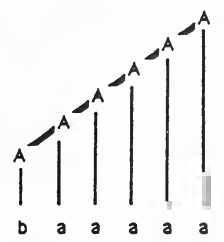
Figure 6.3-1 Parse Tree Derived From Left-Recursive Production
図 6.3-1 左再帰的な生成規則から導かれる構文木
Similarly a production can exhibit right recursion if the nonterminal on the left side of the production also appears as the rightmost symbol in a production. Let A be defined by the following grammar:
同様に、生成規則の左辺にある非終端記号が、生成規則の最も右の記号としても現れるとき、生成規則は右再帰を示すことがあります。A が次の文法で定義されるとします。
A → bR
R → aR | e
A → bR
R → aR | e
A new nonterminal R has been defined. It is right-recursive per the definition given above. Figure 6.3-2 shows the parse tree associated with the string baaaaa using the right-recursive grammar. Recursive productions are not allowed in ACIS grammars.
新しい非終端記号 R が定義されました。これは、上に示した定義によれば右再帰的です。図 6.3-2 は、右再帰的な文法を用いた、文字列 baaaaa に関連付けられた構文木を示しています。再帰的な生成規則は、ACIS の文法では許可されません。
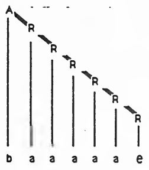
Figure 6.3-2 Parse Tree From Right-Recursive Grammar
図 6.3-2 右再帰的な文法からの構文木
6.4 Top-Down Parsing
6.4 トップダウン構文解析
There are basically two kinds of parsing algorithms. They are top-down or bottom-up. These refer to the way in which nodes in the parse tree are constructed. In the top-down methods, construction begins with the root using the starting nonterminal and proceeding towards the leaves (i.e., down toward the terminals or tokens). In bottom up parsing, construction begins with the leaves and proceeds upward toward the root (i.e., up toward the starting nonterminal).
構文解析のアルゴリズムには、基本的に 2 種類あります。トップダウンとボトムアップです。これらは、構文木のノードを構築する方法を指します。トップダウン法では、構築は開始の非終端記号を用いた根から始まり、葉（すなわち、終端記号またはトークンに向かって下）へ進みます。ボトムアップ構文解析では、構築は葉から始まり、根（すなわち、開始の非終端記号に向かって上）へ進みます。
The top-down construction of a parse tree is done by starting with the root, labelled with the starting nonterminal, and repeatedly performing the following two steps:
構文木のトップダウンでの構築は、開始の非終端記号のラベルが付いた根から始め、次の 2 つのステップを繰り返し実行することで行われます。
1.At node n, labelled with nonterminal A, select one of the productions for A and construct children at n for the symbols on the right side of the production.
1.非終端記号 A のラベルが付いたノード n で、A の生成規則の 1 つを選択し、その生成規則の右辺の記号に対応する子を n に構築します。
2.Find the next node at which a subtree is to be constructed. This process is continued until tokens have been reached at each of the subtrees. The tokens in the parse tree correspond to the tokens in the token string being tested.
2.次に部分木を構築すべきノードを見つけます。このプロセスは、各部分木でトークンに到達するまで続けられます。構文木のトークンは、テストされるトークン列のトークンに対応します。
Given the following grammar (grammar2) and the token string b x c, the parse tree shown in Figure 6.4-1 can be constructed using the algorithm given above.
次の文法（文法 2）と、トークン列 b x c が与えられた場合、上記のアルゴリズムを用いて、図 6.4-1 に示す構文木を構築できます。
type → A | a | b A c
A → x | y
type → A | a | b A c
A → x | y
The root of the parse tree is constructed using the starting nonterminal, type. This is shown in the first part of Figure 6.4-1. Since type is a nonterminal, it is necessary per step 1 of the algorithm to select one of the productions for type and construct children corresponding to each of the symbols on the right side of that production. In this example there are three possible choices that could be made for the definition of type. It could be defined by the nonterminal A, by the terminal a, or the terminal b followed by the nonterminal A followed by the terminal c. In order to determine which production should be selected, the terminal string being tested is used. This is done by scanning the token string in a left to right manner. The vertical arrow will be used to indicate the next character to be scanned and is called the lookahead symbol. In this example, it is clear that the production, type → b A c, is the correct choice because it is the only production that allows the token string to begin with the token b.
構文木の根は、開始の非終端記号 type を用いて構築されます。これは図 6.4-1 の最初の部分に示されています。type は非終端記号であるため、アルゴリズムのステップ 1 に従って、type の生成規則の 1 つを選択し、その生成規則の右辺の各記号に対応する子を構築する必要があります。この例では、type の定義として可能な選択肢が 3 つあります。非終端記号 A で定義される場合、終端記号 a で定義される場合、または終端記号 b の後に非終端記号 A、さらに終端記号 c が続く場合です。どの生成規則を選択すべきかを判断するために、テストされる終端記号列が使われます。これは、トークン列を左から右へ走査することで行われます。縦の矢印が、次に走査される文字を示すために使われ、これは先読み記号と呼ばれます。この例では、生成規則 type → b A c が正しい選択であることは明らかです。トークン列がトークン b で始まることを許す生成規則は、これだけだからです。

Figure 6.4-1 Top-Down Construction Of Parse Tree For String bxc
図 6.4-1 文字列 bxc に対する構文木のトップダウンでの構築
After the production is selected, the children are constructed for this production and the lookahead symbol is advanced to the next token, x. This symbol will be used to determine which production is to be used for the nonterminal A. These actions are indicated in part 2 of the figure.
生成規則が選択された後、この生成規則に対して子が構築され、先読み記号は次のトークン x に進められます。この記号は、非終端記号 A にどの生成規則を使うかを決定するために使われます。これらの動作は、図の第 2 部に示されています。
Next the children just constructed need to be tested to see if they need further definition. The first child, b, is a terminal so its definition is complete. The second symbol, A, however is a nonterminal so it is necessary to select a production to provide further definition. The nonterminal A can be defined by either the terminal x or y. Using the lookahead symbol, x, the first definition is selected. Construction of this child is shown in part 3 of the figure. Because x is a terminal, no more children are constructed at that node. After using the symbol x in the token string, the lookahead symbol is advanced to the symbol c. This will be used to test the third child in the definition of type. Since the symbol in the parse tree and the symbol in the token string match (i.e., they are both c) and because this is the last child, the parse tree is complete. The lookahead symbol was advanced beyond the c to ensure that the token string contained no other characters to be parsed. Notice that the token string to be parsed can be found at the leaves of the parse tree. Since a parse tree could be generated for the token string, bxc is shown to be a valid string in the language defined by grammar2. If it had been impossible to generate such a parse tree, then the token string would have been declared invalid.
次に、いま構築した子が、さらなる定義を必要とするかどうかをテストする必要があります。最初の子 b は終端記号であるため、その定義は完了しています。しかし、2 つ目の記号 A は非終端記号であるため、さらなる定義を与える生成規則を選択する必要があります。非終端記号 A は、終端記号 x または y のいずれかで定義できます。先読み記号 x を用いて、最初の定義が選択されます。この子の構築は、図の第 3 部に示されています。x は終端記号であるため、そのノードにこれ以上の子は構築されません。トークン列の記号 x を使った後、先読み記号は記号 c に進められます。これは、type の定義の 3 つ目の子をテストするために使われます。構文木の記号とトークン列の記号が一致し（すなわち、どちらも c）、これが最後の子であるため、構文木は完成です。先読み記号は、構文解析すべき他の文字がトークン列に含まれないことを確実にするために、c の先まで進められました。構文解析されるトークン列が、構文木の葉に見つかることに注意してください。トークン列に対して構文木を生成できたため、bxc は、文法 2 によって定義される言語の有効な文字列であることが示されました。そのような構文木を生成できなかった場合、そのトークン列は無効であると宣言されたはずです。
In the example just presented it was straightforward to determine which production to select when constructing the parse tree using the lookahead symbol. For example, the only variable production for type was type → b A c. This was because it is the only production that allows for a token string to begin with b. If our grammar had also included the production type → b A d. Either production could have been selected when using only the lookahead symbol b. Each production will also work with the second symbol x. It is not until the lookahead symbol is advanced to the third (in this case c) that the correct choice can be determined. Thus if we had chosen the second production (type → b A d), it isn't until we test the third child d that we determine that this does not match the token string under test. At this point in order to pick the alternate production it is necessary to reset the lookahead symbol to b and to replace the incorrect node definition of type with the correct one, type b A c.
いま示した例では、先読み記号を用いて構文木を構築する際に、どの生成規則を選択するかを判断することは簡単でした。たとえば、type の唯一の生成規則は type → b A c でした。これは、トークン列が b で始まることを許す生成規則がこれだけだったためです。もし文法に、生成規則 type → b A d も含まれていたとします。先読み記号 b だけを用いるなら、どちらの生成規則も選択できたでしょう。どちらの生成規則も、2 番目の記号 x でも機能します。先読み記号が 3 番目（この場合は c）に進められて初めて、正しい選択を判断できます。したがって、もし 2 つ目の生成規則（type → b A d）を選んでいたとすれば、3 つ目の子 d をテストして初めて、これがテスト中のトークン列に一致しないことがわかります。この時点で、代替の生成規則を選ぶには、先読み記号を b に戻し、type の誤ったノード定義を、正しいもの、すなわち type → b A c に置き換える必要があります。
In general, then the production selection process may involve trial and error. If a production is selected which does not allow the successful definition of a parse tree, it is necessary to backtrack and select an alternate production until either a parse tree has been built or all possibilities have been exhausted. There is a special class of grammars, however, in which backtracking is not required. These grammars have the characteristic that they do not allow ambiguities to exist with respect to the choice of production to choose when constructing a parse tree. At any given decision point, only one possible choice exists. These grammars are called predictive parsers. They are especially suited to the hand generation of grammars using the top-down definition illustrated above and is the kind of grammar recommended for ACIS.
一般に、生成規則の選択プロセスには試行錯誤が伴う場合があります。構文木を正常に定義できない生成規則を選択した場合は、構文木が構築されるか、すべての可能性が尽きるまで、バックトラックして別の生成規則を選択する必要があります。ただし、バックトラックが不要な特別なクラスの文法があります。これらの文法には、構文木を構築するときに選択する生成規則について曖昧さが生じないという特徴があります。どの決定点でも、可能な選択肢は1つだけです。これらの文法は、予測型パーサーと呼ばれます。これらは、上で示したトップダウン定義を用いた文法の手作業による生成に特に適しており、ACIS に推奨される種類の文法です。
| NIST-114A (REV. 3-89) | U.S. DEPARTMENT OF COMMERCE NATIONAL INSTITUTE OF STANDARDS AND TECHNOLOGY BIBLIOGRAPHIC DATA SHEET |
|---|---|
| 1. PUBLICATION OR REPORT NUMBER | NISTIR 90-4259 |
| 2. PERFORMING ORGANIZATION REPORT NUMBER | |
| 3. PUBLICATION DATE | MARCH 1990 |
| 4. TITLE AND SUBTITLE | |
| 5. AUTHOR(S) | Charles Dinkel (Editor) |
| 6. PERFORMING ORGANIZATION (IF JOINT OR OTHER THAN NIST, SEE INSTRUCTIONS) | U.S. DEPARTMENT OF COMMERCE NATIONAL INSTITUTE OF STANDARDS AND TECHNOLOGY GAITHERSBURG, MD 20899 |
| 7. CONTRACT/GRANT NUMBER | |
| 8. TYPE OF REPORT AND PERIOD COVERED | |
| 9. SPONSORING ORGANIZATION NAME AND COMPLETE ADDRESS (STREET, CITY, STATE, ZIP) | National Security Agency - Information Security Applications Group 9800 Savage Road, SDNS SPO (C23) Ft. Meade, MD 20755-6000 |
| 10. SUPPLEMENTARY NOTES | [ ] DOCUMENT DESCRIBES A COMPUTER PROGRAM; SF-185, FIPS SOFTWARE SUMMARY, IS ATTACHED. |
| 11. ABSTRACT (A 200-WORD OR LESS FACTUAL SUMMARY OF MOST SIGNIFICANT INFORMATION. IF DOCUMENT INCLUDES A SIGNIFICANT BIBLIOGRAPHY OR LITERATURE SURVEY, MENTION IT HERE.) | The Secure Data Network System project, known as SDNS, implements computer to computer communications security for distributed applications. The internationally accepted Open Systems Interconnection (OSI) computer networking architecture provides the framework for SDNS. SDNS uses the layering principles of OSI to implement secure data transfers between computer nodes of local area and wide area networks. This publication includes three access control documents developed by the National Security Agency (NSA) as output from the SDNS project. SDN.801 describes the principles and functions underlying the SDNS access control and authentication security services. SDN.802 provides specifications which form a common basis from which devices implementing the access control service will be able to achieve interoperability. The third document in the set, SDN.801 Addendum 1, is an extension of access control information specifications provided in section 5 of SDN.802. |
| 12. KEY WORDS (6 TO 12 ENTRIES; ALPHABETICAL ORDER; CAPITALIZE ONLY PROPER NAMES; AND SEPARATE KEY WORDS BY SEMICOLONS) | access control; authentication; computer security; network security; SDNS; security protocols |
| 13. AVAILABILITY | [X] UNLIMITED [ ] FOR OFFICIAL DISTRIBUTION. DO NOT RELEASE TO NATIONAL TECHNICAL INFORMATION SERVICE (NTIS). [ ] ORDER FROM SUPERINTENDENT OF DOCUMENTS, U.S. GOVERNMENT PRINTING OFFICE, WASHINGTON, DC 20402. [X] ORDER FROM NATIONAL TECHNICAL INFORMATION SERVICE (NTIS), SPRINGFIELD, VA 22161. |
| 14. NUMBER OF PRINTED PAGES | 161 |
| 15. PRICE | A08 |
| NIST-114A（REV. 3-89） | 米国商務省 米国標準技術研究所 書誌データシート |
|---|---|
| 1. 刊行物または報告書の番号 | NISTIR 90-4259 |
| 2. 実施機関の報告書番号 | |
| 3. 刊行日 | 1990 年 3 月 |
| 4. 題名および副題 | |
| 5. 著者 | Charles Dinkel（編集） |
| 6. 実施機関（共同の場合または NIST 以外の場合は、指示を参照） | 米国商務省 米国標準技術研究所 GAITHERSBURG, MD 20899 |
| 7. 契約/助成金番号 | |
| 8. 報告書の種類および対象期間 | |
| 9. 後援機関の名称および完全な住所（番地、市、州、郵便番号） | National Security Agency - Information Security Applications Group 9800 Savage Road, SDNS SPO (C23) Ft. Meade, MD 20755-6000 |
| 10. 補足事項 | [ ] 文書がコンピュータープログラムを説明しています。SF-185、FIPS ソフトウェア概要を添付。 |
| 11. 要旨（最も重要な情報の 200 語以内の事実に基づく要約。文書に重要な参考文献または文献調査が含まれる場合は、ここに記載すること。） | SDNS として知られるセキュアデータネットワークシステムプロジェクトは、分散アプリケーションのためのコンピューター間通信のセキュリティを実装するものです。国際的に受け入れられている開放型システム間相互接続（OSI）のコンピューターネットワークアーキテクチャが、SDNS の枠組みを提供しています。SDNS は、OSI の階層化の原則を用いて、ローカルエリアネットワークとワイドエリアネットワークのコンピューターノード間で、安全なデータ転送を実装します。本刊行物には、国家安全保障局（NSA）が SDNS プロジェクトの成果として作成した 3 件のアクセス制御文書が含まれています。SDN |
| 12. キーワード（6 から 12 項目、アルファベット順、固有名詞のみ大文字、キーワードはセミコロンで区切る） | access control; authentication; computer security; network security; SDNS; security protocols |
| 13. 入手可能性 | [X] 無制限 [ ] 公式配布用。国立技術情報サービス（NTIS）には提供しないこと。 [ ] 米国政府印刷局の Superintendent of Documents（WASHINGTON, DC 20402）に注文。 [X] 国立技術情報サービス（NTIS）（SPRINGFIELD, VA 22161）に注文。 |
| 14. 印刷ページ数 | 161 |
| 15. 価格 | A08 |
ELECTRONIC FORM
電子フォーム